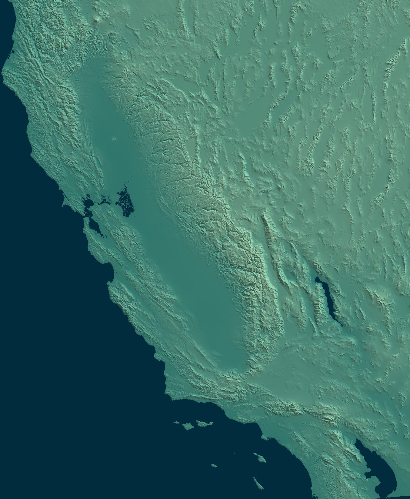
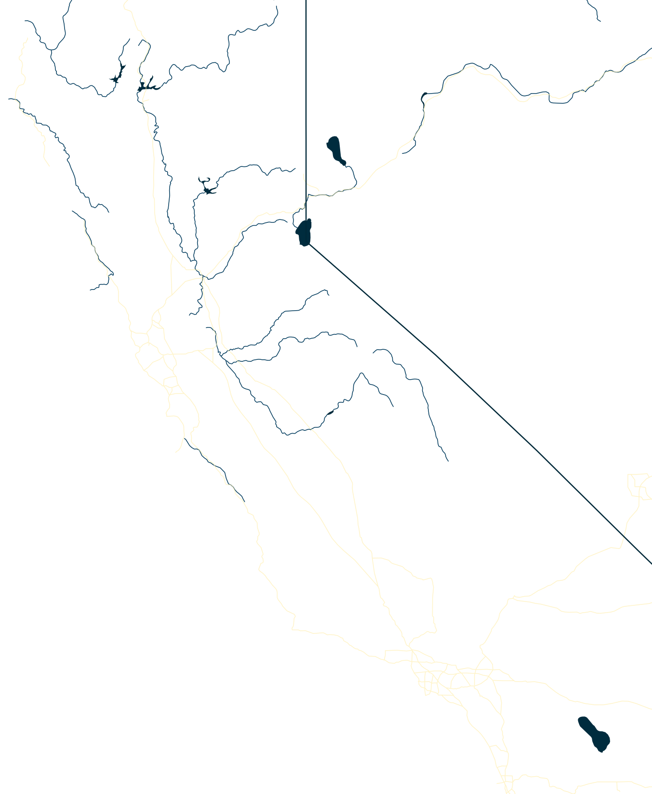
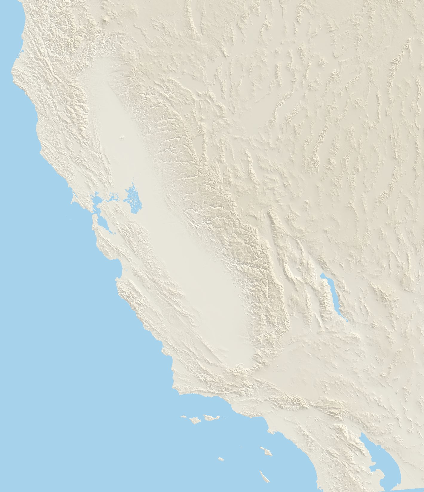
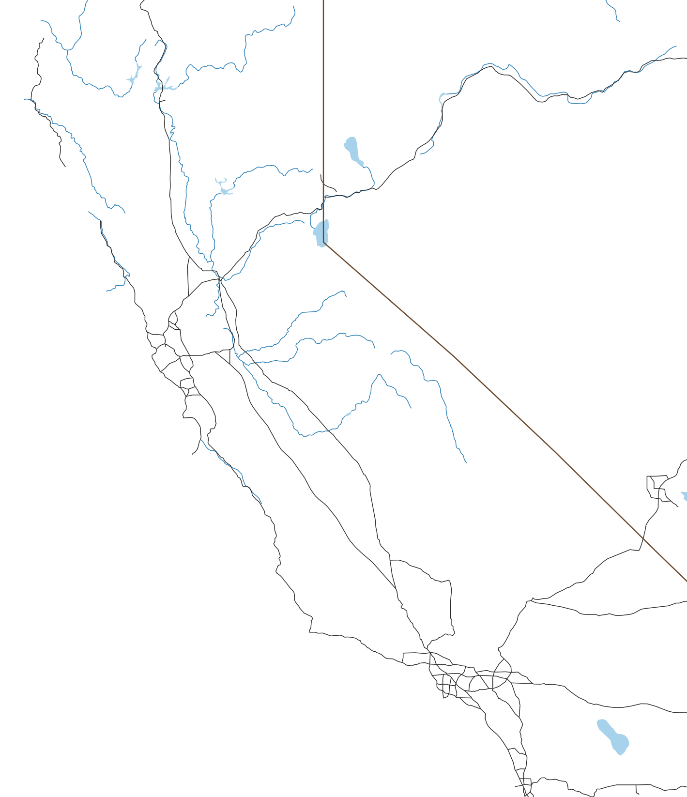

Hawkins Peak W6/SC-213
Summit
- Summit
- W6/SC-213 · Peakbagger
- Points
- 2
- First activation
- K6TAA, 5 June 2016
- Elevation
- 2,700′ (823 m)
- Prominence
- 876′ (267 m)
- Isolation
- 1.8 mi (3.0 km)
- Region
- Southern Coastal Ranges
- County
- San Benito, California
- Grid
- CM96jl
- Land
- Pinnacles National Park (National Park Service)
- Wilderness
- Hain Wilderness Area
- POTA park
- US-0640 Pinnacles National Park/Hain Wilderness Area
Route and radio
- Trailhead
- Bear Gulch Parking Area, 1,300′ (396 m)
- Access
- Paved road
- Red tape
- National Park Pass or day-use fee
- Round trip
- 5.5 mi (8.9 km), 8.5 h
- Elevation gain
- 1,750′ (533 m)
- Transport
- Hiking, Class 1 (Class 2 off trail to the activation zone, 5.6 to the summit)
- Cell service
- Top: Verizon good · way up: from 2,400′
- Towers, power lines
- None within 2 km
RF nearby: 177 licensed stations within 30 km
What to bring, the cheapest radio that still works here, on the AJ6X RF scale: HF: rung 1 of 4, uSDX or QMX, about $150: anything works. VHF: rung 1 of 4, Baofeng, about $25: anything works.
| Station | Service | Frequency | ERP | Where | Terrain | dBµV/m |
|---|---|---|---|---|---|---|
| KLOK-FM | FM radio | 99.5 MHz | 30 kW | 9.5 km W | in sight | 102 |
| KMBX | AM radio | 700 kHz | 2.5 kW | 9.5 km W | in sight | 88 |
| KMLY | FM radio | 95.1 MHz | 6 kW | 9.7 km W | −8 dB | 87 |
| KMJV | FM radio | 106.3 MHz | 4.7 kW | 24.7 km S | in sight | 86 |
| KKMC | AM radio | 880 kHz | 10 kW | 22.9 km W | −7 dB | 85 |
| KXSM | FM radio | 93.1 MHz | 2.5 kW | 9.7 km W | −9 dB | 82 |
| KSGZ | FM radio | 98.7 MHz | 2.5 kW | 9.7 km W | −9 dB | 82 |
| KNKK802 | paging | 931.737 MHz | 1.45 kW | 23.8 km SW | in sight | 81 |
| KSEA | FM radio | 107.9 MHz | 870 W | 23.8 km SW | in sight | 79 |
| KNKS216 | paging | 931.538 MHz | 525 W | 23.8 km SW | in sight | 77 |
| WPNV506 | business radio | 451.2–464.1 MHz | 500 W | 23.8 km SW | in sight | 76 |
| WNLY659 | public safety | 151.415 MHz | 251 W | 18.2 km NE | in sight | 76 |
Field strength at the summit from each station's power and distance, less an estimate of the terrain in between. A rough guide, by a rung either way: antenna patterns aren't known, and the noise from a site's equipment is in no licence. Data: FCC licences (2026-10-24), NOAA Weather Radio, OpenStreetMap.
Further down: Map · Aerial photo · QSO map · Summit to summit · Log
One week after North and South Chalone, we were back in the Pinnacles, this time for Hawkins Peak. Our friend Sam joined the kids (KO6MFO and KO6MFP) and me. And a much warmer day: 78°F down at the park, 11 degrees warmer than the week before, and 85°F in the Salinas Valley.
Hawkins Peak is the high point of the High Peaks, the jagged ridge in the middle of the park. The summit is a rock of its own, Tuff Dome, and its easiest route is a 5.6 rock climb (Mountain Project). No need for that: the activation zone reaches down to the base of the rock, and there are several spots there that need no technical skills (Jeffrey AA6XA).
Getting there
The east entrance, the fees and the drive to Bear Gulch are in North Chalone’s article; the same applies here.
There’s also a shorter way, from the west entrance: start at the Chaparral trailhead and take the Juniper Canyon and Tunnel Trails up to the High Peaks Trail, about 3.7 miles and 1,600′ round trip (Brian AB6D). The west side usually has more parking, and the climb is in the shade in the morning (Bob Burd). But there’s no road through the park between the two entrances, and the road to the west entrance is narrow and twisty, no good for RVs or trailers (SummitPost).
- Water: None on the trail. Fill up at the water station at the Bear Gulch Day Use Area.
- Heat: Most of the Condor Gulch Trail is exposed, on a south-facing slope. On a warm day, it gets hot quickly.
- Closures: In some years the park closes the area around Hawkins Peak while raptors nest (more below). Check the advisories before you go.
- Crowds: The High Peaks Trail is one of the busiest in the park, and on the narrow parts you take turns with the people coming the other way.
Trailhead
The same early start at 5 AM. Except the clocks had sprung forward the Sunday before, so it was really 4 AM by last week’s clock! We arrived a bit earlier than the week before, and this time a few more parking spots were still free at Bear Gulch. The kids finally got to eat their breakfast, and we were on the trail at 8:37 AM.
It was chilly in the morning: 43°F at dawn at the park’s weather station.
The way up
There are two ways to Hawkins Peak from Bear Gulch, and together they make a loop. The east side looks easier, and the west side is spectacular.
- West, through the caves: the Moses Spring Trail through Bear Gulch Cave to the reservoir, the Rim Trail, then the High Peaks Trail over the Steep and Narrow. Class 1, with stairs and handrails on the Steep and Narrow.
- East: the Condor Gulch Trail up to the High Peaks Trail. Class 1.
- Into the activation zone, from either one: a short walk off trail, up a gentle slope with a few small rocks to scramble over. Class 2.
- To the actual summit: a technical rock climb up Tuff Dome, 5.6 (Mountain Project).
The kids absolutely wanted to go through the caves, so we went clockwise: up the west side, and down the east side.
My GPS says 3.3 miles and 1,660′ of climbing to the base of the summit rock, and 5.5 miles for the whole loop.
Caves and reservoir
We started on the Moses Spring Trail, then went through Bear Gulch Cave. The caves and the reservoir are in North Chalone’s article, with photos. Just like last week, the caves were the coolest part of the day. After the caves, we admired Bear Gulch Reservoir for a few minutes, then moved on.
High Peaks Trail
From the reservoir, we took the Rim Trail, then the High Peaks Trail, up a gentle slope to the junction with the Juniper Canyon Trail, where there’s a restroom and a bench. It was starting to get warmer.

Past the junction, the High Peaks Trail goes over the High Peaks themselves: the Steep and Narrow, with stairs cut into the rock and metal handrails for going up and down. The Civilian Conservation Corps built it in the 1930s, and the steps are still the ones they cut (NPS).
This part of the trail was absolutely stunning: great views, and spectacular rocks. Also very busy, with many groups going both ways, including a whole Boy Scout troop heading west. We often had to stop and let people coming the other way pass.


The rock is volcanic breccia, from volcanoes that erupted about 23 million years ago, later faulted, broken and eroded into these cliffs and spires (NPS).

As we got close to the summit, it kept getting warmer, and soon it felt hot.
Past the Steep and Narrow, close to Hawkins Peak, we were in raptor country. This year a pair of peregrine falcons nested at Hawkins Peak, raised three young, and chased other falcons off rocks all over the High Peaks (Friends of Pinnacles). Every year from January to about July, the park lists the rocks where raptors nest, and asks everyone to keep off them (NPS). In some years that means the area around Hawkins Peak is closed altogether (Jeffrey AA6XA, SummitPost): Christopher Czaplicki found it closed on his earlier trips. This year Tuff Dome, the summit rock, stayed off the list, but several of the rocks around it were on it (NPS, April 2026).

Summit
We turned off the trail and walked up towards the summit: an easy walk up a gentle slope, with just a few smallish rocks to scramble over. That got us into the activation zone, at the base of the rock with the summit on top.
The usual way in is a use trail that leaves the High Peaks Trail at its high point, where it starts down to the east (SummitPost, Bob Burd). Stick to it: there are wildflower beds up here, so step on the rocks rather than the plants (Brian AB6D).
From there, it’s a technical climb to the top. No such plans for us: we just stopped at the base of the rock, out of the sun. The day was getting warm, and the shade was a great relief: perfect temperature, cooler than anywhere on the climb.
I set up the antenna. With nothing good to strap the mast to, I guyed it with three ground spikes: the ground was firm enough to hold them, and soft enough to push them in easily. There are only a few small trees up here, so a mast is worth carrying (Jeffrey AA6XA). This is also a climbing area: don’t set up under anyone climbing: the rock here comes loose (Brenton KB1LQD).

The place looked isolated. But while we were eating our lunches, a volunteer in uniform showed up, carrying a Yagi antenna. She was one of the park’s condor volunteers: every condor here carries a radio transmitter, and the volunteers track them from the trails (NPS). So for a while there were two antennas at the base of that rock: hers listening for condors, and mine for chasers. She was surprised to find us there. We chatted a little, and some time later she headed back to the trail.
She wasn’t the first. In 2018, Bob Burd met a man sitting by the High Peaks Trail, holding an antenna over his head, and took him for a SOTA activator. The man had never heard of Summits On The Air: he was tracking condors (Bob Burd). Eight years later, a condor tracker finally found a SOTA activator up here. Three of them, actually.
The condors come right up to the top, too: one climber met condor 692, an 11-year-old female, on the summit of Tuff Dome (from Peakbagger). Tuff Dome is a 5.6 technical climb, though, not for the unprepared.
Activation
Count on HF here too: Jeffrey AA6XA and Brenton KB1LQD got nothing on 2m, and we only worked each other. Cell service comes and goes: T-Mobile only on the summit (Brian AB6D), and Verizon if you hold the phone in just the right spot (Brenton KB1LQD).
15 March 2026
- Radio
- Elecraft KX2
- Antenna
- 40m EFHW
- Antenna support
- Carbon fiber mast, guyed with 3 ground spikes
- Also on the summit
- Sam
- Activators
- AJ6X (11), KO6MFP (7), KO6MFO (6)
- QSOs
- 24 (10 S2S)
- Bands
- 40m (15), 2m (6), 30m (2), 20m (1)
- Modes
- CW (18), FM (6)
- On air
- 20:07–21:32 UTC
- Summit to summit
- W6/NS-258, W6/NS-290, W7N/WC-014, W7W/CW-105
On the air at 1:07 PM, first on 2m FM with the kids. Then 40m CW: Derek W7DLZ first, summit-to-summit from W6/NS-258, then Craig AE7I, who chased us on North Chalone the week before, this time summit-to-summit from W7N/WC-014. Then John K6YK, Jon NT6E, Jamie N6JFD (another summit-to-summit, from W6/NS-290) and William K1CT, with KO6MFP and KO6MFO working most of them too. Then Ingrid K8ZI on 20m, and to finish, two more summit-to-summits on 30m: Darryl WW7D and Josh WU7H, both on W7W/CW-105. Before packing up, the kids worked me and each other on 2m. 11 contacts for me, 7 for KO6MFP and 6 for KO6MFO.
That’s what I love about SOTA. It blends hiking and radio, but it does much more than that: it connects people. Nearly all the chasers in our log, scattered up and down the West Coast, are people we’ve met before, some of them many times. They are all incredibly kind and supportive, and without SOTA we would never have met them. That’s a win-win-win in my book.
And back
With the activation done, we returned to the trail. By this time, it was getting hot. We decided on the spot to keep going clockwise on the easy route, down the Condor Gulch Trail, instead of going back the way we came.
Wrong choice, I guess. Much of the rest of the way was exposed, on a south-facing slope with no wind, and it quickly got very hot. By then there was no real choice, so we pressed on, hot all the way down. What we would have given for one more cave.

On a cooler day, this might be a nice hike. Next time, we’ll go up and down the west side, through the caves.
After a long, hot walk from the summit (1.6 miles and 1,000′ down, in an hour and 40 minutes), we finally reached a lower spot with tree cover, at about 1,600′, and stopped there for a good while to cool off.
Just before we reached the shade, a couple came up the trail, and then another one. I bet they’d turn back within minutes of hitting the hot part. They did.
We finally made it to the parking lot at 5 PM, and cooled off a bit with cold water from the filling station. Then we climbed into the car, drove off, stopped for a quick dinner and dessert to celebrate the day’s adventures, and headed back to the Bay Area for another week of grind.
Map


Cell service, 4G, from the carriers' maps: good fair weak
Aerial photo


QSO map


Azimuthal equidistant, power 0.32 distance scale, out to 3,288 km, centred on the summit: every QSO is a straight line, true in direction. Chasers at their location on QRZ, to about 5 km; summit-to-summit contacts at the other summit; 6 with those on the summit with us at the centre, under its triangle. Rings: what the skimmers of the Reverse Beacon Network heard of our calls during the activations, each skimmer at the centre of its grid square (1 from skimmers without a listed square). Earth: NASA Blue Marble.
Summit to summit on 2 m
1,626 activated summits in reach of Hawkins Peak on 2 m at 5 W, most activated first.
- Two rubber duckies, FM: 86. Coyote Peak W6/NC-399, Mount Bielawski W6/SC-155, Santa Rosalia Mountain W6/CC-062, Willson Peak W6/NC-182
- Two half-waves, FM: 195. Vollmer Peak W6/NC-298, Mount Diablo W6/CC-045, Mount Pinos W6/CC-002, Cerro Noroeste W6/SC-001
- Yagis help, CW: 593. Mount Davidson W6/NC-423, Waterman Mountain W6/CT-012, Kratka Ridge W6/CT-014, Vetter Mountain W6/CT-021
- Long shots with two yagis, CW, half of the time: 406. Table Mountain W6/CT-067, San Gabriel Peak W6/CT-019, Mount Islip W6/CT-010, 4202 W6/CT-150
- Very long shots with two yagis, CW, a tenth of the time: 346. Flint Peak W6/CT-225, Cerro Negro Benchmark W6/CT-226, Niguel Hill W6/SC-371, Temple Hill W6/SC-369




▲ Hawkins Peak
- Two rubber duckies, FM: 86. Coyote Peak W6/NC-399, Mount Bielawski W6/SC-155, Santa Rosalia Mountain W6/CC-062, Willson Peak W6/NC-182
- Two half-waves, FM: 195. Vollmer Peak W6/NC-298, Mount Diablo W6/CC-045, Mount Pinos W6/CC-002, Cerro Noroeste W6/SC-001
- Yagis help, CW: 593. Mount Davidson W6/NC-423, Waterman Mountain W6/CT-012, Kratka Ridge W6/CT-014, Vetter Mountain W6/CT-021
- Long shots with two yagis, CW, half of the time: 406. Table Mountain W6/CT-067, San Gabriel Peak W6/CT-019, Mount Islip W6/CT-010, 4202 W6/CT-150
- Very long shots with two yagis, CW, a tenth of the time: 346. Flint Peak W6/CT-225, Cerro Negro Benchmark W6/CT-226, Niguel Hill W6/SC-371, Temple Hill W6/SC-369
Calculated, not measured, with NTIA's Irregular Terrain Model (ITM, Longley-Rice) point to point over each path's profile: 146 MHz, continental temperate climate, average ground. 5 W, antennas 6.5′ (2 m) up and aimed, RFI left out. A rough guide. Each group is the easiest setup that works 90% of the time. FM needs −119.5 dBm at the receiver (12 dB SINAD), with rubber duckies at about −5.4 dBi each (−3 to −8), upright in the hand and facing the other summit, and half-waves at 2.15; both must still work under a 65′ (20 m) canopy along the path, clear of the tops. Yagis: CW at 0 dB over noise in 500 Hz. Long shots work half of the time, very long shots a tenth, with two yagis. Terrain from USGS 3DEP at 30 m, summits from the SOTA list, rivers, freeways and state lines from Natural Earth.
The path to 20 of them
The ground as a radio sees it, the earth's curve included, from Hawkins Peak on the left. Heights are stretched a lot.
All 1,626
In dB, 90% of the time; 0 or more works. Rubber duckies and two half-waves: margin over a working FM signal, under the canopy. With yagis: CW signal over noise in 500 Hz, half-wave and yagi vertical, two yagis horizontal.
| Summit | Activations | mi | What works | Rubber duckies, FM | Two half-waves, FM | Half-wave, yagi, CW | Two yagis, CW | |
|---|---|---|---|---|---|---|---|---|
| W6/NC-423 Mount Davidson | 925 | 111 | NW | Yagis | −27 | −12 | 14 | 18 |
| W6/NC-298 Vollmer Peak | 638 | 112 | NNW | Half-waves | −12 | 4 | 29 | 34 |
| W6/CT-225 Flint Peak | 546 | 233 | SE | Very long shot | −58 | −43 | −18 | −14 |
| W6/CT-226 Cerro Negro Benchmark | 387 | 232 | SE | Very long shot | −59 | −44 | −18 | −14 |
| W6/CT-067 Table Mountain | 329 | 245 | SE | Long shot | −49 | −34 | −9 | −4 |
| W6/CC-045 Mount Diablo | 275 | 104 | NNW | Half-waves | −10 | 5 | 35 | 40 |
| W6/CC-002 Mount Pinos | 256 | 163 | SE | Half-waves | −2 | 13 | 38 | 43 |
| W6/CT-019 San Gabriel Peak | 256 | 234 | SE | Long shot | −47 | −32 | −8 | −3 |
| W6/SC-001 Cerro Noroeste | 248 | 160 | SE | Half-waves | −7 | 8 | 38 | 42 |
| W6/CT-012 Waterman Mountain | 246 | 236 | SE | Yagis | −43 | −28 | −3 | 1 |
| W6/CT-014 Kratka Ridge | 242 | 237 | SE | Yagis | −44 | −29 | −4 | 0 |
| W6/CT-021 Vetter Mountain | 219 | 234 | SE | Yagis | −44 | −29 | −3 | 2 |
| W6/CC-003 Frazier Mountain | 218 | 172 | SE | Half-waves | −8 | 7 | 32 | 37 |
| W6/CC-072 San Bruno Mountain | 215 | 107 | NW | Yagis | −27 | −11 | 14 | 19 |
| W6/CT-010 Mount Islip | 204 | 240 | SE | Long shot | −47 | −32 | −7 | −3 |
| W6/CT-150 4202 | 196 | 230 | SE | Long shot | −52 | −37 | −11 | −7 |
| W6/CT-005 Throop Peak | 196 | 242 | SE | Yagis | −44 | −29 | −4 | 1 |
| W6/SC-371 Niguel Hill | 190 | 284 | SE | Very long shot | −56 | −41 | −17 | −12 |
| W6/NS-290 Big Hill | 185 | 168 | NNE | Yagis | −28 | −13 | 11 | 16 |
| W6/NC-150 Black Mountain | 184 | 78 | NW | Half-waves | −11 | 4 | 31 | 35 |
| W6/CC-052 Mount Umunhum | 180 | 61 | NW | Half-waves | −8 | 8 | 34 | 39 |
| W6/CT-004 Mount Baden-Powell | 180 | 243 | SE | Yagis | −43 | −28 | −3 | 2 |
| W6/CT-025 Josephine Peak | 178 | 229 | SE | Yagis | −41 | −26 | −1 | 4 |
| W6/SC-369 Temple Hill | 176 | 281 | SE | Very long shot | −56 | −41 | −17 | −12 |
| W6/CT-015 Pacifico Mountain | 169 | 230 | SE | Yagis | −44 | −29 | −4 | 1 |
| W6/CT-158 4020 | 168 | 215 | SE | Long shot | −50 | −35 | −10 | −6 |
| W6/NC-191 El Sereno | 167 | 68 | NW | Half-waves | −5 | 10 | 37 | 41 |
| W6/CT-086 Strawberry Peak | 165 | 272 | SE | Very long shot | −54 | −39 | −14 | −9 |
| W6/CC-063 Mount Tamalpais | 161 | 126 | NW | Yagis | −25 | −10 | 16 | 21 |
| W6/CT-071 Circle Mountain | 158 | 252 | SE | Long shot | −46 | −31 | −5 | −1 |
| W6/NS-181 Donner Ridge | 157 | 204 | NNE | Yagis | −40 | −25 | −1 | 4 |
| W6/CT-146 Hoyt Mountain | 154 | 229 | SE | Long shot | −45 | −30 | −5 | 0 |
| W6/CT-098 Occidental Peak | 152 | 235 | SE | Very long shot | −57 | −41 | −12 | −7 |
| W6/CT-013 Keller Peak | 152 | 282 | ESE | Very long shot | −56 | −41 | −16 | −12 |
| W6/NC-432 Chabot 2 Benchmark | 151 | 99 | NNW | Yagis | −16 | −1 | 25 | 29 |
| W6/NC-209 Sierra Morena | 149 | 88 | NW | Yagis | −20 | −5 | 21 | 26 |
| W6/ND-037 Lookout Mountain | 147 | 151 | NE | Long shot | −48 | −33 | −7 | −3 |
| W6/NC-399 Coyote Peak | 145 | 59 | NNW | Rubber duckies | 0 | 15 | 41 | 46 |
| W6/SC-002 San Emigdio Mountain | 143 | 159 | SE | Half-waves | −4 | 11 | 36 | 40 |
| W6/CT-274 Saddle Peak | 143 | 220 | SE | Long shot | −53 | −38 | −13 | −8 |
| W6/CT-244 Workman Hill | 143 | 249 | SE | Very long shot | −58 | −43 | −18 | −13 |
| W6/CT-242 1416 | 139 | 253 | SE | Very long shot | −57 | −42 | −17 | −12 |
| W6/SC-219 Triunfo Lookout | 137 | 209 | SE | Yagis | −47 | −32 | −4 | 1 |
| W6/CT-247 Mount Williamson | 137 | 238 | SE | Long shot | −45 | −30 | −5 | 0 |
| W6/CT-018 Strawberry Peak | 136 | 231 | SE | Long shot | −48 | −32 | −8 | −3 |
| W6/CT-017 Mount Gleason | 133 | 224 | SE | Yagis | −43 | −28 | −3 | 2 |
| W6/CT-246 Mount Lewis | 129 | 240 | SE | Long shot | −45 | −30 | −5 | 0 |
| W6/CT-089 Mount Lawlor | 128 | 232 | SE | Long shot | −49 | −34 | −6 | −2 |
| W6/CT-022 Sunset Peak | 127 | 252 | SE | Long shot | −52 | −36 | −11 | −7 |
| W6/SN-039 Leviathan Peak | 126 | 175 | NNE | Yagis | −38 | −23 | 3 | 7 |
| W6/NS-189 Gold Star Peak | 125 | 201 | NNE | Yagis | −41 | −26 | 0 | 4 |
| W6/ND-392 Dry Creek Knoll | 118 | 147 | NE | Yagis | −41 | −26 | −2 | 3 |
| W6/NS-147 Mount Watson | 114 | 197 | NNE | Yagis | −37 | −22 | 4 | 8 |
| W6/CT-044 Onyx Peak | 113 | 298 | ESE | Very long shot | −56 | −41 | −16 | −12 |
| W6/CT-054 Bertha Peak | 112 | 286 | ESE | Very long shot | −56 | −41 | −16 | −12 |
| W6/SC-155 Mount Bielawski | 110 | 71 | NW | Rubber duckies | 2 | 17 | 43 | 47 |
| W6/CT-269 Verdugo Mountains (HP) | 108 | 227 | SE | Very long shot | −55 | −39 | −15 | −10 |
| W6/CT-037 Cahuenga Peak | 106 | 229 | SE | Very long shot | −56 | −41 | −16 | −12 |
| W6/CC-051 North Peak | 105 | 105 | NNW | Half-waves | −8 | 7 | 32 | 36 |
| W6/NS-195 Grouse Ridge | 103 | 203 | N | Yagis | −20 | −5 | 20 | 25 |
| W6/CT-116 Sierra Pelona | 101 | 214 | SE | Long shot | −44 | −29 | −5 | 0 |
| W6/CT-087 6020 | 101 | 226 | SE | Long shot | −46 | −31 | −5 | −1 |
| W6/NC-407 Richardson East Benchmark | 100 | 118 | NW | Yagis | −26 | −11 | 15 | 19 |
| W6/CT-050 Delamar Mountain | 100 | 284 | ESE | Very long shot | −55 | −40 | −15 | −11 |
| W6/SD-442 5380 | 98 | 268 | SE | Long shot | −50 | −35 | −8 | −3 |
| W6/CT-003 Mount San Antonio | 96 | 251 | SE | Long shot | −46 | −30 | −5 | −1 |
| W6/CT-240 1428 | 95 | 256 | SE | Very long shot | −56 | −41 | −16 | −12 |
| W6/NS-397 Tahoe Mountain | 93 | 179 | NNE | Long shot | −47 | −32 | −6 | −2 |
| W6/NS-306 Lowell Hill Ridge | 93 | 198 | N | Yagis | −38 | −23 | 2 | 7 |
| W6/ND-012 Bald Mountain | 92 | 155 | NE | Yagis | −42 | −26 | −1 | 3 |
| W6/CT-218 Temescal Peak | 92 | 222 | SE | Very long shot | −55 | −40 | −15 | −10 |
| W6/SC-362 Signal Peak | 92 | 276 | SE | Very long shot | −56 | −41 | −16 | −12 |
| W6/NS-248 7008 | 91 | 179 | NNE | Long shot | −50 | −35 | −9 | −5 |
| W6/NC-371 Briones Hills | 90 | 112 | NNW | Yagis | −25 | −9 | 17 | 22 |
| W7N/TR-027 Captain Pomin Rock | 89 | 193 | NNE | Yagis | −41 | −26 | −1 | 3 |
| W6/NS-138 Mount Pluto | 89 | 199 | NNE | Yagis | −38 | −23 | 3 | 8 |
| W6/NC-268 Rocky Ridge | 88 | 103 | NNW | Yagis | −19 | −4 | 22 | 26 |
| W6/NS-266 Robbs Peak | 88 | 174 | NNE | Yagis | −30 | −15 | 9 | 14 |
| W6/CT-214 Calabasas Peak | 88 | 218 | SE | Very long shot | −55 | −40 | −15 | −11 |
| W6/CT-130 Grass Mountain | 87 | 202 | SE | Long shot | −46 | −31 | −5 | −1 |
| W6/CC-056 Sandstone Peak | 86 | 208 | SE | Long shot | −46 | −31 | −6 | −1 |
| W7N/WC-011 Peavine Peak | 86 | 225 | NNE | Yagis | −45 | −30 | −4 | 0 |
| W6/CT-053 Gold Mountain | 86 | 289 | ESE | Very long shot | −55 | −40 | −13 | −9 |
| W7N/WC-003 Tamarack Peak | 85 | 208 | NNE | Yagis | −36 | −21 | 5 | 9 |
| W6/SN-033 Mammoth Mountain | 83 | 143 | NE | Yagis | −21 | −6 | 20 | 25 |
| W6/CT-029 Mount Emma | 82 | 225 | SE | Long shot | −46 | −31 | −6 | −2 |
| W6/CT-228 1821 | 81 | 209 | SE | Very long shot | −57 | −42 | −16 | −11 |
| W6/CT-118 Mount McDill | 79 | 211 | SE | Long shot | −47 | −32 | −6 | −1 |
| W6/SC-345 San Pedro Hill | 79 | 249 | SE | Very long shot | −55 | −40 | −16 | −11 |
| W6/CC-075 Mount Caroline Livermore | 78 | 117 | NW | Yagis | −26 | −11 | 15 | 19 |
| W6/CT-170 Kagel Mountain | 78 | 217 | SE | Long shot | −51 | −36 | −9 | −4 |
| W6/NC-516 Maguire Peaks | 77 | 81 | NNW | Yagis | −21 | −6 | 21 | 25 |
| W6/CT-007 Tahquitz Peak | 77 | 318 | SE | Very long shot | −58 | −43 | −18 | −14 |
| W6/CC-071 Point Reyes Hill | 76 | 143 | NW | Yagis | −32 | −17 | 10 | 14 |
| W6/WH-008 10940 | 76 | 178 | ENE | Yagis | −43 | −28 | −2 | 2 |
| W6/NS-204 KU6J Memorial Peak - 7559 | 76 | 199 | NNE | Yagis | −34 | −19 | 7 | 11 |
| W6/CT-109 Jobs Peak | 76 | 267 | SE | Very long shot | −53 | −38 | −13 | −9 |
| W6/CT-259 Bald Mountain | 75 | 184 | SE | Yagis | −40 | −25 | 0 | 5 |
| W6/SC-375 Camarillo Hills | 74 | 197 | SE | Very long shot | −56 | −41 | −16 | −12 |
| W6/CT-002 San Jacinto Peak | 71 | 315 | SE | Very long shot | −55 | −39 | −15 | −10 |
| W6/NC-151 Mount Vaca | 70 | 141 | NNW | Yagis | −20 | −5 | 21 | 26 |
| W6/SC-004 Tecuya Mountain | 70 | 168 | SE | Half-waves | −11 | 4 | 29 | 34 |
| W6/CT-153 Parker Mountain | 70 | 218 | SE | Long shot | −48 | −33 | −8 | −3 |
| W7N/WC-004 Slide Mountain | 69 | 208 | NNE | Yagis | −36 | −21 | 5 | 9 |
| W6/SC-005 Escapula Peak | 68 | 164 | SE | Half-waves | −7 | 8 | 33 | 38 |
| W6/SC-347 1470 | 68 | 215 | SE | Very long shot | −57 | −42 | −17 | −13 |
| W6/NC-338 Brushy Peak | 67 | 93 | NNW | Yagis | −25 | −10 | 16 | 21 |
| W6/CT-006 Cucamonga Peak | 67 | 257 | SE | Long shot | −50 | −35 | −10 | −5 |
| W6/SC-460 906 | 67 | 293 | SE | Very long shot | −57 | −42 | −17 | −13 |
| W6/CC-062 Santa Rosalia Mountain | 64 | 54 | NW | Rubber duckies | 9 | 24 | 49 | 54 |
| W6/ND-041 8126 | 64 | 151 | ENE | Long shot | −48 | −33 | −7 | −3 |
| W6/NC-182 Willson Peak | 63 | 44 | NNW | Rubber duckies | 18 | 33 | 59 | 64 |
| W6/CT-009 Butler Peak | 63 | 282 | ESE | Very long shot | −56 | −41 | −16 | −12 |
| W6/CT-041 9465 | 63 | 296 | ESE | Very long shot | −56 | −41 | −16 | −12 |
| W6/NC-353 Burdell Mountain | 62 | 138 | NNW | Yagis | −38 | −23 | 15 | 20 |
| W6/CT-048 Ontario Peak | 62 | 255 | SE | Long shot | −47 | −32 | −7 | −2 |
| W6/CC-055 Fremont Peak | 61 | 25 | NW | Rubber duckies | 24 | 39 | 65 | 69 |
| W6/NC-180 Mount Allison | 60 | 79 | NNW | Half-waves | −4 | 11 | 40 | 45 |
| W6/CT-207 Simi Peak | 59 | 208 | SE | Long shot | −55 | −40 | −14 | −10 |
| W6/NS-177 7860 | 59 | 213 | NNE | Yagis | −44 | −29 | −3 | 2 |
| W6/CT-030 Mount Lukens | 59 | 226 | SE | Long shot | −50 | −35 | −10 | −6 |
| W6/WH-009 10660 | 58 | 178 | ENE | Yagis | −43 | −28 | −3 | 2 |
| W6/NS-236 Prosser Hill | 58 | 207 | NNE | Long shot | −47 | −32 | −6 | −2 |
| W6/NS-393 7751 | 57 | 201 | NNE | Yagis | −38 | −23 | 4 | 8 |
| W6/NS-264 Boca Hill | 57 | 208 | NNE | Long shot | −46 | −31 | −6 | −1 |
| W7N/WC-111 Rattlesnake Mountain | 57 | 221 | NNE | Very long shot | −54 | −39 | −13 | −8 |
| W6/CT-023 Santiago Peak | 57 | 282 | SE | Very long shot | −54 | −39 | −14 | −10 |
| W6/NS-269 6622 | 56 | 173 | NNE | Long shot | −54 | −39 | −13 | −9 |
| W6/CT-255 Magic Mountain | 56 | 217 | SE | Long shot | −47 | −32 | −7 | −2 |
| W6/NC-435 Tiburon Peninsula | 55 | 119 | NW | Yagis | −27 | −12 | 14 | 18 |
| W6/NC-398 1180 | 54 | 104 | NNW | Yagis | −22 | −6 | 20 | 25 |
| W6/CC-005 Reyes Peak | 54 | 168 | SE | Half-waves | −6 | 9 | 34 | 39 |
| W6/CT-263 4020 | 54 | 191 | SE | Long shot | −54 | −39 | −14 | −9 |
| W6/CT-245 San Gorgonio Mountain | 54 | 297 | ESE | Very long shot | −54 | −39 | −15 | −10 |
| W6/NC-244 Sunol Peak | 53 | 88 | NNW | Half-waves | −12 | 3 | 30 | 34 |
| W6/CT-046 Telegraph Peak | 53 | 254 | SE | Very long shot | −54 | −38 | −13 | −8 |
| W6/NC-542 Point Reyes | 52 | 144 | NW | Yagis | −37 | −22 | 4 | 8 |
| W6/CT-060 7940 | 52 | 282 | ESE | Very long shot | −56 | −41 | −17 | −12 |
| W6/NC-178 Ben Lomond Mountain | 51 | 70 | NW | Yagis | −18 | −3 | 46 | 51 |
| W6/NC-030 Mount Saint Helena | 51 | 170 | NNW | Yagis | −28 | −13 | 13 | 17 |
| W6/CT-140 Jupiter Mountain | 51 | 204 | SE | Yagis | −45 | −30 | −4 | 0 |
| W6/SC-311 1838 | 51 | 211 | SE | Long shot | −55 | −40 | −14 | −9 |
| W6/CT-051 Arctic Point | 51 | 285 | ESE | Very long shot | −56 | −41 | −16 | −12 |
| W6/ND-026 Gilbert Peak | 50 | 151 | NE | Long shot | −49 | −34 | −8 | −4 |
| W6/SC-086 La Cumbre Peak | 50 | 161 | SSE | Yagis | −33 | −18 | 7 | 11 |
| W6/CT-095 Liebre Mountain | 50 | 188 | SE | Yagis | −23 | −8 | 17 | 22 |
| W6/CT-076 Constance Peak | 50 | 287 | ESE | Long shot | −49 | −34 | −8 | −4 |
| W6/SC-378 Black Hill | 49 | 81 | SSE | Yagis | −29 | −14 | 13 | 18 |
| W6/NC-410 San Pedro Mountain | 49 | 126 | NW | Yagis | −25 | −10 | 15 | 20 |
| W6/NC-350 Loma Alta | 49 | 132 | NW | Yagis | −26 | −11 | 15 | 19 |
| W6/SC-161 Townsend Peak | 48 | 194 | SE | Long shot | −53 | −38 | −11 | −7 |
| W6/ND-144 Dante Benchmark | 48 | 249 | E | Long shot | −54 | −39 | −14 | −9 |
| W6/CT-039 Sugarloaf Mountain | 48 | 293 | ESE | Very long shot | −56 | −41 | −16 | −11 |
| W6/NC-379 Taylor Mountain | 47 | 155 | NNW | Yagis | −33 | −18 | 8 | 12 |
| W7N/WC-005 Chickadee Ridge | 47 | 206 | NNE | Yagis | −36 | −21 | 4 | 9 |
| W6/NS-160 Sardine Peak | 47 | 218 | NNE | Yagis | −44 | −28 | −4 | 1 |
| W6/SC-458 Loma Alta | 46 | 38 | W | Rubber duckies | 0 | 15 | 41 | 46 |
| W6/NC-190 Marsh Benchmark | 46 | 98 | NNW | Half-waves | −13 | 2 | 30 | 34 |
| W6/CT-093 Burnt Peak | 46 | 193 | SE | Yagis | −36 | −21 | 4 | 8 |
| W6/SC-354 1338 | 46 | 203 | SE | Long shot | −53 | −38 | −13 | −9 |
| W6/CT-082 Bare Mountain | 46 | 231 | SE | Long shot | −45 | −30 | −5 | 0 |
| W6/NC-378 Mount Wittenberg | 45 | 140 | NW | Yagis | −31 | −16 | 10 | 14 |
| W6/NS-179 Signal Peak | 45 | 200 | N | Yagis | −37 | −22 | 23 | 28 |
| W6/SC-285 Ladyface | 45 | 212 | SE | Long shot | −54 | −39 | −14 | −9 |
| W6/NC-417 Abrott Benchmark | 44 | 117 | NNW | Yagis | −26 | −11 | 16 | 20 |
| W6/CT-136 Burn Benchmark | 44 | 205 | SE | Long shot | −48 | −33 | −8 | −3 |
| W6/NC-367 1502 | 43 | 49 | NNW | Rubber duckies | 11 | 26 | 52 | 56 |
| W6/NC-029 Copernicus Peak | 43 | 64 | NNW | Rubber duckies | 28 | 43 | 68 | 72 |
| W6/ND-393 8185 | 43 | 169 | ENE | Long shot | −48 | −33 | −7 | −3 |
| W6/SC-318 Conejo Mountain | 43 | 202 | SE | Long shot | −51 | −35 | −10 | −6 |
| W6/CT-064 East Twin Peaks | 43 | 238 | SE | Long shot | −46 | −31 | −6 | −2 |
| W6/SD-152 Bell Mountain | 43 | 260 | ESE | Very long shot | −58 | −43 | −18 | −14 |
| W6/SN-047 Bald Mountain | 42 | 169 | N | Yagis | −17 | −2 | 23 | 28 |
| W6/WH-007 Clem Nelson Peak | 42 | 178 | ENE | Yagis | −42 | −27 | −2 | 3 |
| W6/NS-149 Mount Lincoln | 42 | 199 | NNE | Yagis | −37 | −21 | 3 | 8 |
| W6/NS-296 Clyde Mountain | 42 | 199 | N | Yagis | −37 | −22 | 3 | 7 |
| W6/NS-210 Colorado Hill | 41 | 171 | NNE | Long shot | −47 | −32 | −7 | −2 |
| W6/NS-135 South Maggies Peaks | 41 | 179 | NNE | Long shot | −49 | −34 | −7 | −3 |
| W6/SN-038 Castle Peak | 41 | 204 | NNE | Yagis | −37 | −22 | 3 | 7 |
| W7N/WC-002 Houghton, Mount | 41 | 208 | NNE | Yagis | −36 | −21 | 5 | 10 |
| W6/CT-099 Bailey Peak | 41 | 265 | SE | Very long shot | −53 | −38 | −13 | −8 |
| W6/NC-221 China Grade Benchmark | 40 | 75 | NW | Half-waves | −2 | 13 | 40 | 44 |
| W6/SC-076 Whitaker Peak | 40 | 192 | SE | Long shot | −53 | −38 | −13 | −8 |
| W6/NS-156 Lacey Benchmark | 40 | 207 | N | Yagis | −39 | −24 | 1 | 5 |
| W7N/WC-001 Rose, Mount | 40 | 209 | NNE | Yagis | −35 | −20 | 5 | 9 |
| W6/SD-186 Catholic Hill | 40 | 260 | ESE | Very long shot | −57 | −41 | −16 | −11 |
| W6/CT-026 Modjeska Peak | 40 | 281 | SE | Very long shot | −55 | −39 | −15 | −10 |
| W6/CT-126 Harold Beacon Benchmark | 39 | 218 | SE | Long shot | −47 | −31 | −7 | −2 |
| W6/CT-121 Snow Benchmark | 39 | 219 | SE | Long shot | −47 | −32 | −7 | −2 |
| W6/ND-387 Gaylor Peak | 38 | 145 | NE | Yagis | −28 | −13 | 13 | 17 |
| W6/NC-434 Bay Hill | 38 | 163 | NW | Long shot | −47 | −32 | −6 | −1 |
| W6/ND-029 Banner Ridge | 38 | 167 | ENE | Long shot | −48 | −33 | −7 | −3 |
| W6/NC-400 Bald Hill | 37 | 127 | NW | Yagis | −27 | −12 | 14 | 18 |
| W6/CT-163 Yerba Buena Ridge | 37 | 222 | SE | Long shot | −53 | −38 | −12 | −8 |
| W6/NS-132 Babbitt Peak | 37 | 223 | NNE | Yagis | −42 | −27 | −1 | 3 |
| W6/CT-047 8828 | 37 | 299 | ESE | Very long shot | −54 | −39 | −13 | −9 |
| W6/NC-406 Sulphur Springs Mountain | 36 | 127 | NNW | Yagis | −26 | −11 | 15 | 20 |
| W6/CV-017 968 | 36 | 134 | NNW | Yagis | −25 | −9 | 18 | 22 |
| W6/CC-060 Bald Mountain | 36 | 154 | NNW | Yagis | −27 | −12 | 13 | 17 |
| W6/NS-392 7779 | 36 | 172 | NNE | Long shot | −54 | −39 | −14 | −9 |
| W6/ND-283 Red Hill | 36 | 186 | E | Very long shot | −66 | −51 | −26 | −22 |
| W6/CT-144 4460 | 36 | 223 | SE | Long shot | −47 | −32 | −7 | −3 |
| W6/NC-323 Black Point | 35 | 107 | NNW | Yagis | −44 | −29 | −2 | 2 |
| W6/NC-331 Pine Mountain | 35 | 130 | NW | Yagis | −44 | −29 | −2 | 2 |
| W6/NS-139 North Sierra Buttes | 35 | 217 | N | Yagis | −21 | −6 | 19 | 24 |
| W6/SS-285 Bald Mountain | 34 | 167 | E | Yagis | −31 | −16 | 11 | 15 |
| W6/CT-132 Granite Benchmark | 34 | 208 | SE | Long shot | −45 | −30 | −5 | −1 |
| W6/SN-001 Mount Whitney | 33 | 161 | E | Half-waves | −11 | 5 | 30 | 35 |
| W6/CT-032 Oat Mountain | 33 | 209 | SE | Long shot | −50 | −35 | −10 | −6 |
| W6/SD-472 3710 | 33 | 210 | ESE | Long shot | −54 | −39 | −14 | −9 |
| W6/CN-002 Lassen Peak | 33 | 277 | N | Long shot | −52 | −37 | −12 | −7 |
| W6/CT-128 Morton Peak | 33 | 286 | SE | Very long shot | −58 | −43 | −17 | −13 |
| W6/SC-377 Valley View Benchmark | 32 | 94 | SSE | Yagis | −28 | −13 | 15 | 19 |
| W6/NS-017 Tioga Peak | 32 | 147 | NE | Yagis | −22 | −7 | 18 | 23 |
| W7N/TR-007 Genoa Peak | 32 | 191 | NNE | Yagis | −39 | −24 | 1 | 6 |
| W6/SN-048 Banner Mountain | 32 | 191 | N | Yagis | −36 | −21 | 4 | 9 |
| W6/CC-035 Mount Konocti | 32 | 192 | NNW | Yagis | −33 | −18 | 7 | 11 |
| W6/CT-168 3784 | 32 | 216 | SE | Long shot | −54 | −39 | −13 | −8 |
| W6/NS-162 Haskell Peak | 32 | 222 | N | Yagis | −43 | −28 | −2 | 2 |
| W6/CT-045 9070 | 32 | 300 | ESE | Very long shot | −58 | −42 | −17 | −12 |
| W6/SC-149 North Chalone Peak | 31 | 3 | S | Rubber duckies | 57 | 72 | 97 | 101 |
| W6/SN-032 Sonora Peak | 31 | 155 | NNE | Yagis | −21 | −6 | 25 | 30 |
| W6/NS-193 Sagehen Hills | 31 | 208 | NNE | Yagis | −45 | −30 | −4 | 0 |
| W7N/WC-028 Scott, Mount | 31 | 208 | NNE | Long shot | −48 | −33 | −8 | −4 |
| W6/CT-040 Pine Mountain | 31 | 250 | SE | Long shot | −46 | −31 | −6 | −1 |
| W6/NC-174 Wasno Ridge | 30 | 46 | NNW | Rubber duckies | 17 | 32 | 58 | 63 |
| W6/IN-015 Tollhouse Benchmark | 30 | 175 | ENE | Long shot | −49 | −34 | −9 | −4 |
| W6/WH-004 Campito Mountain | 30 | 179 | ENE | Yagis | −41 | −26 | −1 | 4 |
| W6/WH-006 County Line Hill | 30 | 180 | ENE | Yagis | −42 | −27 | −2 | 3 |
| W6/ND-257 Silver Mountain | 30 | 254 | ESE | Very long shot | −58 | −43 | −18 | −13 |
| W6/CT-112 Cleghorn Mountain | 30 | 262 | SE | Long shot | −50 | −35 | −9 | −5 |
| W6/NC-387 1272 | 29 | 98 | NNW | Yagis | −26 | −11 | 16 | 20 |
| W6/NS-062 Red Lake Peak | 29 | 167 | NNE | Yagis | −26 | −10 | 15 | 19 |
| W6/NS-108 Ralston Peak | 29 | 173 | NNE | Yagis | −28 | −12 | 12 | 17 |
| W6/NS-223 Pinoli Ridge | 29 | 210 | N | Yagis | −39 | −23 | 3 | 8 |
| W6/ND-224 Government Peak | 29 | 212 | ESE | Long shot | −50 | −35 | −11 | −6 |
| W6/CT-262 4300 | 29 | 223 | SE | Long shot | −48 | −33 | −7 | −3 |
| W6/NS-228 Beckwourth Peak | 29 | 231 | N | Long shot | −45 | −30 | −5 | 0 |
| W6/ND-270 Shadow Mountains (HP) | 29 | 237 | ESE | Very long shot | −54 | −39 | −14 | −9 |
| W7N/WC-010 Virginia Peak | 29 | 245 | NNE | Long shot | −54 | −39 | −13 | −8 |
| W6/SS-306 Deer Mountain | 28 | 147 | NE | Long shot | −49 | −34 | −8 | −4 |
| W6/ND-009 Masonic Mountain | 28 | 171 | NE | Long shot | −46 | −31 | −5 | −1 |
| W6/NS-092 Waterhouse Peak | 28 | 172 | NNE | Yagis | −41 | −26 | 0 | 4 |
| W7N/TR-065 Wild Oat Mountain | 28 | 178 | NNE | Long shot | −48 | −33 | −7 | −2 |
| W6/NS-159 8166 | 28 | 209 | N | Yagis | −41 | −26 | −1 | 3 |
| W6/SD-181 3690 | 28 | 260 | ESE | Long shot | −52 | −36 | −10 | −6 |
| W6/SC-353 Valencia Peak | 27 | 87 | SSE | Yagis | −27 | −12 | 16 | 20 |
| W6/SS-334 Big Baldy | 27 | 129 | E | Half-waves | −8 | 7 | 33 | 37 |
| W6/CC-036 Santa Ynez Peak | 27 | 152 | SSE | Half-waves | −10 | 5 | 30 | 35 |
| W6/CD-005 Mazourka Peak | 27 | 174 | ENE | Long shot | −47 | −32 | −6 | −2 |
| W7N/TR-025 Davidson, Mount | 27 | 212 | NNE | Long shot | −48 | −33 | −8 | −3 |
| W6/ND-323 Lovejoy Buttes | 27 | 229 | SE | Very long shot | −54 | −39 | −15 | −10 |
| W7N/WC-064 6607 | 27 | 237 | NNE | Long shot | −50 | −35 | −9 | −4 |
| W6/CT-097 The Pinnacles | 27 | 270 | ESE | Very long shot | −57 | −42 | −17 | −12 |
| W6/SD-443 Goat Mountain | 27 | 271 | ESE | Very long shot | −58 | −43 | −18 | −14 |
| W6/NC-422 990 | 26 | 129 | NNW | Yagis | −27 | −12 | 14 | 19 |
| W6/SS-284 Earthquake Dome | 26 | 146 | NE | Yagis | −39 | −24 | 2 | 7 |
| W6/SN-020 Mount Dana | 26 | 146 | NE | Half-waves | −11 | 4 | 30 | 34 |
| W6/NS-065 Hawkins Peak | 26 | 172 | NNE | Yagis | −29 | −13 | 11 | 16 |
| W6/NS-422 Quick Benchmark | 26 | 180 | N | Yagis | −39 | −24 | 2 | 7 |
| W6/SN-046 Little Bald Mountain | 26 | 187 | NNE | Yagis | −17 | −2 | 24 | 29 |
| W6/NS-153 Scott Peak | 26 | 192 | NNE | Yagis | −38 | −23 | 2 | 6 |
| W6/NS-146 Verdi Peak | 26 | 216 | NNE | Yagis | −38 | −23 | 2 | 7 |
| W6/NS-203 7605 | 26 | 222 | N | Long shot | −50 | −35 | −10 | −6 |
| W6/CT-134 Ralston Peak | 26 | 257 | SE | Very long shot | −58 | −43 | −18 | −13 |
| W6/SD-010 Ord Mountain | 26 | 276 | ESE | Very long shot | −57 | −42 | −17 | −13 |
| W6/CT-031 Trabuco Peak | 26 | 285 | SE | Very long shot | −56 | −40 | −16 | −11 |
| W6/NC-304 Big Rock Ridge | 25 | 133 | NW | Yagis | −25 | −10 | 16 | 20 |
| W6/CC-028 Figueroa Mountain | 25 | 138 | SSE | Half-waves | −4 | 11 | 36 | 40 |
| W6/NS-055 Round Top | 25 | 164 | NNE | Half-waves | −13 | 2 | 27 | 32 |
| W6/SC-012 San Guillermo Mountain | 25 | 169 | SE | Yagis | −23 | −8 | 17 | 22 |
| W6/NC-419 Fitch Mountain | 25 | 173 | NNW | Yagis | −40 | −24 | 2 | 6 |
| W6/ND-378 Sheep Mountain | 25 | 179 | ENE | Yagis | −38 | −23 | 2 | 7 |
| W6/NS-213 Schallenberger Ridge | 25 | 201 | NNE | Long shot | −52 | −37 | −12 | −7 |
| W6/NS-169 Land Peak | 25 | 219 | NNE | Long shot | −45 | −30 | −5 | 0 |
| W6/CT-265 3819 | 25 | 222 | SE | Long shot | −52 | −37 | −11 | −6 |
| W6/CN-006 Dixie Mountain | 25 | 244 | NNE | Long shot | −46 | −31 | −5 | −1 |
| W6/SD-040 West Ord Mountain | 25 | 273 | ESE | Very long shot | −58 | −43 | −19 | −14 |
| W6/CT-033 Zanja Peak | 25 | 287 | SE | Very long shot | −59 | −44 | −19 | −14 |
| W6/SS-313 Indian Rock | 24 | 127 | NE | Half-waves | −12 | 3 | 29 | 34 |
| W6/NC-430 Little Mountain | 24 | 137 | NW | Yagis | −39 | −24 | 3 | 7 |
| W6/SC-003 Haddock Mountain | 24 | 169 | SE | Half-waves | −11 | 4 | 30 | 34 |
| W6/SN-036 Mount Tallac | 24 | 178 | NNE | Yagis | −29 | −14 | 11 | 15 |
| W6/NS-420 Colfax Hill | 24 | 182 | N | Yagis | −40 | −25 | 1 | 5 |
| W6/SS-405 Wyleys Knob | 24 | 183 | ESE | Yagis | −43 | −28 | −3 | 2 |
| W6/NS-121 Tinker Knob | 24 | 197 | NNE | Yagis | −29 | −14 | 10 | 15 |
| W6/ND-334 Alpine Butte | 24 | 225 | ESE | Very long shot | −56 | −41 | −15 | −11 |
| W6/NS-198 Smith Peak | 24 | 236 | N | Long shot | −46 | −31 | −6 | −1 |
| W6/CN-005 Mount Ingalls | 24 | 244 | N | Long shot | −49 | −34 | −8 | −4 |
| W6/SD-053 Feldspar Benchmark | 24 | 269 | ESE | Very long shot | −58 | −43 | −18 | −13 |
| W6/SC-153 South Chalone Peak | 23 | 4 | S | Rubber duckies | 55 | 70 | 94 | 99 |
| W6/SS-276 Reversed Peak | 23 | 147 | NE | Long shot | −46 | −31 | −6 | −2 |
| W6/NC-019 High Glade Benchmark | 23 | 208 | NNW | Yagis | −30 | −15 | 11 | 16 |
| W6/CT-024 Iron Mountain | 23 | 223 | SE | Long shot | −47 | −32 | −6 | −2 |
| W6/CT-065 Tip Top Mountain | 23 | 297 | ESE | Very long shot | −59 | −43 | −19 | −14 |
| W6/SC-124 3620 | 22 | 159 | SSE | Yagis | −23 | −8 | 18 | 22 |
| W6/SN-049 Slate Mountain | 22 | 164 | N | Half-waves | −15 | 0 | 26 | 30 |
| W6/ND-047 Casa Diablo Mountain | 22 | 164 | ENE | Long shot | −52 | −37 | −12 | −7 |
| W6/NS-087 Little Round Top | 22 | 168 | NNE | Yagis | −26 | −11 | 14 | 19 |
| W7N/TR-005 Bald Mountain | 22 | 185 | NNE | Yagis | −38 | −23 | 3 | 7 |
| W6/SC-452 1370 | 22 | 202 | SE | Long shot | −53 | −38 | −12 | −8 |
| W6/NS-155 Sand Ridge | 22 | 204 | NNE | Yagis | −36 | −21 | 4 | 8 |
| W6/CT-169 Bee Benchmark | 22 | 205 | SE | Long shot | −53 | −38 | −13 | −8 |
| W6/NS-163 Webber Peak | 22 | 211 | N | Yagis | −38 | −23 | 4 | 8 |
| W6/NC-037 Elk Mountain | 22 | 215 | NNW | Yagis | −41 | −26 | 0 | 5 |
| W6/NC-023 Horse Mountain | 22 | 217 | NNW | Yagis | −39 | −24 | 2 | 6 |
| W6/CT-167 3788 | 22 | 221 | SE | Long shot | −50 | −35 | −9 | −4 |
| W6/NS-207 Crocker Mountain | 22 | 239 | N | Long shot | −48 | −33 | −7 | −3 |
| W6/CC-010 Anthony Peak | 22 | 251 | NNW | Long shot | −50 | −35 | −9 | −5 |
| W6/NS-233 Black Mountain | 22 | 255 | N | Long shot | −49 | −34 | −8 | −4 |
| W6/SD-018 Rodman Mountains (HP) | 22 | 287 | ESE | Very long shot | −60 | −45 | −20 | −15 |
| W6/CT-172 Sitton Peak | 22 | 292 | SE | Very long shot | −57 | −42 | −17 | −12 |
| W6/SC-056 Ranger Peak | 21 | 141 | SSE | Half-waves | −3 | 12 | 38 | 42 |
| W7N/TR-014 Duane Bliss Peak | 21 | 193 | NNE | Yagis | −40 | −25 | 3 | 8 |
| W6/ND-232 El Paso Peaks | 21 | 207 | ESE | Long shot | −52 | −37 | −12 | −7 |
| W6/ND-337 3251 | 21 | 217 | ESE | Very long shot | −58 | −43 | −17 | −13 |
| W6/NS-395 7569 | 21 | 220 | N | Yagis | −41 | −26 | −1 | 3 |
| W7N/WC-014 Pond Peak | 21 | 238 | NNE | Very long shot | −56 | −40 | −15 | −10 |
| W6/SD-108 Fairview Mountain | 21 | 264 | ESE | Very long shot | −58 | −43 | −18 | −13 |
| W6/CT-088 Luna Mountain | 21 | 273 | ESE | Very long shot | −57 | −42 | −17 | −13 |
| W6/CT-160 Pleasants Peak | 21 | 275 | SE | Very long shot | −56 | −41 | −16 | −12 |
| W6/CT-073 Silver Peak | 21 | 288 | ESE | Very long shot | −59 | −43 | −19 | −14 |
| W6/NC-499 Windy Point | 20 | 101 | NNW | Yagis | −18 | −3 | 23 | 28 |
| W6/CC-070 Barnabe Mountain | 20 | 135 | NW | Yagis | −41 | −26 | 0 | 4 |
| W6/NC-165 Mount Hood | 20 | 155 | NNW | Yagis | −29 | −14 | 12 | 16 |
| W6/NS-375 Stevens Peak | 20 | 169 | NNE | Yagis | −30 | −15 | 10 | 15 |
| W6/NS-382 Pickett Peak | 20 | 172 | NNE | Yagis | −37 | −22 | 3 | 8 |
| W6/NS-133 Ellis Peak | 20 | 186 | NNE | Yagis | −34 | −19 | 8 | 12 |
| W6/SC-381 Round Mountain | 20 | 201 | SE | Long shot | −52 | −37 | −12 | −8 |
| W6/CT-090 Mountain Home Peak | 20 | 288 | ESE | Very long shot | −54 | −39 | −15 | −10 |
| W6/NC-277 Bills Hill | 19 | 41 | NNW | Rubber duckies | 19 | 34 | 61 | 65 |
| W6/NC-101 Mount Sizer | 19 | 53 | NNW | Rubber duckies | 17 | 33 | 70 | 74 |
| W6/SC-159 Hi Mountain | 19 | 95 | SSE | Rubber duckies | 19 | 34 | 60 | 64 |
| W6/SC-008 Antimony Peak | 19 | 161 | SE | Half-waves | −7 | 8 | 33 | 38 |
| W6/SS-194 Trail Peak | 19 | 167 | E | Yagis | −37 | −22 | 3 | 8 |
| W6/CD-001 White Mountain Peak | 19 | 180 | ENE | Yagis | −32 | −17 | 8 | 13 |
| W7N/TR-042 McTarnahan Hill | 19 | 200 | NNE | Long shot | −48 | −33 | −8 | −3 |
| W6/NS-111 Mount Lola | 19 | 208 | NNE | Yagis | −39 | −24 | 2 | 6 |
| W6/ND-308 Saddleback Butte | 19 | 228 | ESE | Very long shot | −55 | −39 | −14 | −10 |
| W6/CC-011 Hull Mountain | 19 | 230 | NNW | Yagis | −38 | −23 | 3 | 7 |
| W6/ND-241 Quartzite Mountain | 19 | 255 | ESE | Very long shot | −57 | −42 | −17 | −13 |
| W6/SD-129 4074 | 19 | 260 | ESE | Very long shot | −59 | −43 | −19 | −14 |
| W6/SD-501 Elephant Mountain | 19 | 265 | ESE | Very long shot | −59 | −44 | −19 | −14 |
| W6/SC-301 Spikes Peak | 18 | 38 | N | Rubber duckies | 6 | 22 | 48 | 52 |
| W6/SC-357 Cerro San Luis Obispo | 18 | 88 | SSE | Yagis | −22 | −7 | 21 | 25 |
| W6/SS-354 Park Ridge | 18 | 126 | E | Half-waves | −9 | 6 | 31 | 36 |
| W6/NS-122 8930 | 18 | 172 | NNE | Yagis | −37 | −22 | 4 | 9 |
| W6/SN-034 Freel Peak | 18 | 178 | NNE | Yagis | −30 | −15 | 10 | 14 |
| W6/WH-003 Piute Mountain | 18 | 179 | ENE | Yagis | −38 | −23 | 3 | 7 |
| W6/IN-014 8500 | 18 | 179 | ENE | Long shot | −51 | −36 | −11 | −6 |
| W7N/TR-006 Snow Valley Peak | 18 | 198 | NNE | Yagis | −38 | −23 | 3 | 7 |
| W6/NS-123 Carpenter Ridge | 18 | 208 | NNE | Yagis | −31 | −16 | 8 | 13 |
| W6/SC-237 2450 | 18 | 211 | SE | Long shot | −49 | −34 | −9 | −5 |
| W6/SC-229 2507 | 18 | 214 | SE | Long shot | −50 | −35 | −10 | −6 |
| W6/ND-311 Black Butte | 18 | 237 | ESE | Very long shot | −57 | −42 | −17 | −13 |
| W7N/WC-039 Freds Mountain | 18 | 239 | NNE | Long shot | −46 | −31 | −6 | −1 |
| W6/CT-106 Mount Marie Louise | 18 | 270 | ESE | Very long shot | −56 | −41 | −16 | −12 |
| W6/NS-355 Jackson Butte | 17 | 131 | NNE | Yagis | −18 | −2 | 22 | 27 |
| W6/NS-143 Bloods Ridge | 17 | 152 | NNE | Half-waves | −11 | 4 | 30 | 34 |
| W6/NS-357 Pine Hill | 17 | 155 | N | Yagis | −20 | −4 | 21 | 25 |
| W6/NS-366 Flagstaff Hill | 17 | 158 | N | Yagis | −30 | −15 | 17 | 21 |
| W6/NS-164 8090 | 17 | 171 | NNE | Long shot | −52 | −37 | −12 | −7 |
| W6/ND-067 Blind Spring Hill | 17 | 174 | ENE | Very long shot | −62 | −46 | −16 | −12 |
| W6/NS-396 Red Star Ridge | 17 | 192 | NNE | Yagis | −36 | −21 | 4 | 8 |
| W7N/TR-075 Prison Hill | 17 | 199 | NNE | Long shot | −54 | −39 | −14 | −10 |
| W6/CT-145 Tule Ridge | 17 | 201 | SE | Long shot | −48 | −33 | −7 | −3 |
| W6/NC-451 Pinnacle Rock | 17 | 203 | NNW | Yagis | −30 | −14 | 11 | 16 |
| W6/CT-165 3853 | 17 | 212 | SE | Long shot | −53 | −38 | −12 | −8 |
| W6/ND-281 Quarry Benchmark | 17 | 222 | E | Long shot | −54 | −39 | −14 | −9 |
| W7N/PC-032 Fairview Peak | 17 | 252 | NE | Very long shot | −55 | −40 | −15 | −11 |
| W6/SD-117 4234 | 17 | 261 | ESE | Very long shot | −59 | −44 | −19 | −14 |
| W6/NC-187 Chamisal Mountain | 17 | 287 | NNW | Very long shot | −57 | −42 | −17 | −13 |
| W6/CT-038 Anderson Peak | 17 | 292 | ESE | Very long shot | −55 | −40 | −15 | −11 |
| W6/NC-035 Mount Isabel | 16 | 62 | NNW | Rubber duckies | 28 | 43 | 68 | 73 |
| W6/NC-265 Table Mountain | 16 | 72 | NW | Yagis | −20 | −5 | 23 | 27 |
| W6/SC-207 Tessajera Benchmark | 16 | 81 | SSE | Half-waves | −1 | 15 | 40 | 44 |
| W6/SN-045 Miami Mountain | 16 | 103 | NE | Half-waves | −9 | 6 | 31 | 36 |
| W6/NC-300 Kreiger Peak | 16 | 107 | NNW | Yagis | −20 | −5 | 21 | 26 |
| W6/SS-314 Buck Rock | 16 | 131 | E | Half-waves | −10 | 5 | 31 | 35 |
| W6/NS-219 Bailey Ridge | 16 | 144 | NNE | Half-waves | −12 | 3 | 28 | 33 |
| W6/SS-320 Williams Butte | 16 | 151 | NE | Very long shot | −53 | −38 | −13 | −8 |
| W6/NS-076 Thimble Peak | 16 | 163 | NNE | Half-waves | −12 | 3 | 29 | 33 |
| W6/NS-125 8910 | 16 | 169 | NNE | Yagis | −38 | −23 | 3 | 8 |
| W6/ND-077 6965 | 16 | 174 | E | Very long shot | −56 | −41 | −16 | −11 |
| W6/IN-018 7900 | 16 | 175 | ENE | Very long shot | −54 | −39 | −14 | −9 |
| W6/NS-061 Monument Peak | 16 | 183 | NNE | Yagis | −36 | −21 | 4 | 9 |
| W7N/TR-026 7764 | 16 | 185 | NNE | Long shot | −49 | −34 | −8 | −4 |
| W6/NS-134 8740 | 16 | 208 | NNE | Yagis | −39 | −24 | 1 | 6 |
| W6/SC-292 Clarks Peak | 16 | 208 | SE | Long shot | −50 | −35 | −10 | −5 |
| W6/NC-010 Goat Mountain | 16 | 209 | NNW | Yagis | −27 | −12 | 14 | 19 |
| W6/NC-025 French Ridge | 16 | 210 | NNW | Yagis | −37 | −22 | 6 | 10 |
| W6/NS-166 8060 | 16 | 216 | N | Yagis | −39 | −24 | 1 | 6 |
| W6/NC-004 Saint John Mountain | 16 | 219 | NNW | Yagis | −29 | −14 | 10 | 15 |
| W6/NC-042 Pine Mountain | 16 | 221 | NNW | Yagis | −45 | −30 | −3 | 1 |
| W6/SC-293 Mount Thirst | 16 | 294 | SSE | Yagis | −42 | −27 | −2 | 2 |
| W6/NS-330 Elizabeth Peak | 15 | 121 | NNE | Half-waves | −10 | 5 | 31 | 35 |
| W6/SS-317 Piute Peak | 15 | 173 | ESE | Yagis | −17 | −2 | 23 | 28 |
| W6/NS-413 Scott Hill | 15 | 193 | N | Yagis | −36 | −21 | 6 | 10 |
| W6/NS-389 Buzzard Roost | 15 | 204 | NNE | Yagis | −38 | −23 | 3 | 8 |
| W6/SC-337 La Jolla Peak | 15 | 204 | SE | Long shot | −51 | −36 | −10 | −6 |
| W7N/WC-083 Steamboat Hills | 15 | 213 | NNE | Long shot | −50 | −35 | −10 | −6 |
| W6/NS-211 7481 | 15 | 214 | NNE | Long shot | −50 | −35 | −10 | −6 |
| W6/ND-231 Fremont Peak | 15 | 228 | ESE | Very long shot | −55 | −40 | −15 | −10 |
| W6/NC-446 West Log Spring Ridge | 15 | 248 | NNW | Long shot | −51 | −36 | −11 | −7 |
| W6/SD-049 Sidewinder Mountain | 15 | 267 | ESE | Very long shot | −58 | −43 | −18 | −14 |
| W6/NE-020 West Prospect Peak | 15 | 284 | N | Very long shot | −55 | −39 | −14 | −10 |
| W6/NC-496 Burra Burra Peak | 14 | 44 | NNW | Rubber duckies | 32 | 47 | 72 | 76 |
| W6/SN-040 Half Dome | 14 | 126 | NE | Half-waves | −11 | 4 | 30 | 35 |
| W6/NC-305 Bennett Mountain | 14 | 154 | NNW | Yagis | −38 | −23 | 4 | 8 |
| W6/SC-171 Brush Peak | 14 | 156 | SSE | Yagis | −25 | −10 | 15 | 20 |
| W6/ND-048 Trafton Mountain | 14 | 173 | NE | Long shot | −53 | −38 | −13 | −8 |
| W6/CC-008 Alamo Mountain | 14 | 178 | SE | Yagis | −42 | −27 | −1 | 3 |
| W6/IN-036 7900 | 14 | 182 | ENE | Long shot | −53 | −38 | −13 | −8 |
| W6/CC-049 Cold Spring Mountain | 14 | 194 | NNW | Yagis | −27 | −12 | 14 | 19 |
| W7N/TR-013 8738 | 14 | 197 | NNE | Yagis | −37 | −22 | 3 | 7 |
| W6/NS-216 Findley Peak | 14 | 210 | N | Yagis | −35 | −20 | 5 | 9 |
| W6/CT-273 Agua Dulce Benchmark | 14 | 214 | SE | Long shot | −50 | −35 | −9 | −5 |
| W6/NS-220 7348 | 14 | 215 | NNE | Long shot | −45 | −30 | −5 | 0 |
| W6/NC-008 Big Signal Peak | 14 | 233 | NNW | Yagis | −42 | −27 | −2 | 3 |
| W7N/WC-026 Dogskin Mountain | 14 | 247 | NNE | Long shot | −48 | −33 | −7 | −2 |
| W6/SD-481 Waterman Hills | 14 | 256 | ESE | Very long shot | −58 | −43 | −18 | −13 |
| W6/SD-141 Dead 2 Benchmark | 14 | 268 | ESE | Very long shot | −58 | −42 | −17 | −12 |
| W6/SC-329 East Peak Benchmark | 14 | 273 | SE | Very long shot | −56 | −40 | −15 | −10 |
| W6/SC-339 Bishop Peak | 13 | 87 | SSE | Yagis | −16 | −1 | 27 | 32 |
| W6/SC-327 1715 | 13 | 90 | SSE | Yagis | −18 | −3 | 25 | 29 |
| W6/NS-347 Quiggs Mountain | 13 | 125 | NNE | Yagis | −17 | −2 | 23 | 28 |
| W6/NC-204 Sonoma Mountains (HP) | 13 | 149 | NNW | Yagis | −28 | −13 | 13 | 18 |
| W6/ND-052 Antelope Mountain | 13 | 175 | NE | Long shot | −50 | −34 | −9 | −5 |
| W6/NS-321 Ralston Ridge | 13 | 180 | NNE | Yagis | −31 | −16 | 10 | 15 |
| W6/SC-057 Slide Mountain | 13 | 187 | SE | Long shot | −52 | −37 | −12 | −7 |
| W7N/TR-004 Oreana Peak | 13 | 189 | NNE | Yagis | −40 | −24 | 1 | 6 |
| W7N/TR-003 Siegel, Mount | 13 | 190 | NNE | Yagis | −44 | −29 | −4 | 0 |
| W6/NS-400 Black Mountain | 13 | 196 | N | Yagis | −17 | −2 | 23 | 27 |
| W6/NS-209 Fall Creek Mountain | 13 | 204 | N | Yagis | −21 | −6 | 19 | 24 |
| W6/NS-262 6815 | 13 | 223 | NNE | Long shot | −52 | −37 | −11 | −6 |
| W6/CN-011 Mount Hough | 13 | 246 | N | Long shot | −46 | −31 | −5 | −1 |
| W6/SD-089 4530 | 13 | 263 | ESE | Very long shot | −59 | −44 | −19 | −15 |
| W6/SD-013 East Ord Mountain | 13 | 280 | ESE | Very long shot | −58 | −43 | −18 | −14 |
| W6/CN-001 Mount Shasta | 13 | 344 | N | Long shot | −51 | −36 | −7 | −2 |
| W6/NC-521 Chalk Mountain | 12 | 76 | NW | Half-waves | −8 | 7 | 35 | 40 |
| W6/SC-373 Cerro Cabrillo | 12 | 81 | SSE | Yagis | −26 | −11 | 16 | 21 |
| W6/SS-388 Musick Mountain | 12 | 115 | ENE | Half-waves | −8 | 7 | 32 | 37 |
| W6/NS-325 Sawmill Mountain | 12 | 116 | NE | Yagis | −22 | −7 | 20 | 24 |
| W6/SC-028 Peak Mountain | 12 | 133 | SE | Half-waves | −11 | 4 | 47 | 51 |
| W6/SN-030 Leavitt Peak | 12 | 150 | NE | Yagis | −16 | −1 | 25 | 30 |
| W6/ND-003 Glass Mountain (HP) | 12 | 163 | ENE | Yagis | −31 | −16 | 10 | 15 |
| W6/SN-003 Mount Langley | 12 | 164 | E | Yagis | −30 | −15 | 10 | 15 |
| W6/SS-618 Piute Lookout | 12 | 173 | ESE | Yagis | −17 | −2 | 24 | 28 |
| W6/IN-017 7900 | 12 | 183 | ENE | Long shot | −53 | −38 | −12 | −8 |
| W6/SC-315 El Montaon | 12 | 194 | SSE | Yagis | −35 | −20 | 5 | 10 |
| W6/NS-115 Granite Chief | 12 | 194 | NNE | Yagis | −34 | −19 | 5 | 10 |
| W7N/TR-028 Bismark Peak | 12 | 200 | NNE | Long shot | −46 | −30 | −5 | −1 |
| W6/NS-130 8812 | 12 | 207 | NNE | Yagis | −38 | −23 | 2 | 7 |
| W6/NC-228 2305 | 12 | 213 | NW | Long shot | −60 | −44 | −6 | −2 |
| W6/NC-487 2580 | 12 | 221 | NNW | Yagis | −43 | −28 | −3 | 1 |
| W6/CD-003 Telescope Peak | 12 | 230 | E | Long shot | −47 | −32 | −7 | −2 |
| W6/NE-302 Beckwourth Pass Benchmark | 12 | 235 | NNE | Very long shot | −54 | −39 | −14 | −10 |
| W7N/WC-030 Spanish Springs Peak | 12 | 235 | NNE | Long shot | −50 | −35 | −9 | −5 |
| W6/SD-463 3996 | 12 | 238 | ESE | Very long shot | −56 | −41 | −15 | −11 |
| W6/CT-056 Iron Mountain | 12 | 248 | SE | Long shot | −51 | −36 | −10 | −6 |
| W6/SD-093 4490 | 12 | 258 | ESE | Very long shot | −59 | −44 | −19 | −14 |
| W6/SD-162 Turtle Mountain | 12 | 259 | ESE | Very long shot | −59 | −44 | −19 | −14 |
| W6/NS-183 Thompson Peak | 12 | 263 | N | Long shot | −51 | −36 | −11 | −6 |
| W6/SD-101 White Horse Mountain | 12 | 273 | ESE | Very long shot | −56 | −40 | −15 | −10 |
| W6/SC-040 Chews Ridge | 11 | 24 | WSW | Rubber duckies | 28 | 43 | 78 | 82 |
| W6/NC-537 McAbee Mountain | 11 | 74 | NW | Yagis | −19 | −4 | 22 | 27 |
| W6/SS-471 Bullion Benchmark | 11 | 97 | NE | Half-waves | −8 | 7 | 32 | 37 |
| W6/SS-066 Mount Gould | 11 | 158 | E | Half-waves | −14 | 1 | 27 | 31 |
| W6/ND-391 9060 | 11 | 163 | NE | Yagis | −43 | −27 | 0 | 4 |
| W6/NS-267 6669 | 11 | 169 | NNE | Very long shot | −56 | −40 | −15 | −10 |
| W6/ND-001 Mount Patterson | 11 | 170 | NE | Yagis | −36 | −21 | 4 | 9 |
| W6/NS-127 Echo Peak | 11 | 175 | NNE | Yagis | −29 | −14 | 15 | 19 |
| W6/NS-047 Jobs Peak | 11 | 179 | NNE | Yagis | −32 | −17 | 8 | 13 |
| W6/WH-005 Blanco Mountain | 11 | 181 | ENE | Yagis | −42 | −27 | −2 | 3 |
| W6/SC-200 Sulphur Mountain | 11 | 183 | SE | Long shot | −52 | −37 | −12 | −7 |
| W6/NS-128 East Twin Peaks | 11 | 189 | NNE | Yagis | −34 | −19 | 6 | 10 |
| W6/NC-235 Gualala Mountain | 11 | 207 | NW | Yagis | −45 | −30 | −4 | 1 |
| W6/CT-271 Burn Benchmark | 11 | 209 | SE | Long shot | −49 | −33 | −7 | −3 |
| W6/NC-073 Cow Mountain Ridge | 11 | 209 | NNW | Yagis | −42 | −27 | −2 | 3 |
| W6/ND-169 Red Mountain | 11 | 217 | ESE | Long shot | −51 | −36 | −11 | −6 |
| W6/CT-027 Condor Peak | 11 | 225 | SE | Long shot | −48 | −33 | −8 | −3 |
| W7N/WC-093 Granite Hills | 11 | 229 | NNE | Very long shot | −55 | −40 | −13 | −9 |
| W7N/WC-084 Spanish Benchmark | 11 | 232 | NNE | Long shot | −53 | −38 | −13 | −8 |
| W6/NS-278 6420 | 11 | 234 | NNE | Very long shot | −60 | −45 | −19 | −15 |
| W7N/WC-092 Coyote Ridge | 11 | 236 | NNE | Long shot | −53 | −38 | −12 | −8 |
| W6/CC-006 Black Butte | 11 | 242 | NNW | Long shot | −45 | −30 | −6 | −1 |
| W6/NS-271 Johnson Hill | 11 | 254 | N | Long shot | −49 | −34 | −8 | −4 |
| W6/NW-100 Buck Rock | 11 | 255 | NNW | Very long shot | −53 | −38 | −13 | −9 |
| W6/NS-249 6998 | 11 | 260 | N | Very long shot | −57 | −42 | −17 | −12 |
| W6/SD-218 Watkins Benchmark | 11 | 261 | ESE | Very long shot | −59 | −44 | −19 | −15 |
| W6/NS-270 6621 | 11 | 261 | N | Very long shot | −57 | −42 | −17 | −13 |
| W6/CC-066 Mount Orizaba | 11 | 266 | SE | Long shot | −51 | −36 | −11 | −7 |
| W6/SD-140 Cougar Buttes | 11 | 283 | ESE | Very long shot | −58 | −43 | −18 | −13 |
| W6/NC-376 El Toro | 10 | 51 | NNW | Rubber duckies | 9 | 24 | 50 | 54 |
| W6/CC-046 Loma Prieta | 10 | 56 | NW | Rubber duckies | 9 | 24 | 49 | 54 |
| W6/NC-241 Pine Mountain | 10 | 73 | NW | Half-waves | −14 | 1 | 31 | 35 |
| W6/SC-081 Long Benchmark | 10 | 137 | SE | Half-waves | −10 | 5 | 30 | 35 |
| W6/SS-093 Mount Starr | 10 | 149 | ENE | Yagis | −23 | −8 | 19 | 24 |
| W6/ND-388 Mean Benchmark | 10 | 161 | NE | Yagis | −39 | −24 | 1 | 6 |
| W6/SS-085 Cirque Peak | 10 | 164 | E | Yagis | −26 | −11 | 14 | 18 |
| W6/ND-005 Potato Peak | 10 | 167 | NE | Yagis | −40 | −25 | 0 | 5 |
| W6/CC-030 Nordhoff Peak | 10 | 176 | SE | Long shot | −45 | −30 | −5 | 0 |
| W6/CC-047 Boggs Mountain | 10 | 180 | NNW | Yagis | −32 | −17 | 9 | 13 |
| W6/NS-107 9269 | 10 | 182 | NNE | Yagis | −35 | −20 | 6 | 10 |
| W6/CT-117 Sawtooth Mountain | 10 | 195 | SE | Long shot | −46 | −31 | −5 | 0 |
| W7N/EM-021 Bald Mountain | 10 | 205 | NE | Long shot | −48 | −32 | −7 | −3 |
| W6/CT-156 4054 | 10 | 217 | SE | Long shot | −48 | −33 | −8 | −3 |
| W6/NS-316 McElroy Hill | 10 | 227 | N | Very long shot | −54 | −39 | −14 | −10 |
| W6/NE-111 Late Benchmark | 10 | 236 | NNE | Long shot | −50 | −35 | −10 | −5 |
| W6/NC-003 Brushy Mountain | 10 | 237 | NNW | Yagis | −45 | −30 | 8 | 13 |
| W6/CT-028 Monrovia Peak | 10 | 240 | SE | Long shot | −51 | −36 | −11 | −6 |
| W6/NS-235 Clarks Peak | 10 | 260 | N | Very long shot | −53 | −38 | −13 | −8 |
| W6/SD-060 Stoddard Mountain | 10 | 260 | ESE | Very long shot | −59 | −44 | −19 | −14 |
| W6/SD-061 Stoddard Ridge | 10 | 264 | ESE | Very long shot | −59 | −44 | −19 | −14 |
| W6/CT-074 Shay Mountain | 10 | 276 | ESE | Very long shot | −57 | −42 | −17 | −12 |
| W6/SC-405 Sugarloaf | 10 | 288 | SE | Long shot | −50 | −35 | −8 | −4 |
| W6/CT-175 Margarita Peak | 10 | 301 | SE | Very long shot | −56 | −41 | −16 | −12 |
| W6/SC-261 Pinyon Peak | 9 | 33 | W | Rubber duckies | 14 | 29 | 55 | 59 |
| W6/SS-421 Pilot Peak | 9 | 112 | NE | Half-waves | −10 | 5 | 30 | 35 |
| W6/SS-257 Clouds Rest | 9 | 129 | NE | Half-waves | −10 | 5 | 31 | 36 |
| W6/NC-269 2031 | 9 | 147 | NNW | Yagis | −26 | −11 | 15 | 19 |
| W6/NS-113 9115 | 9 | 155 | NNE | Half-waves | −12 | 3 | 28 | 33 |
| W6/NS-378 9795 | 9 | 163 | NNE | Yagis | −27 | −11 | 13 | 18 |
| W6/NS-084 9647 | 9 | 176 | NNE | Yagis | −40 | −25 | 1 | 5 |
| W7N/EM-002 Trail Canyon Peak | 9 | 184 | ENE | Yagis | −40 | −25 | 0 | 5 |
| W6/IN-010 Cerro Gordo Peak | 9 | 189 | E | Long shot | −48 | −33 | −8 | −4 |
| W6/ND-050 Chocolate Mountain | 9 | 191 | ENE | Long shot | −51 | −36 | −10 | −6 |
| W7N/TR-053 6460 | 9 | 196 | NNE | Long shot | −54 | −39 | −13 | −9 |
| W6/ND-341 Castle Butte | 9 | 209 | ESE | Long shot | −52 | −37 | −12 | −8 |
| W6/NC-216 Eureka Hill | 9 | 210 | NW | Long shot | −44 | −29 | −5 | 0 |
| W6/CT-036 Chatsworth Peak | 9 | 211 | SE | Long shot | −51 | −36 | −11 | −7 |
| W6/NS-265 Saddleback Mountain | 9 | 218 | N | Yagis | −40 | −24 | 1 | 5 |
| W6/CT-254 Fox Benchmark | 9 | 226 | SE | Long shot | −51 | −36 | −11 | −7 |
| W6/ND-340 Piute Butte | 9 | 227 | ESE | Very long shot | −59 | −44 | −18 | −14 |
| W6/NS-215 Eureka Peak | 9 | 227 | N | Yagis | −36 | −21 | 4 | 8 |
| W6/NS-276 6460 | 9 | 235 | N | Long shot | −52 | −37 | −11 | −7 |
| W6/CT-058 Pallett Benchmark | 9 | 235 | SE | Yagis | −44 | −29 | −4 | 0 |
| W6/NS-185 Grizzly Mountain | 9 | 243 | N | Long shot | −46 | −30 | −5 | −1 |
| W6/NS-196 Grizzly Peak | 9 | 245 | N | Long shot | −47 | −31 | −6 | −2 |
| W6/NS-257 Delunga Peak | 9 | 248 | N | Very long shot | −53 | −38 | −12 | −8 |
| W6/ND-238 Lane Mountain | 9 | 257 | ESE | Very long shot | −58 | −43 | −18 | −13 |
| W6/SD-497 Lead Mountain | 9 | 262 | ESE | Very long shot | −54 | −39 | −14 | −10 |
| W6/SD-059 4900 | 9 | 269 | ESE | Very long shot | −58 | −43 | −18 | −14 |
| W6/CN-016 Shaffer Mountain | 9 | 277 | N | Very long shot | −55 | −40 | −14 | −10 |
| W6/NE-040 Antelope Mountain | 9 | 284 | N | Very long shot | −56 | −40 | −15 | −11 |
| W6/NW-388 2197 | 9 | 293 | NNW | Very long shot | −51 | −36 | −11 | −7 |
| W7N/CK-004 Bonanza Peak | 9 | 303 | E | Very long shot | −58 | −43 | −18 | −13 |
| W7N/CK-001 Charleston Peak | 9 | 306 | E | Very long shot | −59 | −44 | −18 | −13 |
| W6/CC-001 Mount Eddy | 9 | 341 | NNW | Very long shot | −52 | −36 | −12 | −7 |
| W6/SC-108 Black Mountain | 8 | 20 | ESE | Rubber duckies | 25 | 40 | 79 | 84 |
| W6/NC-477 Nesbit Ridge | 8 | 48 | NNW | Rubber duckies | 14 | 29 | 59 | 64 |
| W6/NC-317 Wiedemann Hill | 8 | 97 | NNW | Yagis | −16 | −1 | 26 | 30 |
| W6/SC-272 Bald Mountain | 8 | 105 | SSE | Half-waves | −12 | 3 | 29 | 34 |
| W6/ND-380 False White Mountain | 8 | 145 | NE | Half-waves | −12 | 3 | 29 | 34 |
| W6/NC-343 Wragg Ridge | 8 | 145 | NNW | Yagis | −24 | −9 | 17 | 21 |
| W6/SS-252 White Wing Mountain | 8 | 146 | NE | Long shot | −46 | −31 | −5 | 0 |
| W6/ND-028 8580 | 8 | 163 | NE | Long shot | −49 | −34 | −9 | −5 |
| W6/ND-016 Mount Biedeman - West | 8 | 163 | NE | Long shot | −47 | −32 | −6 | −2 |
| W6/NS-380 9374 | 8 | 164 | NNE | Yagis | −26 | −11 | 16 | 20 |
| W6/ND-019 Cowtrack Mountain | 8 | 167 | NE | Long shot | −46 | −31 | −6 | −1 |
| W6/ND-015 9060 | 8 | 168 | NE | Long shot | −46 | −31 | −6 | −1 |
| W6/SC-031 Chief Peak | 8 | 178 | SE | Long shot | −48 | −33 | −8 | −3 |
| W7N/EM-037 Aurora Peak | 8 | 178 | NE | Long shot | −55 | −40 | −12 | −8 |
| W6/NS-291 Wallace Peak | 8 | 181 | NNE | Yagis | −31 | −16 | 9 | 13 |
| W7N/TR-051 6530 | 8 | 182 | NNE | Long shot | −49 | −34 | −9 | −4 |
| W6/WH-010 Station Peak | 8 | 185 | ENE | Long shot | −50 | −35 | −10 | −6 |
| W7N/TR-036 7074 | 8 | 186 | NNE | Yagis | −45 | −30 | −4 | 0 |
| W7N/TR-070 Hot Springs Mountain | 8 | 195 | NNE | Long shot | −51 | −36 | −10 | −6 |
| W6/CT-159 Warm Springs Mountain | 8 | 197 | SE | Long shot | −48 | −32 | −7 | −3 |
| W6/SC-428 2307 | 8 | 198 | SE | Very long shot | −56 | −41 | −17 | −12 |
| W6/ND-328 Willow Springs Butte | 8 | 198 | ESE | Very long shot | −57 | −42 | −17 | −13 |
| W6/NS-239 7100 | 8 | 213 | N | Long shot | −46 | −31 | −5 | 0 |
| W6/NS-312 Sugarloaf | 8 | 216 | N | Yagis | −43 | −27 | −3 | 2 |
| W7N/TR-068 5990 | 8 | 224 | NNE | Long shot | −52 | −37 | −12 | −7 |
| W6/NS-182 Mount Elwell | 8 | 224 | N | Long shot | −44 | −29 | −5 | 0 |
| W6/ND-014 Wildrose Peak | 8 | 230 | E | Long shot | −48 | −33 | −8 | −4 |
| W7N/WC-090 Juniper Ridge | 8 | 235 | NNE | Very long shot | −53 | −38 | −12 | −8 |
| W6/NS-275 Sally Benchmark | 8 | 236 | N | Long shot | −51 | −36 | −10 | −6 |
| W7N/WC-018 Petersen Mountain | 8 | 238 | NNE | Long shot | −50 | −35 | −10 | −5 |
| W6/NS-403 6540 | 8 | 239 | N | Long shot | −47 | −32 | −8 | −3 |
| W6/NS-258 6831 | 8 | 239 | N | Long shot | −50 | −35 | −10 | −5 |
| W6/ND-284 Opal Mountain | 8 | 243 | ESE | Very long shot | −58 | −43 | −18 | −14 |
| W6/CC-068 Silver Peak | 8 | 257 | SE | Long shot | −50 | −35 | −10 | −6 |
| W6/CT-281 1236 | 8 | 262 | SE | Long shot | −51 | −36 | −11 | −7 |
| W6/SD-068 4813 | 8 | 270 | ESE | Very long shot | −58 | −43 | −18 | −14 |
| W6/SD-080 4633 | 8 | 279 | ESE | Very long shot | −54 | −39 | −13 | −8 |
| W6/CT-066 East Granite Peaks | 8 | 294 | ESE | Very long shot | −59 | −43 | −19 | −14 |
| W6/NC-078 North Slide Peak | 8 | 302 | NNW | Very long shot | −58 | −43 | −18 | −13 |
| W6/SC-043 Black Butte | 7 | 24 | SW | Rubber duckies | 38 | 53 | 78 | 82 |
| W6/SC-224 2577 | 7 | 33 | S | Rubber duckies | 11 | 26 | 52 | 57 |
| W6/NC-054 Discovery Peak | 7 | 76 | NNW | Half-waves | −3 | 12 | 41 | 46 |
| W6/NC-288 Scarper Peak | 7 | 99 | NW | Yagis | −20 | −5 | 22 | 27 |
| W6/SS-461 Thornberry Mountain | 7 | 104 | ENE | Half-waves | −8 | 7 | 32 | 37 |
| W6/SS-457 Goat Mountain | 7 | 106 | ENE | Half-waves | −9 | 6 | 32 | 36 |
| W6/NS-344 Bear Mountain | 7 | 111 | NNE | Half-waves | −7 | 8 | 34 | 39 |
| W6/SC-220 2649 | 7 | 112 | SSE | Half-waves | −12 | 4 | 29 | 34 |
| W6/NS-406 Crocker Ridge | 7 | 115 | NE | Half-waves | −13 | 2 | 28 | 33 |
| W6/NS-348 2750 | 7 | 116 | NNE | Half-waves | −10 | 5 | 31 | 36 |
| W6/NC-380 1380 | 7 | 133 | NW | Yagis | −30 | −15 | 11 | 16 |
| W6/SC-069 Zaca Peak | 7 | 136 | SSE | Half-waves | −3 | 12 | 38 | 42 |
| W6/NS-078 Folger Peak | 7 | 158 | NNE | Yagis | −24 | −9 | 16 | 21 |
| W6/SS-258 Sherman Peak | 7 | 160 | E | Yagis | −17 | −2 | 23 | 27 |
| W6/SS-277 9470 | 7 | 162 | E | Yagis | −31 | −16 | 11 | 15 |
| W6/NS-102 The Nipple | 7 | 164 | NNE | Yagis | −27 | −11 | 15 | 20 |
| W6/NS-387 8330 | 7 | 167 | NNE | Yagis | −26 | −11 | 14 | 19 |
| W6/SS-224 11100 | 7 | 170 | E | Yagis | −42 | −27 | −1 | 3 |
| W6/CT-122 Lebec B-9 Benchmark | 7 | 175 | SE | Long shot | −46 | −31 | −5 | 0 |
| W6/SS-361 Mace Benchmark | 7 | 178 | ESE | Yagis | −41 | −26 | 1 | 6 |
| W6/NS-272 Johnnys Hill | 7 | 180 | NNE | Yagis | −34 | −19 | 6 | 11 |
| W6/NS-255 Red Mountain | 7 | 180 | NNE | Yagis | −32 | −17 | 8 | 12 |
| W6/NS-175 McKinstry Peak | 7 | 183 | NNE | Yagis | −27 | −12 | 13 | 17 |
| W6/SS-371 Morris Peak | 7 | 187 | ESE | Yagis | −44 | −29 | −4 | 1 |
| W6/SS-451 Five Fingers | 7 | 192 | ESE | Very long shot | −63 | −48 | −23 | −18 |
| W6/ND-326 Rosamond Hills | 7 | 198 | ESE | Very long shot | −58 | −43 | −18 | −13 |
| W7N/TR-019 Mineral Peak | 7 | 199 | NNE | Long shot | −46 | −31 | −5 | −1 |
| W6/CT-260 4501 | 7 | 200 | SE | Long shot | −46 | −31 | −6 | −1 |
| W7N/WC-008 Herlan Peak | 7 | 200 | NNE | Yagis | −37 | −22 | 4 | 8 |
| W6/CT-270 3110 | 7 | 202 | ESE | Very long shot | −57 | −41 | −16 | −12 |
| W6/NS-273 6522 | 7 | 207 | N | Yagis | −38 | −23 | 2 | 7 |
| W6/NS-151 English Mountain | 7 | 207 | N | Yagis | −37 | −22 | 3 | 7 |
| W6/NC-381 1380 | 7 | 208 | NW | Long shot | −47 | −31 | −7 | −2 |
| W6/SD-496 2859 | 7 | 219 | ESE | Very long shot | −62 | −47 | −21 | −17 |
| W7N/WC-087 6075 | 7 | 221 | NNE | Long shot | −51 | −36 | −11 | −6 |
| W6/NS-288 North Coyote Hills | 7 | 245 | N | Very long shot | −56 | −41 | −16 | −11 |
| W6/ND-142 Mount Perry | 7 | 249 | E | Long shot | −52 | −37 | −12 | −7 |
| W6/CC-038 Cahto Peak | 7 | 256 | NNW | Very long shot | −53 | −38 | −12 | −8 |
| W6/NS-229 Wildcat Ridge | 7 | 262 | N | Very long shot | −53 | −37 | −12 | −8 |
| W7N/CK-005 Sisters South, The | 7 | 307 | E | Very long shot | −58 | −43 | −18 | −14 |
| W6/CC-022 Santa Rita Peak | 6 | 35 | ESE | Rubber duckies | 23 | 38 | 74 | 79 |
| W6/SC-123 Black Mountain | 6 | 89 | SSE | Rubber duckies | 23 | 38 | 63 | 68 |
| W6/SC-425 Brown Mountain | 6 | 112 | SSE | Yagis | −21 | −6 | 20 | 24 |
| W6/SS-399 Mount Stevenson | 6 | 112 | ENE | Half-waves | −9 | 6 | 31 | 36 |
| W6/NS-331 Mount Provo | 6 | 119 | NNE | Half-waves | −9 | 6 | 31 | 35 |
| W6/NS-075 Polly Dome | 6 | 135 | NE | Half-waves | −13 | 2 | 28 | 33 |
| W6/NC-354 1575 | 6 | 136 | NW | Yagis | −27 | −11 | 13 | 18 |
| W6/SS-601 9717 | 6 | 140 | ENE | Yagis | −16 | −1 | 25 | 29 |
| W6/SS-198 San Joaquin Mountain | 6 | 143 | NE | Yagis | −24 | −9 | 17 | 22 |
| W6/SS-156 Pilot Knob | 6 | 145 | ENE | Yagis | −16 | 0 | 25 | 30 |
| W6/SS-101 Mount Gibbs | 6 | 145 | NE | Half-waves | −13 | 2 | 27 | 32 |
| W6/SN-028 North Peak | 6 | 146 | NE | Half-waves | −13 | 2 | 28 | 32 |
| W6/NS-008 Tioga Crest | 6 | 149 | NE | Yagis | −25 | −10 | 17 | 21 |
| W6/ND-389 Crater Mountain | 6 | 154 | NE | Long shot | −46 | −31 | −6 | −2 |
| W6/ND-394 Hunewill Hills | 6 | 157 | NE | Very long shot | −64 | −49 | −24 | −19 |
| W6/ND-025 8662 | 6 | 160 | NE | Long shot | −50 | −35 | −10 | −5 |
| W6/SS-298 9060 | 6 | 164 | E | Yagis | −40 | −25 | 0 | 5 |
| W6/NC-372 Koerber Benchmark | 6 | 167 | NW | Yagis | −39 | −24 | 1 | 6 |
| W6/SC-016 Lockwood Peak | 6 | 171 | SE | Long shot | −48 | −33 | −9 | −4 |
| W6/NS-067 Pyramid Peak | 6 | 172 | NNE | Half-waves | −11 | 4 | 30 | 35 |
| W6/NC-242 Pole Mountain | 6 | 175 | NW | Yagis | −39 | −24 | 2 | 7 |
| W6/IN-008 Andrews Mountain | 6 | 177 | ENE | Long shot | −50 | −35 | −10 | −5 |
| W6/IN-011 8980 | 6 | 179 | ENE | Long shot | −50 | −35 | −10 | −5 |
| W6/NS-390 7860 | 6 | 184 | NNE | Yagis | −42 | −27 | −1 | 3 |
| W7N/TR-033 7242 | 6 | 187 | NNE | Yagis | −43 | −28 | −3 | 2 |
| W6/ND-126 Darwin Benchmark | 6 | 200 | E | Long shot | −54 | −39 | −13 | −9 |
| W6/SS-643 Terese Benchmark | 6 | 204 | ESE | Long shot | −54 | −39 | −13 | −9 |
| W6/NS-401 6847 | 6 | 223 | NNE | Long shot | −47 | −32 | −7 | −2 |
| W6/ND-114 6140 | 6 | 226 | E | Long shot | −49 | −34 | −9 | −4 |
| W6/NS-311 Big Hill | 6 | 233 | N | Very long shot | −60 | −45 | −19 | −15 |
| W6/NS-259 6826 | 6 | 234 | N | Long shot | −49 | −34 | −9 | −4 |
| W7N/WC-095 Hungry Mountain | 6 | 238 | NNE | Very long shot | −54 | −39 | −13 | −9 |
| W6/NS-202 Reconnaissance Peak | 6 | 239 | NNE | Long shot | −45 | −30 | −5 | 0 |
| W6/NC-401 1140 | 6 | 241 | NNW | Long shot | −50 | −35 | −8 | −3 |
| W6/CT-091 Rattlesnake Peak | 6 | 246 | SE | Very long shot | −55 | −40 | −14 | −9 |
| W6/ND-343 East Iron Mountain | 6 | 249 | ESE | Very long shot | −58 | −43 | −18 | −14 |
| W6/NS-405 Kessler Peak | 6 | 251 | N | Very long shot | −55 | −40 | −14 | −10 |
| W6/NE-153 Stover Mountain | 6 | 262 | N | Very long shot | −54 | −39 | −14 | −9 |
| W6/CD-017 Calico Peak | 6 | 265 | ESE | Very long shot | −58 | −43 | −18 | −14 |
| W6/SD-116 Su Casa Benchmark | 6 | 270 | ESE | Very long shot | −59 | −44 | −19 | −14 |
| W6/CN-003 Brokeoff Mountain | 6 | 274 | N | Yagis | −43 | −28 | −3 | 2 |
| W6/NW-222 Buckhorn Bally | 6 | 297 | NNW | Very long shot | −56 | −41 | −13 | −9 |
| W6/CC-041 King Peak | 6 | 299 | NNW | Very long shot | −57 | −42 | −17 | −12 |
| W6/CN-009 Burney Mountain | 6 | 299 | N | Very long shot | −56 | −40 | −15 | −11 |
| W6/CC-021 San Benito Mountain | 5 | 32 | ESE | Rubber duckies | 35 | 50 | 75 | 80 |
| W6/CC-023 Cone Peak | 5 | 34 | SSW | Rubber duckies | 10 | 25 | 50 | 55 |
| W6/SC-205 Williams Hill | 5 | 39 | SSE | Rubber duckies | 13 | 28 | 55 | 59 |
| W6/NC-335 1740 | 5 | 51 | NW | Rubber duckies | 4 | 19 | 45 | 49 |
| W6/SC-144 Porter Peak | 5 | 117 | SSE | Half-waves | −9 | 6 | 31 | 36 |
| W6/NS-305 Duckwall Mountain | 5 | 118 | NNE | Half-waves | −8 | 7 | 32 | 37 |
| W6/NS-317 South Kibbie Ridge | 5 | 126 | NE | Yagis | −26 | −11 | 18 | 22 |
| W6/NS-035 Mount Hoffmann | 5 | 132 | NE | Half-waves | −9 | 6 | 31 | 36 |
| W6/NC-340 1686 | 5 | 135 | NNW | Yagis | −25 | −10 | 16 | 20 |
| W6/NS-106 9300 | 5 | 140 | NNE | Yagis | −17 | −2 | 28 | 33 |
| W6/SS-090 Parker Peak | 5 | 144 | NE | Yagis | −24 | −9 | 17 | 22 |
| W6/NC-279 1972 | 5 | 149 | NNW | Yagis | −29 | −14 | 12 | 16 |
| W6/ND-381 Patricia Peak | 5 | 151 | ENE | Yagis | −41 | −26 | 1 | 5 |
| W6/IN-029 Hurd Peak | 5 | 152 | ENE | Yagis | −43 | −28 | −1 | 3 |
| W6/CC-018 Cuyama Peak | 5 | 154 | SE | Yagis | −20 | −5 | 20 | 24 |
| W6/SS-032 Cloudripper | 5 | 154 | ENE | Yagis | −26 | −11 | 15 | 20 |
| W6/NS-023 Stanislaus Peak | 5 | 156 | NNE | Yagis | −16 | −1 | 24 | 29 |
| W6/NS-077 Hiram Peak | 5 | 157 | NNE | Yagis | −26 | −11 | 18 | 22 |
| W6/SS-287 9348 | 5 | 162 | E | Yagis | −28 | −13 | 12 | 17 |
| W6/NC-136 Three Peaks | 5 | 163 | NNW | Yagis | −27 | −12 | 14 | 18 |
| W6/NS-096 Markleeville Peak | 5 | 166 | NNE | Yagis | −29 | −13 | 11 | 16 |
| W6/NS-192 7730 | 5 | 168 | NNE | Long shot | −47 | −32 | −6 | −2 |
| W6/NS-377 Mount Price | 5 | 173 | NNE | Half-waves | −12 | 3 | 29 | 34 |
| W6/WH-014 Dan Benchmark | 5 | 174 | ENE | Long shot | −49 | −34 | −9 | −4 |
| W6/SC-007 Thorn Point | 5 | 174 | SE | Yagis | −18 | −3 | 27 | 31 |
| W6/SS-348 7895 | 5 | 175 | ESE | Yagis | −39 | −23 | 4 | 9 |
| W6/NS-068 Dicks Peak | 5 | 176 | NNE | Yagis | −28 | −13 | 15 | 20 |
| W6/SS-434 5521 | 5 | 181 | ESE | Yagis | −27 | −12 | 13 | 17 |
| W6/IN-012 Juniper Benchmark | 5 | 181 | ENE | Long shot | −49 | −34 | −9 | −5 |
| W6/NS-188 Guide Peak | 5 | 183 | NNE | Yagis | −33 | −18 | 7 | 12 |
| W6/NS-154 Lost Corner Mountain | 5 | 183 | NNE | Yagis | −39 | −24 | 3 | 7 |
| W6/SS-318 Owens Peak | 5 | 186 | ESE | Yagis | −38 | −23 | 2 | 7 |
| W7N/EM-005 Mustang Mountain | 5 | 186 | ENE | Yagis | −40 | −25 | 1 | 5 |
| W7N/EM-004 Cory Peak | 5 | 189 | NE | Yagis | −43 | −28 | −3 | 2 |
| W6/CD-007 Malpais Mesa | 5 | 192 | E | Long shot | −48 | −33 | −8 | −3 |
| W6/CT-162 Red Mountain | 5 | 200 | SE | Long shot | −45 | −30 | −5 | 0 |
| W6/SS-641 4264 | 5 | 203 | ESE | Long shot | −52 | −37 | −12 | −8 |
| W6/NS-327 Cherry Hill | 5 | 204 | N | Yagis | −35 | −20 | 5 | 9 |
| W7N/EM-124 Candelaria Mountain | 5 | 205 | NE | Long shot | −46 | −31 | −5 | −1 |
| W6/CC-057 Castro Peak | 5 | 215 | SE | Long shot | −51 | −36 | −11 | −6 |
| W7N/WC-096 5950 | 5 | 226 | NNE | Long shot | −52 | −37 | −12 | −7 |
| W6/NS-238 Haskell Peak | 5 | 231 | NNE | Long shot | −53 | −38 | −12 | −8 |
| W6/NC-012 Summit Springs Hill | 5 | 232 | NNW | Yagis | −41 | −26 | −1 | 4 |
| W6/NS-328 5180 | 5 | 235 | N | Very long shot | −58 | −43 | −16 | −12 |
| W6/NS-284 6332 | 5 | 239 | NNE | Long shot | −52 | −37 | −11 | −7 |
| W7N/WC-089 Warm Springs Mountain | 5 | 241 | NNE | Very long shot | −56 | −41 | −14 | −10 |
| W6/ND-285 3951 | 5 | 243 | ESE | Very long shot | −58 | −43 | −18 | −13 |
| W6/NS-222 Taylor Rock | 5 | 243 | N | Long shot | −47 | −32 | −7 | −3 |
| W6/ND-272 4097 | 5 | 250 | ESE | Very long shot | −58 | −43 | −18 | −13 |
| W6/NS-180 Kettle Benchmark | 5 | 254 | N | Long shot | −48 | −33 | −8 | −3 |
| W6/SD-128 Daggett Ridge | 5 | 267 | ESE | Very long shot | −60 | −45 | −20 | −15 |
| W6/CN-007 Mount Harkness | 5 | 273 | N | Long shot | −50 | −35 | −10 | −6 |
| W6/NE-047 Roop Mountain | 5 | 276 | N | Very long shot | −53 | −38 | −12 | −8 |
| W6/NE-119 Cal Mountain | 5 | 289 | N | Very long shot | −58 | −43 | −17 | −13 |
| W6/NE-051 Shinn Mountain | 5 | 295 | N | Very long shot | −57 | −42 | −17 | −13 |
| W6/CC-033 Bohemotash Mountain | 5 | 305 | NNW | Long shot | −50 | −35 | −10 | −6 |
| W6/SC-262 2236 | 4 | 3 | NNE | Rubber duckies | 57 | 72 | 97 | 101 |
| W6/SC-215 Panoche Hills | 4 | 25 | ENE | Rubber duckies | 14 | 29 | 55 | 59 |
| W6/NC-356 West Twin Peaks | 4 | 49 | NNW | Rubber duckies | 6 | 21 | 47 | 52 |
| W6/NC-197 Mount Misery | 4 | 61 | NNW | Rubber duckies | 8 | 23 | 49 | 54 |
| W6/NC-065 Cedar Mountain | 4 | 77 | NNW | Half-waves | −4 | 11 | 39 | 44 |
| W6/CV-016 Smith Mountain | 4 | 103 | E | Yagis | −18 | −3 | 23 | 27 |
| W6/SC-243 2403 | 4 | 108 | SSE | Yagis | −17 | −1 | 24 | 29 |
| W6/SS-481 Smith Peak | 4 | 109 | NNE | Yagis | −16 | −1 | 25 | 30 |
| W6/SN-044 Trumbull Peak | 4 | 111 | NE | Half-waves | −14 | 1 | 27 | 32 |
| W6/NS-323 Bear Mountain | 4 | 119 | NE | Yagis | −29 | −14 | 12 | 16 |
| W6/NS-310 Duckwall Ridge | 4 | 119 | NNE | Half-waves | −10 | 5 | 31 | 35 |
| W6/SC-100 Treplett Mountain | 4 | 120 | SSE | Half-waves | −7 | 8 | 34 | 38 |
| W6/NS-412 5380 | 4 | 126 | NE | Yagis | −24 | −9 | 19 | 24 |
| W6/NS-225 7290 | 4 | 132 | NNE | Half-waves | −11 | 4 | 30 | 34 |
| W6/NS-173 Bell Mountain | 4 | 134 | NNE | Half-waves | −12 | 3 | 29 | 34 |
| W6/SS-219 Echo Ridge | 4 | 136 | NE | Half-waves | −10 | 5 | 31 | 35 |
| W6/SS-243 Mitchell Peak | 4 | 139 | E | Half-waves | −11 | 4 | 29 | 33 |
| W6/SC-054 Cachuma Mountain | 4 | 142 | SSE | Half-waves | −6 | 9 | 34 | 39 |
| W6/SS-146 Mount Lewis | 4 | 145 | NE | Yagis | −34 | −19 | 8 | 13 |
| W6/SS-120 Treasure Benchmark | 4 | 147 | ENE | Yagis | −33 | −18 | 9 | 14 |
| W6/ND-383 Lee Vining Peak | 4 | 150 | NE | Yagis | −27 | −12 | 14 | 19 |
| W6/ND-382 Black Mountain | 4 | 150 | NE | Yagis | −37 | −22 | 5 | 10 |
| W6/SN-023 Kearsarge Peak | 4 | 159 | E | Yagis | −35 | −20 | 6 | 10 |
| W6/SN-002 Mount Williamson | 4 | 161 | E | Yagis | −24 | −8 | 16 | 21 |
| W6/SN-052 Breckenridge Mountain | 4 | 163 | ESE | Yagis | −30 | −15 | 19 | 24 |
| W6/NC-319 1820 | 4 | 163 | NNW | Yagis | −34 | −19 | 6 | 11 |
| W6/NC-402 1140 | 4 | 164 | NNW | Yagis | −36 | −21 | 3 | 8 |
| W6/SS-272 Blackrock Mountain | 4 | 164 | E | Yagis | −31 | −16 | 10 | 15 |
| W6/SS-274 Smith Mountain | 4 | 167 | E | Yagis | −33 | −18 | 7 | 12 |
| W6/SS-290 Jackass Peak | 4 | 168 | E | Yagis | −36 | −21 | 4 | 9 |
| W6/SS-227 Muah Mountain | 4 | 171 | E | Yagis | −41 | −26 | 0 | 4 |
| W6/NS-094 Little Pyramid | 4 | 175 | NNE | Half-waves | −13 | 2 | 28 | 33 |
| W6/SS-623 Kennedy Peak | 4 | 175 | E | Long shot | −49 | −34 | −8 | −4 |
| W6/SS-621 7540 | 4 | 178 | E | Yagis | −45 | −30 | −4 | 0 |
| W6/SS-356 Sorrell Peak | 4 | 179 | ESE | Yagis | −42 | −27 | −1 | 3 |
| W6/NC-022 Cobb Mountain | 4 | 181 | NNW | Yagis | −32 | −17 | 9 | 14 |
| W6/SN-042 Skinner Peak | 4 | 183 | ESE | Yagis | −39 | −24 | 1 | 6 |
| W6/SS-423 Butterbredt Peak | 4 | 187 | ESE | Long shot | −48 | −33 | −7 | −3 |
| W6/ND-073 7055 | 4 | 192 | ENE | Long shot | −52 | −37 | −12 | −7 |
| W6/NS-197 Devils Peak | 4 | 197 | NNE | Yagis | −36 | −21 | 6 | 10 |
| W6/IN-054 Eureka Dunes | 4 | 199 | ENE | Very long shot | −57 | −41 | −16 | −12 |
| W6/ND-217 Garlock Benchmark | 4 | 201 | ESE | Long shot | −49 | −34 | −9 | −5 |
| W6/ND-252 4290 | 4 | 202 | ESE | Long shot | −52 | −37 | −12 | −7 |
| W6/NS-170 Black Buttes | 4 | 204 | N | Yagis | −38 | −23 | 24 | 28 |
| W6/NS-218 Bowman Mountain | 4 | 206 | N | Yagis | −21 | −6 | 19 | 23 |
| W6/NS-339 Pike County Peak | 4 | 206 | N | Yagis | −36 | −21 | 4 | 9 |
| W6/NC-456 Cow Mountain | 4 | 211 | NNW | Yagis | −41 | −26 | −1 | 4 |
| W6/NS-394 7580 | 4 | 228 | NNE | Long shot | −47 | −32 | −5 | 0 |
| W6/NS-200 7654 | 4 | 228 | NNE | Long shot | −50 | −35 | −9 | −4 |
| W6/NS-214 Pilot Peak | 4 | 228 | N | Yagis | −40 | −25 | 0 | 5 |
| W6/NS-279 Sugar Loaf | 4 | 236 | N | Long shot | −49 | −34 | −8 | −4 |
| W7N/WC-091 Hungry Ridge North | 4 | 239 | NNE | Long shot | −52 | −37 | −11 | −7 |
| W6/NS-398 Bald Rock | 4 | 239 | NNE | Long shot | −48 | −33 | −8 | −4 |
| W6/NS-230 Horton Ridge | 4 | 242 | N | Long shot | −48 | −32 | −8 | −3 |
| W6/CT-176 Johnstone Peak | 4 | 250 | SE | Very long shot | −59 | −44 | −19 | −14 |
| W6/NS-252 Meadow View Peak | 4 | 252 | NNE | Very long shot | −57 | −42 | −16 | −12 |
| W6/NS-241 McKesick Peak | 4 | 254 | NNE | Long shot | −50 | −35 | −9 | −5 |
| W6/ND-299 3780 | 4 | 260 | ESE | Very long shot | −58 | −43 | −17 | −12 |
| W6/NE-092 Turner Mountain | 4 | 264 | N | Yagis | −43 | −28 | −1 | 4 |
| W6/CN-013 Pegleg Mountain | 4 | 271 | N | Very long shot | −55 | −40 | −14 | −10 |
| W6/CT-107 Pisgah Peak | 4 | 293 | SE | Very long shot | −58 | −43 | −18 | −13 |
| W6/CC-017 Black Lassic | 4 | 295 | NNW | Very long shot | −55 | −40 | −15 | −10 |
| W6/NW-132 Shasta Bally | 4 | 295 | NNW | Long shot | −48 | −33 | −7 | −2 |
| W6/NE-044 Spanish Springs Peak | 4 | 299 | N | Very long shot | −57 | −42 | −17 | −13 |
| W6/CT-085 Meeks Benchmark | 4 | 300 | ESE | Very long shot | −58 | −43 | −17 | −13 |
| W6/CC-029 Laguna Mountain | 3 | 24 | ESE | Rubber duckies | 38 | 53 | 78 | 82 |
| W6/SC-246 2389 | 3 | 28 | ENE | Rubber duckies | 12 | 27 | 52 | 57 |
| W6/NC-226 Kickham Peak | 3 | 40 | NNW | Rubber duckies | 20 | 35 | 62 | 66 |
| W6/NC-517 1679 | 3 | 46 | N | Rubber duckies | 6 | 21 | 51 | 56 |
| W6/SS-472 Burrough Mountain | 3 | 107 | ENE | Half-waves | −10 | 5 | 31 | 35 |
| W6/SS-323 Shuteye Peak | 3 | 114 | ENE | Half-waves | −6 | 9 | 34 | 39 |
| W6/SS-341 8044 | 3 | 115 | NE | Half-waves | −9 | 6 | 32 | 36 |
| W6/NS-335 4025 | 3 | 115 | NNE | Half-waves | −12 | 3 | 28 | 33 |
| W6/SS-353 7860 | 3 | 117 | NE | Half-waves | −8 | 7 | 33 | 37 |
| W6/SS-245 Kaiser Peak | 3 | 124 | ENE | Half-waves | −8 | 7 | 33 | 37 |
| W6/SS-377 Liberty Cap | 3 | 126 | NE | Yagis | −43 | −28 | −2 | 3 |
| W6/SS-293 9222 | 3 | 126 | NE | Half-waves | −11 | 4 | 29 | 34 |
| W6/SS-240 East Three Sisters | 3 | 126 | ENE | Half-waves | −9 | 6 | 32 | 36 |
| W6/SS-269 9691 | 3 | 127 | ENE | Half-waves | −10 | 5 | 30 | 35 |
| W6/SS-244 Eagle Peak | 3 | 128 | ENE | Half-waves | −10 | 6 | 31 | 35 |
| W6/SC-037 Caliente Mountain | 3 | 129 | SE | Half-waves | 0 | 15 | 40 | 45 |
| W6/NS-320 Crandall Peak | 3 | 129 | NNE | Half-waves | −11 | 4 | 29 | 34 |
| W6/NC-425 916 | 3 | 139 | NNW | Yagis | −33 | −18 | 8 | 13 |
| W6/NC-386 Black Mountain | 3 | 140 | NW | Yagis | −42 | −27 | −1 | 3 |
| W6/NS-057 Granite Dome | 3 | 144 | NNE | Half-waves | −14 | 1 | 26 | 31 |
| W6/SS-186 Laurel Mountain | 3 | 148 | ENE | Yagis | −31 | −16 | 10 | 15 |
| W6/NS-001 Excelsior Mountain | 3 | 149 | NE | Half-waves | −13 | 2 | 28 | 33 |
| W6/NS-039 10827 | 3 | 151 | NE | Long shot | −55 | −40 | −13 | −9 |
| W6/NS-002 Dunderberg Peak | 3 | 152 | NE | Yagis | −23 | −8 | 17 | 21 |
| W6/SS-019 Mount Tom | 3 | 152 | ENE | Yagis | −21 | −6 | 24 | 29 |
| W6/SS-207 Red Mountain | 3 | 154 | ENE | Long shot | −50 | −35 | −9 | −5 |
| W6/SS-329 Sunday Peak | 3 | 154 | ESE | Yagis | −18 | −2 | 23 | 27 |
| W6/SS-458 Brushy Hell Benchmark | 3 | 154 | ESE | Yagis | −20 | −5 | 20 | 24 |
| W6/SS-185 Mount Bago | 3 | 154 | E | Half-waves | −14 | 1 | 26 | 31 |
| W6/SS-188 Wheeler Crest | 3 | 155 | ENE | Yagis | −38 | −23 | 3 | 8 |
| W6/IN-026 12362 | 3 | 156 | ENE | Yagis | −45 | −30 | −4 | 0 |
| W6/NS-079 Peep Sight Peak | 3 | 157 | NNE | Half-waves | −12 | 3 | 29 | 33 |
| W6/NS-088 Lookout Peak | 3 | 157 | NNE | Half-waves | −12 | 3 | 29 | 33 |
| W6/SN-004 Mount Tyndall | 3 | 159 | E | Yagis | −23 | −7 | 17 | 22 |
| W6/NC-118 Berryessa Peak | 3 | 160 | NNW | Yagis | −22 | −7 | 19 | 24 |
| W6/SS-226 Sugarloaf | 3 | 160 | ENE | Long shot | −48 | −33 | −7 | −3 |
| W6/SS-597 10755 | 3 | 161 | E | Yagis | −41 | −26 | 0 | 4 |
| W6/SS-218 Round Mountain | 3 | 161 | ENE | Long shot | −46 | −31 | −5 | −1 |
| W6/NS-426 Pilot Hill | 3 | 161 | N | Yagis | −22 | −7 | 18 | 22 |
| W6/ND-390 9060 | 3 | 162 | NE | Yagis | −43 | −28 | −3 | 2 |
| W6/NS-073 Deadwood Peak | 3 | 162 | NNE | Half-waves | −13 | 2 | 28 | 32 |
| W6/SN-037 Cannell Peak | 3 | 164 | ESE | Yagis | −19 | −4 | 21 | 25 |
| W6/SN-043 Cook Peak | 3 | 165 | ESE | Yagis | −45 | −30 | −4 | 0 |
| W6/SS-616 8443 | 3 | 166 | ESE | Yagis | −32 | −17 | 9 | 13 |
| W6/SS-092 12837 | 3 | 166 | E | Yagis | −36 | −21 | 4 | 8 |
| W6/ND-018 Granite Mountain | 3 | 166 | NE | Long shot | −46 | −31 | −6 | −2 |
| W6/SS-283 Monache Mountain | 3 | 168 | E | Yagis | −36 | −21 | 4 | 9 |
| W6/SC-027 Ortega Peak | 3 | 169 | SE | Yagis | −30 | −15 | 11 | 15 |
| W6/SS-336 8108 | 3 | 170 | ESE | Yagis | −40 | −25 | 2 | 6 |
| W6/ND-002 South Sister | 3 | 173 | NE | Yagis | −37 | −22 | 4 | 8 |
| W6/CT-101 Black Mountain | 3 | 175 | ESE | Yagis | −35 | −20 | 6 | 11 |
| W6/SC-376 San Miguel Island | 3 | 176 | SSE | Yagis | −46 | −31 | −4 | 1 |
| W6/NS-086 9614 | 3 | 182 | NNE | Long shot | −54 | −38 | −12 | −8 |
| W7N/TR-041 Chet Benchmark | 3 | 184 | NE | Long shot | −49 | −34 | −9 | −5 |
| W6/SS-425 5924 | 3 | 184 | ESE | Long shot | −48 | −33 | −8 | −3 |
| W6/SC-009 Cobblestone Mountain | 3 | 184 | SE | Yagis | −45 | −30 | −4 | 0 |
| W6/SS-630 6244 | 3 | 185 | ESE | Yagis | −43 | −28 | −2 | 2 |
| W7N/TR-016 8550 | 3 | 185 | NE | Long shot | −52 | −37 | −12 | −7 |
| W6/IN-019 7848 | 3 | 185 | ENE | Long shot | −52 | −37 | −12 | −8 |
| W6/SC-336 Santa Rosa Island | 3 | 186 | SSE | Yagis | −33 | −18 | 9 | 13 |
| W6/IN-007 Pleasant Point | 3 | 188 | E | Long shot | −48 | −33 | −7 | −3 |
| W6/NC-368 1500 | 3 | 188 | NW | Yagis | −43 | −28 | −3 | 1 |
| W6/NS-385 8385 | 3 | 189 | NNE | Yagis | −33 | −18 | 7 | 11 |
| W6/ND-191 5020 | 3 | 189 | ENE | Very long shot | −62 | −47 | −21 | −17 |
| W6/SS-393 Russell Peak | 3 | 189 | ESE | Yagis | −43 | −28 | −2 | 3 |
| W6/NS-141 8535 | 3 | 192 | NNE | Yagis | −36 | −20 | 5 | 9 |
| W6/SS-454 Chuckwalla Mountain | 3 | 193 | ESE | Long shot | −48 | −33 | −8 | −3 |
| W6/SC-254 South Mountain | 3 | 193 | SE | Long shot | −54 | −39 | −13 | −9 |
| W6/ND-093 Sugarloaf Mountain | 3 | 193 | ENE | Very long shot | −58 | −43 | −17 | −13 |
| W6/SS-475 Sugarloaf | 3 | 193 | ESE | Long shot | −51 | −36 | −11 | −6 |
| W6/SC-321 1768 | 3 | 195 | SE | Very long shot | −62 | −47 | −22 | −18 |
| W6/NS-227 7260 | 3 | 197 | N | Yagis | −33 | −18 | 7 | 11 |
| W6/ND-317 3425 | 3 | 198 | ESE | Long shot | −54 | −39 | −14 | −9 |
| W7N/EM-180 6090 | 3 | 199 | ENE | Very long shot | −60 | −45 | −19 | −15 |
| W6/ND-171 Black Mountain | 3 | 200 | ESE | Long shot | −50 | −35 | −10 | −5 |
| W6/ND-122 Ophir Mountain | 3 | 201 | E | Very long shot | −61 | −46 | −19 | −15 |
| W6/NS-300 Brady Mountain | 3 | 201 | N | Yagis | −45 | −30 | −4 | 0 |
| W6/CD-014 Ubehebe Peak | 3 | 201 | E | Long shot | −53 | −38 | −13 | −8 |
| W6/ND-180 5121 | 3 | 202 | ESE | Long shot | −48 | −33 | −8 | −3 |
| W6/NS-417 Mount Hope | 3 | 210 | N | Yagis | −43 | −28 | −3 | 2 |
| W6/NS-268 6631 | 3 | 212 | N | Yagis | −41 | −26 | −1 | 4 |
| W6/NC-164 Cold Spring Mountain | 3 | 216 | NW | Long shot | −46 | −31 | −5 | −1 |
| W6/NS-251 Bunker Hill | 3 | 220 | N | Yagis | −39 | −24 | 1 | 6 |
| W6/NS-404 Deadwood Peak | 3 | 221 | N | Yagis | −39 | −24 | 1 | 5 |
| W6/NS-194 Mount Fillmore | 3 | 225 | N | Yagis | −39 | −24 | 1 | 6 |
| W6/CC-016 Kneecap | 3 | 230 | NNW | Yagis | −41 | −26 | 0 | 5 |
| W6/NC-414 Mathison Peak | 3 | 236 | NW | Long shot | −48 | −33 | −7 | −2 |
| W6/SC-379 Signal Peak | 3 | 241 | SSE | Yagis | −43 | −28 | −3 | 2 |
| W6/NS-158 Adams Peak | 3 | 244 | NNE | Long shot | −50 | −35 | −9 | −5 |
| W7N/WC-088 Seven Lakes Mountain | 3 | 246 | NNE | Very long shot | −55 | −40 | −14 | −10 |
| W7N/PC-193 Rainbow Mountain | 3 | 249 | NE | Very long shot | −55 | −40 | −14 | −10 |
| W6/NS-293 6112 | 3 | 255 | N | Very long shot | −53 | −38 | −13 | −8 |
| W6/NS-212 Dyer Mountain | 3 | 259 | N | Long shot | −52 | −36 | −11 | −7 |
| W6/ND-302 3695 | 3 | 268 | ESE | Very long shot | −59 | −44 | −19 | −15 |
| W6/NE-276 Inskip Hill | 3 | 269 | N | Very long shot | −51 | −36 | −12 | −7 |
| W6/NE-124 Chaparral Hill | 3 | 270 | N | Very long shot | −58 | −42 | −17 | −13 |
| W6/NE-127 Fredonyer Butte | 3 | 270 | N | Very long shot | −59 | −44 | −18 | −14 |
| W6/NE-007 Reading Peak | 3 | 276 | N | Long shot | −52 | −36 | −12 | −7 |
| W6/SD-051 Camp Benchmark | 3 | 282 | ESE | Very long shot | −59 | −44 | −19 | −14 |
| W6/CN-010 Harvey Mountain | 3 | 294 | N | Very long shot | −58 | −43 | −17 | −13 |
| W7N/CK-018 Horse Benchmark | 3 | 296 | E | Very long shot | −59 | −44 | −19 | −14 |
| W6/NW-391 1913 | 3 | 298 | NNW | Very long shot | −53 | −38 | −13 | −8 |
| W6/CC-069 San Onofre Mountain | 3 | 301 | SE | Very long shot | −57 | −42 | −17 | −12 |
| W6/NW-107 6617 | 3 | 333 | N | Very long shot | −53 | −37 | −13 | −8 |
| W6/SC-423 2540 | 2 | 3 | WNW | Rubber duckies | 56 | 71 | 96 | 100 |
| W6/SC-417 Harris Benchmark | 2 | 5 | NNW | Rubber duckies | 53 | 68 | 92 | 97 |
| W6/SC-063 Hepsedam Peak | 2 | 24 | ESE | Rubber duckies | 38 | 53 | 78 | 82 |
| W6/SC-025 Junipero Serra Peak | 2 | 27 | SSW | Rubber duckies | 37 | 52 | 77 | 81 |
| W6/SC-055 The Picachos | 2 | 29 | ESE | Rubber duckies | 36 | 51 | 76 | 80 |
| W6/SC-389 4820 | 2 | 32 | SW | Rubber duckies | 18 | 33 | 75 | 79 |
| W6/SC-079 4092 | 2 | 33 | SW | Rubber duckies | 35 | 50 | 75 | 79 |
| W6/SC-047 4850 | 2 | 34 | ESE | Rubber duckies | 18 | 33 | 66 | 70 |
| W6/SC-114 Pico Blanco | 2 | 36 | WSW | Rubber duckies | 5 | 21 | 46 | 51 |
| W6/SC-077 Joaquin Ridge | 2 | 43 | ESE | Rubber duckies | 7 | 23 | 48 | 53 |
| W6/NC-090 North San Felipe Hills | 2 | 61 | NNW | Rubber duckies | 13 | 28 | 54 | 58 |
| W6/NC-373 1475 | 2 | 62 | NW | Rubber duckies | 2 | 17 | 42 | 47 |
| W6/NC-092 Poverty Ridge | 2 | 71 | NNW | Rubber duckies | 7 | 22 | 48 | 53 |
| W6/CV-014 La Cima | 2 | 72 | ESE | Half-waves | −8 | 7 | 33 | 37 |
| W6/NC-249 2153 | 2 | 85 | NNW | Yagis | −22 | −7 | 20 | 24 |
| W6/NC-318 Walpert Ridge | 2 | 89 | NNW | Yagis | −22 | −7 | 19 | 23 |
| W6/SC-165 West Garcia Mountain | 2 | 98 | SSE | Rubber duckies | 16 | 31 | 57 | 61 |
| W6/SC-320 Loma Pelona | 2 | 105 | SSE | Yagis | −21 | −6 | 19 | 23 |
| W6/SS-644 Wagner Ridge | 2 | 106 | NNE | Half-waves | −12 | 3 | 29 | 34 |
| W6/NS-359 Peoria Mountain | 2 | 107 | NNE | Half-waves | −9 | 6 | 33 | 37 |
| W6/SS-381 Devil Peak | 2 | 108 | NE | Half-waves | −6 | 9 | 34 | 39 |
| W6/SS-633 Sivels Mountain | 2 | 109 | NE | Half-waves | −9 | 6 | 31 | 36 |
| W6/SS-428 Mount Savage | 2 | 111 | NE | Yagis | −36 | −21 | 7 | 11 |
| W6/SS-372 Speckerman Mountain | 2 | 111 | NE | Half-waves | −8 | 7 | 32 | 37 |
| W6/SS-422 Flume Peak | 2 | 113 | ENE | Half-waves | −9 | 6 | 31 | 36 |
| W6/SS-444 Pine Ridge | 2 | 117 | E | Half-waves | −9 | 6 | 31 | 36 |
| W6/NS-324 Ascension Mountain | 2 | 117 | NE | Yagis | −30 | −15 | 11 | 16 |
| W6/SC-197 Buckhorn Ridge | 2 | 120 | SSE | Half-waves | −11 | 4 | 29 | 34 |
| W6/SS-335 Patterson Mountain | 2 | 123 | ENE | Half-waves | −9 | 6 | 32 | 36 |
| W6/SS-316 Boundary Hill | 2 | 123 | NE | Half-waves | −10 | 5 | 31 | 36 |
| W6/SC-118 Midway Peak | 2 | 127 | SE | Yagis | −26 | −10 | 14 | 19 |
| W6/NS-187 Smith Peak | 2 | 128 | NE | Yagis | −17 | −1 | 24 | 29 |
| W6/NS-186 7761 | 2 | 131 | NE | Yagis | −16 | −1 | 25 | 30 |
| W6/SS-429 Blue Ridge | 2 | 132 | E | Half-waves | −14 | 1 | 26 | 31 |
| W6/NS-174 Cherry Ridge | 2 | 133 | NNE | Half-waves | −15 | 0 | 26 | 30 |
| W6/NS-388 Kibbie Ridge | 2 | 134 | NNE | Yagis | −15 | 0 | 25 | 30 |
| W6/NS-161 8126 | 2 | 136 | NNE | Yagis | −15 | 0 | 25 | 30 |
| W6/SS-223 11105 | 2 | 137 | NE | Half-waves | −11 | 4 | 30 | 34 |
| W6/SS-253 Kettle Peak | 2 | 137 | E | Half-waves | −10 | 6 | 31 | 35 |
| W6/SS-299 Panther Peak | 2 | 138 | E | Half-waves | −10 | 5 | 30 | 35 |
| W6/SS-217 Mount Silliman | 2 | 139 | E | Half-waves | −8 | 7 | 32 | 37 |
| W6/SC-035 5147 | 2 | 141 | SE | Yagis | −27 | −12 | 15 | 19 |
| W6/NC-362 Hicks Mountain | 2 | 141 | NW | Yagis | −29 | −14 | 13 | 17 |
| W6/NS-085 Castle Rock | 2 | 143 | NNE | Half-waves | −12 | 4 | 29 | 34 |
| W6/SS-067 Kuna Peak | 2 | 143 | NE | Yagis | −21 | −6 | 20 | 25 |
| W6/NS-101 Eagle Peak | 2 | 144 | NNE | Half-waves | −11 | 5 | 30 | 35 |
| W6/NS-056 Black Hawk Mountain | 2 | 144 | NE | Yagis | −16 | −1 | 25 | 30 |
| W6/SS-175 12076 | 2 | 145 | ENE | Half-waves | −13 | 2 | 28 | 33 |
| W6/SS-047 Royce Peak | 2 | 146 | ENE | Half-waves | −15 | 0 | 26 | 31 |
| W6/SS-292 9236 | 2 | 146 | E | Half-waves | −14 | 1 | 27 | 31 |
| W6/SS-126 Spire Peak | 2 | 147 | ENE | Long shot | −52 | −37 | −10 | −5 |
| W6/SN-008 Mount Darwin | 2 | 147 | ENE | Half-waves | −13 | 2 | 27 | 32 |
| W6/SC-191 2856 | 2 | 148 | SSE | Yagis | −20 | −5 | 22 | 27 |
| W6/SC-030 5687 | 2 | 149 | SE | Half-waves | −2 | 13 | 38 | 43 |
| W6/SS-108 Mount George Davis | 2 | 149 | ENE | Yagis | −37 | −22 | 7 | 11 |
| W6/NS-126 The Dardanelles West | 2 | 149 | NNE | Half-waves | −11 | 4 | 29 | 34 |
| W6/SN-006 Mount Humphreys | 2 | 150 | ENE | Half-waves | −14 | 1 | 26 | 31 |
| W6/NS-014 Camiaca Peak | 2 | 150 | NE | Yagis | −22 | −7 | 18 | 22 |
| W6/SN-014 Mount Emerson | 2 | 150 | ENE | Yagis | −19 | −4 | 25 | 30 |
| W6/NS-003 Mount Warren | 2 | 150 | NE | Yagis | −21 | −5 | 20 | 24 |
| W6/IN-027 12260 | 2 | 151 | ENE | Yagis | −36 | −21 | 5 | 10 |
| W6/SS-068 Mount Morgan | 2 | 151 | ENE | Yagis | −28 | −13 | 14 | 18 |
| W6/SN-018 Mount Goode | 2 | 152 | ENE | Yagis | −31 | −15 | 11 | 15 |
| W6/SC-026 5860 | 2 | 154 | SE | Yagis | −20 | −5 | 20 | 24 |
| W6/NS-093 Bull Run Peak | 2 | 155 | NNE | Half-waves | −11 | 4 | 29 | 34 |
| W6/ND-395 Mount Emma | 2 | 156 | NE | Yagis | −36 | −21 | 4 | 8 |
| W6/NC-220 Cedar Roughs | 2 | 156 | NNW | Yagis | −31 | −16 | 11 | 15 |
| W6/NS-070 Airola Peak | 2 | 156 | NNE | Half-waves | −12 | 3 | 28 | 33 |
| W6/SC-392 4580 | 2 | 156 | SE | Yagis | −25 | −10 | 15 | 20 |
| W6/SS-375 7140 | 2 | 156 | ESE | Yagis | −20 | −5 | 20 | 25 |
| W6/SS-132 Snow Crown | 2 | 158 | E | Yagis | −23 | −8 | 17 | 22 |
| W6/SS-364 Black Mountain | 2 | 158 | ESE | Yagis | −20 | −5 | 20 | 24 |
| W6/NS-063 Arnot Peak | 2 | 158 | NNE | Yagis | −24 | −9 | 28 | 33 |
| W6/SS-176 Mount Anna Mills | 2 | 158 | E | Yagis | −25 | −10 | 16 | 20 |
| W6/SS-024 University Peak | 2 | 158 | E | Half-waves | −12 | 3 | 29 | 33 |
| W6/SC-022 Eagle Rest Peak | 2 | 159 | SE | Half-waves | −8 | 7 | 32 | 36 |
| W6/SS-210 Johnson Peak | 2 | 159 | E | Yagis | −38 | −23 | 2 | 7 |
| W6/NS-165 Pickle Benchmark | 2 | 159 | NE | Long shot | −46 | −31 | −6 | −1 |
| W6/SN-025 Mount Tinemaha | 2 | 160 | ENE | Yagis | −35 | −19 | 8 | 13 |
| W6/SC-039 Hildreth Peak | 2 | 160 | SE | Yagis | −41 | −26 | 0 | 4 |
| W6/SS-619 8180 | 2 | 160 | ESE | Yagis | −27 | −12 | 14 | 18 |
| W6/NS-109 9205 | 2 | 160 | NNE | Yagis | −24 | −9 | 16 | 20 |
| W6/SN-035 Tryon Peak | 2 | 160 | NNE | Yagis | −27 | −12 | 14 | 19 |
| W6/NS-060 10082 | 2 | 161 | NNE | Half-waves | −13 | 2 | 28 | 32 |
| W6/SS-200 11557 | 2 | 161 | E | Yagis | −34 | −19 | 6 | 10 |
| W6/NS-098 9401 | 2 | 161 | NE | Yagis | −41 | −26 | 0 | 4 |
| W6/SS-400 Lightner Peak | 2 | 161 | ESE | Yagis | −17 | −2 | 24 | 28 |
| W6/SC-053 Pleito Hills | 2 | 162 | SE | Yagis | −20 | −5 | 20 | 25 |
| W6/SN-031 Kern Peak | 2 | 162 | E | Yagis | −28 | −13 | 13 | 18 |
| W6/NS-081 Reynolds Peak | 2 | 163 | NNE | Yagis | −26 | −10 | 14 | 19 |
| W6/SS-324 Corral Benchmark | 2 | 163 | ESE | Yagis | −31 | −16 | 10 | 14 |
| W6/NS-066 Raymond Peak | 2 | 164 | NNE | Half-waves | −13 | 2 | 27 | 32 |
| W6/SC-210 2740 | 2 | 164 | SE | Yagis | −44 | −29 | −4 | 0 |
| W6/SS-255 9980 | 2 | 164 | ESE | Yagis | −18 | −3 | 22 | 27 |
| W6/NC-284 1965 | 2 | 165 | NNW | Yagis | −33 | −18 | 8 | 13 |
| W6/SS-249 10137 | 2 | 165 | E | Yagis | −42 | −27 | −1 | 4 |
| W6/NC-123 Sugarloaf Mountain | 2 | 166 | NNW | Yagis | −28 | −12 | 14 | 18 |
| W6/NC-131 2943 | 2 | 166 | NNW | Yagis | −27 | −12 | 14 | 18 |
| W6/NS-381 9361 | 2 | 166 | NNE | Long shot | −46 | −31 | −6 | −1 |
| W6/SS-327 Cannel Benchmark | 2 | 166 | ESE | Yagis | −32 | −17 | 8 | 13 |
| W6/NS-136 Thornburg Peak | 2 | 167 | NNE | Yagis | −33 | −18 | 7 | 12 |
| W6/SS-305 Taylor Dome | 2 | 167 | ESE | Yagis | −41 | −26 | 0 | 5 |
| W6/SC-032 Old Man Mountain | 2 | 168 | SE | Yagis | −40 | −25 | 3 | 7 |
| W6/CT-070 Bear Mountain | 2 | 168 | ESE | Yagis | −21 | −6 | 19 | 24 |
| W6/SS-254 Brown Mountain | 2 | 169 | E | Yagis | −34 | −18 | 8 | 13 |
| W6/NS-168 8041 | 2 | 169 | NNE | Long shot | −52 | −37 | −11 | −7 |
| W6/SS-608 9156 | 2 | 170 | E | Yagis | −38 | −23 | 2 | 7 |
| W6/CT-114 Black Spring Benchmark | 2 | 170 | ESE | Yagis | −19 | −4 | 21 | 26 |
| W6/SS-294 9220 | 2 | 171 | E | Yagis | −40 | −25 | 1 | 6 |
| W6/CT-113 Flannagan Benchmark | 2 | 171 | ESE | Yagis | −21 | −6 | 19 | 24 |
| W6/SS-328 Pine Mountain | 2 | 171 | E | Yagis | −42 | −27 | −1 | 3 |
| W6/SN-029 Olancha Peak | 2 | 172 | E | Yagis | −31 | −16 | 10 | 15 |
| W6/WH-012 Black Mountain | 2 | 173 | ENE | Long shot | −45 | −30 | −5 | −1 |
| W6/IN-033 9207 | 2 | 174 | ENE | Long shot | −48 | −33 | −8 | −3 |
| W6/ND-022 8740 | 2 | 174 | NE | Long shot | −45 | −30 | −5 | 0 |
| W6/NS-100 9390 | 2 | 176 | NNE | Yagis | −33 | −18 | 8 | 13 |
| W6/WH-011 10140 | 2 | 177 | ENE | Yagis | −44 | −29 | −4 | 1 |
| W7N/TR-021 Nevada Hill | 2 | 178 | NNE | Long shot | −49 | −34 | −9 | −4 |
| W6/IN-002 Mount Inyo | 2 | 179 | E | Yagis | −42 | −27 | −2 | 3 |
| W7N/EM-016 Hicks, Mount | 2 | 180 | NE | Long shot | −46 | −31 | −6 | −1 |
| W6/SC-393 4211 | 2 | 180 | SE | Very long shot | −60 | −45 | −20 | −16 |
| W6/SS-407 6352 | 2 | 180 | ESE | Long shot | −52 | −36 | −11 | −7 |
| W6/IN-001 Keynot Peak | 2 | 180 | E | Yagis | −42 | −27 | −2 | 3 |
| W6/SC-271 Red Mountain | 2 | 181 | SE | Long shot | −53 | −38 | −12 | −8 |
| W6/SS-345 Chimney Peak | 2 | 181 | ESE | Long shot | −48 | −33 | −8 | −3 |
| W6/NC-082 Geyser Peak | 2 | 181 | NNW | Yagis | −33 | −18 | 8 | 12 |
| W6/SC-010 Hines Peak | 2 | 181 | SE | Yagis | −36 | −20 | 5 | 10 |
| W6/IN-004 New York Butte | 2 | 181 | E | Yagis | −44 | −29 | −4 | 1 |
| W6/SC-015 Snowy Peak | 2 | 182 | SE | Yagis | −41 | −26 | −1 | 4 |
| W7N/TR-002 Bald Mountain | 2 | 182 | NE | Long shot | −45 | −30 | −5 | 0 |
| W6/CT-059 Tehachapi Mountain | 2 | 182 | ESE | Yagis | −20 | −5 | 20 | 25 |
| W6/SS-418 Mayan Peak | 2 | 182 | ESE | Long shot | −48 | −33 | −8 | −3 |
| W7N/EM-042 8552 | 2 | 182 | NE | Long shot | −46 | −31 | −6 | −1 |
| W6/SC-018 Black Mountain | 2 | 182 | SE | Yagis | −44 | −29 | −3 | 1 |
| W6/SS-362 7475 | 2 | 183 | ESE | Long shot | −47 | −32 | −7 | −3 |
| W6/SS-358 Lamont Benchmark | 2 | 183 | ESE | Yagis | −43 | −28 | −3 | 2 |
| W6/SS-410 Walbrecht Peak | 2 | 184 | ESE | Long shot | −46 | −31 | −6 | −1 |
| W6/IN-016 8060 | 2 | 184 | ENE | Long shot | −53 | −38 | −12 | −8 |
| W6/SC-017 White Mountain | 2 | 184 | SE | Yagis | −42 | −27 | −2 | 3 |
| W6/SS-360 Bales Benchmark | 2 | 184 | ESE | Yagis | −45 | −30 | −4 | 1 |
| W6/SS-414 Pinyon Mountain | 2 | 184 | ESE | Long shot | −46 | −31 | −6 | −2 |
| W6/SS-342 Sawtooth Peak | 2 | 184 | ESE | Yagis | −43 | −28 | −4 | 1 |
| W6/ND-128 Haiwee Ridge | 2 | 184 | E | Very long shot | −56 | −41 | −16 | −12 |
| W6/NC-062 Seigler Mountain | 2 | 184 | NNW | Yagis | −32 | −17 | 10 | 15 |
| W7N/TR-037 7066 | 2 | 185 | NE | Long shot | −48 | −33 | −8 | −3 |
| W7N/TR-010 Eagle Mountain | 2 | 186 | NNE | Yagis | −39 | −24 | 2 | 6 |
| W6/SS-347 Mount Jenkins | 2 | 187 | ESE | Yagis | −40 | −25 | 0 | 5 |
| W6/SS-443 5352 | 2 | 189 | ESE | Long shot | −51 | −36 | −11 | −6 |
| W6/ND-101 Brass Benchmark | 2 | 189 | ENE | Long shot | −49 | −34 | −8 | −4 |
| W6/NS-414 4210 | 2 | 189 | N | Yagis | −41 | −26 | 0 | 5 |
| W6/NS-142 Mildred Ridge | 2 | 191 | NNE | Yagis | −27 | −12 | 13 | 17 |
| W6/ND-253 4285 | 2 | 192 | ENE | Very long shot | −58 | −43 | −18 | −13 |
| W6/NS-362 Daugherty Hill | 2 | 194 | N | Yagis | −38 | −23 | 3 | 7 |
| W6/ND-111 6173 | 2 | 197 | ENE | Long shot | −52 | −37 | −12 | −7 |
| W6/NS-363 Donovan Hill | 2 | 197 | N | Yagis | −41 | −26 | −1 | 4 |
| W6/CT-278 2361 | 2 | 199 | SE | Very long shot | −57 | −42 | −17 | −12 |
| W7N/TR-008 Como, Mount | 2 | 199 | NNE | Yagis | −43 | −28 | −2 | 2 |
| W6/ND-134 5862 | 2 | 199 | ENE | Long shot | −54 | −39 | −13 | −9 |
| W7N/EM-013 Piper Peak | 2 | 200 | ENE | Long shot | −51 | −36 | −10 | −6 |
| W6/NS-340 Oregon Peak | 2 | 200 | N | Yagis | −36 | −21 | 5 | 10 |
| W6/NS-346 Chitterden Ridge | 2 | 203 | N | Yagis | −37 | −22 | 4 | 9 |
| W7N/EM-035 Moho Mountain | 2 | 203 | NE | Long shot | −48 | −33 | −8 | −3 |
| W7N/EM-041 8562 | 2 | 204 | NE | Long shot | −48 | −33 | −8 | −4 |
| W7N/TR-012 Lyon Peak | 2 | 205 | NNE | Long shot | −46 | −31 | −5 | −1 |
| W6/CT-161 East Portal Ridge | 2 | 207 | SE | Long shot | −49 | −34 | −8 | −4 |
| W7N/EM-114 Emigrant Peak | 2 | 208 | ENE | Very long shot | −55 | −40 | −15 | −11 |
| W6/NS-246 Quartz Hill | 2 | 209 | N | Long shot | −47 | −31 | −5 | 0 |
| W6/NS-408 5850 | 2 | 210 | N | Yagis | −45 | −29 | −2 | 2 |
| W7N/EM-167 Candelaria Hills | 2 | 211 | NE | Very long shot | −55 | −40 | −14 | −10 |
| W7N/TR-054 Emma Peak | 2 | 213 | NNE | Long shot | −54 | −39 | −14 | −9 |
| W7N/TR-081 5088 | 2 | 216 | NNE | Long shot | −52 | −37 | −12 | −7 |
| W6/NC-099 Black Diamond Ridge | 2 | 216 | NNW | Long shot | −45 | −30 | −5 | −1 |
| W7N/TR-078 5295 | 2 | 216 | NNE | Very long shot | −61 | −46 | −21 | −16 |
| W6/ND-196 Dome Mountain | 2 | 219 | ESE | Long shot | −53 | −38 | −12 | −8 |
| W6/NS-226 7282 | 2 | 220 | NNE | Long shot | −48 | −33 | −8 | −3 |
| W6/NC-009 Crockett Peak | 2 | 221 | NNW | Very long shot | −56 | −41 | −15 | −11 |
| W6/NS-232 Rattlesnake Peak | 2 | 222 | N | Yagis | −43 | −27 | −2 | 2 |
| W7N/TR-064 Churchill Butte | 2 | 223 | NNE | Long shot | −52 | −37 | −12 | −8 |
| W6/NC-377 1420 | 2 | 223 | NNW | Long shot | −49 | −34 | −8 | −4 |
| W6/NC-345 1634 | 2 | 223 | NW | Long shot | −50 | −35 | −8 | −4 |
| W6/NC-007 Sheetiron Mountain | 2 | 224 | NNW | Yagis | −31 | −16 | 9 | 14 |
| W6/NS-286 Grass Valley Bald Mountain | 2 | 226 | N | Yagis | −43 | −28 | −3 | 2 |
| W6/NS-307 5780 | 2 | 229 | N | Long shot | −50 | −35 | −10 | −5 |
| W6/NS-167 Mount Ina Coolbrith | 2 | 229 | NNE | Long shot | −47 | −32 | −7 | −3 |
| W7N/TR-084 Arm Benchmark | 2 | 232 | NNE | Very long shot | −59 | −44 | −18 | −14 |
| W6/ND-137 Corkscrew Peak | 2 | 233 | E | Long shot | −53 | −38 | −13 | −8 |
| W6/NC-441 Bear Wallow Ridge | 2 | 233 | NNW | Long shot | −51 | −36 | −10 | −5 |
| W6/NS-298 5978 | 2 | 235 | N | Long shot | −52 | −37 | −10 | −5 |
| W6/NS-250 Claremont | 2 | 235 | N | Long shot | −45 | −30 | −5 | 0 |
| W6/NC-460 Doe Peak | 2 | 236 | NNW | Yagis | −42 | −27 | −1 | 3 |
| W6/NC-005 Bald Mountain | 2 | 237 | NNW | Yagis | −43 | −28 | −2 | 2 |
| W6/NC-069 Red Mountain | 2 | 238 | NNW | Yagis | −44 | −29 | −3 | 2 |
| W7N/PC-192 Wheat Peak | 2 | 240 | NE | Very long shot | −55 | −40 | −15 | −10 |
| W6/SD-465 Black Mountain | 2 | 240 | ESE | Very long shot | −58 | −43 | −18 | −13 |
| W6/NC-013 Etsel Ridge | 2 | 242 | NNW | Long shot | −46 | −31 | −5 | 0 |
| W6/NC-327 Ramsey Ridge | 2 | 244 | NNW | Very long shot | −54 | −39 | −13 | −9 |
| W6/NS-280 6374 | 2 | 245 | N | Long shot | −52 | −37 | −11 | −6 |
| W6/NS-282 Red Hill | 2 | 245 | N | Long shot | −46 | −31 | −5 | −1 |
| W7N/NS-217 Burton Mountain | 2 | 246 | E | Long shot | −52 | −37 | −11 | −7 |
| W6/NS-190 7740 | 2 | 247 | N | Long shot | −48 | −33 | −8 | −3 |
| W6/ND-268 Mesa Benchmark | 2 | 248 | ESE | Very long shot | −59 | −44 | −19 | −15 |
| W6/ND-352 Mount General | 2 | 252 | ESE | Very long shot | −59 | −44 | −19 | −15 |
| W6/ND-289 Wells Benchmark | 2 | 252 | ESE | Very long shot | −59 | −44 | −19 | −15 |
| W6/NE-069 7121 | 2 | 252 | NNE | Long shot | −49 | −34 | −9 | −5 |
| W7N/WC-015 State Line Peak | 2 | 253 | NNE | Long shot | −48 | −33 | −7 | −3 |
| W7N/WC-009 Tule Peak | 2 | 254 | NNE | Long shot | −47 | −31 | −6 | −1 |
| W6/CC-013 Ball Rock | 2 | 254 | NNW | Yagis | −41 | −26 | 0 | 5 |
| W6/NC-006 Snake Ridge | 2 | 256 | NNW | Yagis | −38 | −23 | 1 | 6 |
| W7N/PC-187 5226 | 2 | 258 | NE | Very long shot | −59 | −43 | −18 | −13 |
| W6/NS-176 Butt Mountain | 2 | 258 | N | Long shot | −49 | −34 | −9 | −5 |
| W6/ND-298 3780 | 2 | 260 | ESE | Very long shot | −55 | −40 | −13 | −9 |
| W6/NW-018 South Yolla Bolly | 2 | 261 | NNW | Yagis | −42 | −27 | −2 | 2 |
| W6/ND-215 4801 | 2 | 262 | ESE | Very long shot | −58 | −43 | −18 | −14 |
| W6/NS-201 Coyote Peak | 2 | 263 | N | Very long shot | −53 | −38 | −13 | −9 |
| W6/NE-152 Goodrich Mountain | 2 | 266 | N | Very long shot | −59 | −44 | −18 | −14 |
| W6/CC-004 North Yolla Bolly | 2 | 274 | NNW | Long shot | −51 | −36 | −11 | −7 |
| W6/NW-034 Black Rock Mountain | 2 | 275 | NNW | Long shot | −50 | −35 | −10 | −5 |
| W6/NE-034 North Caribou | 2 | 276 | N | Very long shot | −53 | −38 | −13 | −8 |
| W6/NE-061 Crater Butte | 2 | 277 | N | Very long shot | −54 | −39 | −14 | −10 |
| W6/NE-013 Red Cinder | 2 | 277 | N | Very long shot | −53 | −38 | −13 | −8 |
| W6/SD-064 4835 | 2 | 277 | ESE | Very long shot | −56 | −41 | −15 | −11 |
| W6/CT-125 Harrison Mountain | 2 | 278 | SE | Very long shot | −53 | −38 | −13 | −8 |
| W6/NE-024 Black Butte | 2 | 280 | N | Very long shot | −54 | −39 | −14 | −10 |
| W6/NE-068 Badger Mountain | 2 | 282 | N | Very long shot | −55 | −40 | −14 | −10 |
| W6/NE-054 Crater Mountain | 2 | 286 | N | Very long shot | −56 | −41 | −16 | −11 |
| W6/NW-243 Knob Peak | 2 | 287 | NNW | Long shot | −51 | −36 | −10 | −5 |
| W6/NW-386 Mule Mountain | 2 | 290 | NNW | Very long shot | −53 | −38 | −13 | −9 |
| W6/SC-457 1130 | 2 | 290 | SE | Very long shot | −57 | −42 | −17 | −12 |
| W7N/NS-040 Stirling, Mount | 2 | 290 | E | Very long shot | −58 | −43 | −18 | −13 |
| W6/NW-178 Coffee Pot | 2 | 290 | NNW | Very long shot | −56 | −41 | −15 | −11 |
| W6/CN-004 Crater Peak | 2 | 292 | N | Very long shot | −55 | −40 | −15 | −10 |
| W6/CC-009 Bully Choop Mountain | 2 | 294 | NNW | Long shot | −48 | −33 | −7 | −3 |
| W6/CT-043 Little San Gorgonio Peak | 2 | 295 | ESE | Very long shot | −55 | −40 | −16 | −11 |
| W6/CT-042 9340 | 2 | 297 | ESE | Very long shot | −58 | −43 | −17 | −13 |
| W7N/CK-014 Wheeler Benchmark | 2 | 299 | E | Very long shot | −58 | −43 | −18 | −13 |
| W6/NW-264 North Hoadley Peaks | 2 | 302 | NNW | Very long shot | −57 | −42 | −16 | −11 |
| W6/NW-234 Eastman Benchmark | 2 | 305 | NNW | Very long shot | −54 | −39 | −13 | −8 |
| W7N/CK-007 Macks Peak | 2 | 306 | E | Very long shot | −58 | −43 | −18 | −14 |
| W7N/CK-002 Mummy Mountain | 2 | 309 | E | Very long shot | −57 | −42 | −17 | −12 |
| W6/NW-288 4308 | 2 | 312 | NNW | Very long shot | −52 | −36 | −12 | −7 |
| W6/NW-054 Weaver Bally | 2 | 314 | NNW | Long shot | −50 | −34 | −10 | −5 |
| W6/CD-006 Clark Mountain | 2 | 320 | E | Very long shot | −58 | −43 | −18 | −13 |
| W6/NE-205 Girard Ridge | 2 | 327 | N | Very long shot | −57 | −42 | −17 | −12 |
| W6/NW-075 Bonanza King | 2 | 328 | NNW | Long shot | −51 | −36 | −11 | −6 |
| W6/NE-010 The Whaleback | 2 | 352 | N | Very long shot | −56 | −41 | −16 | −11 |
| W6/SC-085 Big Mountain | 1 | 12 | NE | Rubber duckies | 44 | 59 | 84 | 89 |
| W6/SC-408 Paraiso Benchmark | 1 | 16 | SW | Rubber duckies | 42 | 57 | 81 | 86 |
| W6/SC-239 2430 | 1 | 18 | N | Rubber duckies | 40 | 55 | 80 | 85 |
| W6/SC-157 Griswold Hills | 1 | 22 | E | Rubber duckies | 22 | 37 | 62 | 67 |
| W6/SC-185 2900 | 1 | 22 | NW | Rubber duckies | 22 | 37 | 63 | 67 |
| W6/SC-209 Buckeye Ridge | 1 | 23 | W | Rubber duckies | 10 | 25 | 51 | 56 |
| W6/SC-129 Mount Toro | 1 | 23 | W | Rubber duckies | 38 | 53 | 78 | 83 |
| W6/SC-451 1390 | 1 | 24 | SW | Half-waves | −6 | 9 | 35 | 39 |
| W6/NC-539 3494 | 1 | 25 | NE | Rubber duckies | 20 | 35 | 60 | 64 |
| W6/SC-041 South Ventana Cone | 1 | 29 | WSW | Rubber duckies | 15 | 30 | 56 | 60 |
| W6/SC-416 Blue Rock Ridge | 1 | 29 | WSW | Rubber duckies | 11 | 26 | 52 | 56 |
| W6/SC-078 Anderson Peak | 1 | 33 | SW | Rubber duckies | 10 | 25 | 51 | 56 |
| W6/SC-065 Mount Carmel | 1 | 34 | WSW | Rubber duckies | 20 | 35 | 61 | 66 |
| W6/SC-387 Condon Peak | 1 | 34 | ESE | Rubber duckies | 23 | 38 | 74 | 79 |
| W6/SC-363 Sharp Benchmark | 1 | 35 | NNE | Rubber duckies | 3 | 18 | 45 | 49 |
| W6/SC-130 Cabezo Prieto | 1 | 35 | WSW | Half-waves | −2 | 13 | 39 | 43 |
| W6/SC-121 Chalk Peak | 1 | 37 | SSW | Rubber duckies | 13 | 29 | 54 | 59 |
| W6/SC-328 Basalt Hill | 1 | 37 | N | Rubber duckies | 15 | 30 | 55 | 60 |
| W6/CC-042 Flag Peak | 1 | 43 | ESE | Rubber duckies | 11 | 26 | 51 | 56 |
| W6/SC-109 Alder Peak | 1 | 43 | SSW | Rubber duckies | 14 | 29 | 55 | 59 |
| W6/NC-384 1331 | 1 | 43 | N | Rubber duckies | 5 | 21 | 46 | 51 |
| W6/NC-333 1750 | 1 | 43 | NW | Rubber duckies | 7 | 22 | 47 | 52 |
| W6/NC-212 Red Hill | 1 | 44 | N | Rubber duckies | 9 | 24 | 50 | 54 |
| W6/NC-531 1190 | 1 | 47 | NNW | Rubber duckies | 8 | 23 | 49 | 53 |
| W6/CC-061 Mount Mars | 1 | 47 | S | Half-waves | −7 | 8 | 46 | 51 |
| W6/SC-226 Curry Mountain | 1 | 51 | SE | Rubber duckies | 7 | 22 | 48 | 53 |
| W6/NC-366 1509 | 1 | 51 | NNW | Rubber duckies | 6 | 21 | 46 | 51 |
| W6/NC-181 Robison Mountain | 1 | 54 | N | Rubber duckies | 30 | 45 | 69 | 74 |
| W6/SC-269 2178 | 1 | 58 | SSE | Rubber duckies | 10 | 25 | 56 | 60 |
| W6/NC-057 Mount Stakes | 1 | 59 | NNW | Rubber duckies | 11 | 26 | 69 | 73 |
| W6/SC-255 2323 | 1 | 63 | SSE | Rubber duckies | 13 | 28 | 68 | 72 |
| W6/SC-312 Rusty Peak | 1 | 74 | SSE | Yagis | −17 | −1 | 26 | 30 |
| W6/SC-238 Frog Pond Mountain | 1 | 77 | SSE | Half-waves | 0 | 15 | 40 | 45 |
| W6/SC-356 Cerro Romualdo | 1 | 85 | SSE | Yagis | −21 | −6 | 22 | 26 |
| W6/SC-447 Coon Peak | 1 | 88 | SSE | Yagis | −25 | −10 | 17 | 22 |
| W6/SC-189 Lopez Mountain | 1 | 89 | SSE | Rubber duckies | 1 | 16 | 50 | 54 |
| W6/SS-556 Lilley Mountain | 1 | 91 | ENE | Half-waves | −10 | 5 | 31 | 36 |
| W6/SS-505 Williams Peak | 1 | 95 | NE | Half-waves | −13 | 3 | 28 | 33 |
| W6/SC-444 1740 | 1 | 96 | SSE | Yagis | −21 | −6 | 22 | 27 |
| W6/SC-370 989 | 1 | 96 | SSE | Yagis | −20 | −5 | 22 | 27 |
| W6/SC-104 Pine Mountain | 1 | 97 | SSE | Rubber duckies | 18 | 33 | 59 | 63 |
| W6/SC-082 Machesna Mountain | 1 | 100 | SSE | Rubber duckies | 17 | 32 | 58 | 62 |
| W6/CV-006 Campbell Mountain | 1 | 100 | E | Half-waves | −13 | 2 | 28 | 32 |
| W6/SS-562 Red Hills | 1 | 102 | NNE | Half-waves | −12 | 3 | 28 | 33 |
| W6/SC-158 Pine Ridge | 1 | 102 | SSE | Half-waves | −4 | 11 | 40 | 44 |
| W6/SS-642 Feliciana Mountain | 1 | 104 | NE | Half-waves | −14 | 1 | 27 | 32 |
| W6/SS-462 Sweetwater Point | 1 | 104 | NE | Half-waves | −9 | 6 | 31 | 36 |
| W6/SS-396 Hogan Mountain | 1 | 109 | NE | Half-waves | −8 | 7 | 32 | 37 |
| W6/SC-186 2896 | 1 | 109 | SE | Half-waves | −3 | 12 | 38 | 42 |
| W6/SC-105 Branch Mountain | 1 | 109 | SE | Rubber duckies | 7 | 22 | 47 | 52 |
| W6/NC-524 Mulligan Hill | 1 | 111 | NNW | Yagis | −33 | −18 | 7 | 12 |
| W6/SS-450 Big Grizzly Mountain | 1 | 111 | NE | Yagis | −16 | −1 | 25 | 30 |
| W6/SC-132 3518 | 1 | 113 | SE | Yagis | −24 | −9 | 19 | 23 |
| W6/SS-322 Little Shuteye Peak | 1 | 114 | NE | Half-waves | −6 | 10 | 35 | 39 |
| W6/SC-070 McKittrick Summit | 1 | 115 | SE | Half-waves | −12 | 3 | 41 | 45 |
| W6/SS-295 9158 | 1 | 116 | NE | Half-waves | −8 | 7 | 32 | 37 |
| W6/SS-297 9083 | 1 | 117 | NE | Half-waves | −8 | 7 | 32 | 37 |
| W6/NS-341 American Camp Lookout | 1 | 119 | NNE | Half-waves | −10 | 5 | 30 | 35 |
| W6/SS-300 Quartz Mountain | 1 | 120 | NE | Yagis | −19 | −4 | 24 | 28 |
| W6/SC-228 2509 | 1 | 120 | SSE | Half-waves | −9 | 6 | 31 | 35 |
| W6/SS-603 Horse Ridge | 1 | 120 | NE | Half-waves | −8 | 7 | 32 | 37 |
| W6/NS-418 3380 | 1 | 121 | NNE | Yagis | −32 | −17 | 10 | 14 |
| W6/SS-242 Madera Peak | 1 | 124 | NE | Half-waves | −9 | 6 | 32 | 36 |
| W6/NS-356 Golden Gate Hill | 1 | 124 | NNE | Half-waves | −12 | 3 | 28 | 33 |
| W6/SS-235 Gale Peak | 1 | 125 | NE | Half-waves | −10 | 5 | 31 | 35 |
| W6/SS-380 Redwood Mountain | 1 | 127 | E | Half-waves | −9 | 6 | 32 | 36 |
| W6/SS-370 Converse Mountain | 1 | 127 | E | Half-waves | −10 | 6 | 31 | 36 |
| W6/SS-265 Black Peak | 1 | 128 | ENE | Yagis | −25 | −9 | 20 | 25 |
| W6/SS-237 Mount Givens | 1 | 130 | ENE | Half-waves | −10 | 5 | 31 | 35 |
| W6/SC-394 4175 | 1 | 131 | SE | Half-waves | −5 | 11 | 36 | 40 |
| W6/SC-127 3575 | 1 | 133 | SE | Yagis | −27 | −12 | 12 | 17 |
| W6/NS-049 10542 | 1 | 133 | NE | Half-waves | −10 | 5 | 30 | 34 |
| W6/SS-204 Vogelsang Peak | 1 | 135 | NE | Half-waves | −12 | 3 | 29 | 33 |
| W6/NS-140 Andrews Peak | 1 | 136 | NE | Yagis | −17 | −2 | 24 | 28 |
| W6/NS-295 Blue Mountain | 1 | 136 | NNE | Half-waves | −7 | 8 | 34 | 39 |
| W6/SS-230 Cathedral Peak | 1 | 136 | NE | Half-waves | −10 | 5 | 31 | 35 |
| W6/SS-270 Mount Maddox | 1 | 137 | E | Half-waves | −11 | 4 | 30 | 34 |
| W6/SS-168 Parsons Peak | 1 | 137 | NE | Yagis | −23 | −8 | 19 | 23 |
| W6/SC-072 Hurricane Deck | 1 | 137 | SSE | Half-waves | −13 | 2 | 28 | 33 |
| W6/NS-152 8292 | 1 | 137 | NNE | Yagis | −16 | 0 | 25 | 30 |
| W6/SC-355 Santa Rita Hills | 1 | 137 | SSE | Yagis | −19 | −4 | 22 | 26 |
| W6/SS-267 Fairview Dome | 1 | 137 | NE | Yagis | −32 | −17 | 11 | 15 |
| W6/NS-110 Daff Dome | 1 | 137 | NE | Yagis | −38 | −23 | 3 | 8 |
| W6/SS-648 Oat Mountain | 1 | 138 | ESE | Yagis | −21 | −6 | 19 | 24 |
| W6/SN-051 Mount Ritter | 1 | 138 | NE | Half-waves | −11 | 4 | 29 | 33 |
| W6/SS-610 Amphitheater Dome | 1 | 139 | E | Half-waves | −8 | 7 | 32 | 37 |
| W6/SS-140 Mount Hooper | 1 | 139 | ENE | Half-waves | −12 | 3 | 29 | 34 |
| W6/SS-286 Paradise Peak | 1 | 139 | E | Half-waves | −8 | 7 | 33 | 37 |
| W6/SS-615 Lookout Peak | 1 | 139 | E | Yagis | −29 | −14 | 13 | 18 |
| W6/SC-401 3685 | 1 | 140 | SSE | Yagis | −17 | −2 | 24 | 29 |
| W6/NS-083 Chittenden Peak | 1 | 141 | NE | Yagis | −17 | −2 | 24 | 28 |
| W6/SS-212 Winter Alta | 1 | 141 | E | Half-waves | −9 | 6 | 31 | 36 |
| W6/SS-191 11712 | 1 | 143 | ENE | Half-waves | −13 | 2 | 28 | 33 |
| W6/NC-254 Junior Benchmark | 1 | 143 | NNW | Yagis | −27 | −12 | 13 | 18 |
| W6/SS-220 Virginia Pass Crag | 1 | 143 | ENE | Yagis | −34 | −19 | 7 | 12 |
| W6/NS-199 7656 | 1 | 143 | NNE | Half-waves | −11 | 4 | 29 | 34 |
| W6/NC-403 1140 | 1 | 144 | NW | Yagis | −36 | −21 | 4 | 8 |
| W6/SS-195 Big Bird Peak | 1 | 144 | E | Half-waves | −10 | 5 | 30 | 35 |
| W6/SS-098 12780 | 1 | 145 | ENE | Half-waves | −14 | 1 | 27 | 32 |
| W6/SN-024 Mount Conness | 1 | 145 | NE | Half-waves | −12 | 3 | 29 | 33 |
| W6/SC-013 San Rafael Mountain | 1 | 145 | SSE | Rubber duckies | 1 | 16 | 41 | 46 |
| W6/SS-180 Vandever Mountain | 1 | 146 | E | Half-waves | −9 | 6 | 31 | 36 |
| W6/NS-178 Whittakers Dardanelles | 1 | 146 | NNE | Half-waves | −11 | 4 | 29 | 34 |
| W6/SN-017 Merriam Peak | 1 | 146 | ENE | Yagis | −15 | 0 | 25 | 30 |
| W6/SS-208 11446 | 1 | 146 | ENE | Yagis | −39 | −24 | 3 | 7 |
| W6/SC-034 Fox Mountain | 1 | 146 | SE | Yagis | −18 | −3 | 22 | 26 |
| W6/SS-122 Bloody Mountain | 1 | 146 | ENE | Half-waves | −13 | 2 | 28 | 32 |
| W6/SS-059 Red Slate Mountain | 1 | 147 | ENE | Half-waves | −13 | 3 | 28 | 33 |
| W6/SS-142 Sawtooth Peak | 1 | 147 | E | Half-waves | −9 | 6 | 31 | 36 |
| W6/NS-054 10434 | 1 | 147 | NE | Yagis | −28 | −12 | 15 | 19 |
| W6/NS-028 Slide Mountain | 1 | 147 | NE | Yagis | −28 | −13 | 17 | 22 |
| W6/SN-011 Mount Mendel | 1 | 147 | ENE | Half-waves | −13 | 2 | 27 | 32 |
| W6/SS-014 Bear Creek Spire | 1 | 147 | ENE | Half-waves | −13 | 2 | 27 | 32 |
| W6/NS-007 East Shepherd Crest | 1 | 147 | NE | Yagis | −19 | −4 | 23 | 27 |
| W6/NC-172 Mount Veeder | 1 | 148 | NNW | Yagis | −36 | −20 | 14 | 19 |
| W6/NC-176 Atlas Peak | 1 | 148 | NNW | Yagis | −24 | −9 | 18 | 23 |
| W6/NS-026 Hawksbeak Peak | 1 | 148 | NE | Yagis | −18 | −3 | 23 | 27 |
| W6/SC-386 Santa Cruz Peak | 1 | 148 | SSE | Yagis | −33 | −18 | 9 | 13 |
| W6/SS-038 13464 | 1 | 148 | ENE | Half-waves | −14 | 1 | 26 | 31 |
| W6/NS-021 Center Mountain | 1 | 148 | NE | Yagis | −18 | −3 | 23 | 27 |
| W6/SS-326 Onion Meadow Peak | 1 | 148 | ESE | Yagis | −16 | −1 | 25 | 29 |
| W6/SS-113 Mount Baldwin | 1 | 148 | ENE | Yagis | −21 | −6 | 28 | 33 |
| W6/SS-289 Slate Mountain | 1 | 149 | E | Half-waves | −12 | 3 | 28 | 33 |
| W6/SN-026 12352 | 1 | 149 | ENE | Yagis | −22 | −7 | 20 | 25 |
| W6/SN-027 Matterhorn Peak | 1 | 149 | NE | Yagis | −18 | −3 | 23 | 27 |
| W6/SS-134 Mount Huntington | 1 | 150 | ENE | Yagis | −24 | −9 | 17 | 22 |
| W6/SS-012 Mount Morgan | 1 | 150 | ENE | Yagis | −27 | −12 | 15 | 19 |
| W6/SS-125 Hilton Peak | 1 | 150 | ENE | Yagis | −22 | −7 | 19 | 24 |
| W6/SS-311 Fish Benchmark | 1 | 151 | E | Yagis | −36 | −21 | 5 | 10 |
| W6/SS-011 Mount Kaweah | 1 | 151 | E | Half-waves | −9 | 6 | 31 | 36 |
| W6/CC-012 Big Pine Mountain | 1 | 151 | SE | Yagis | −20 | −4 | 20 | 25 |
| W6/SS-089 Mount Johnson | 1 | 151 | ENE | Yagis | −30 | −15 | 12 | 16 |
| W6/NS-091 Dardanelles Cone | 1 | 151 | NNE | Half-waves | −11 | 4 | 30 | 34 |
| W6/NS-012 Monument Ridge | 1 | 152 | NE | Yagis | −36 | −21 | 6 | 10 |
| W6/SS-331 Eye Benchmark | 1 | 152 | E | Yagis | −18 | −3 | 23 | 27 |
| W6/NS-010 Eagle Peak | 1 | 153 | NE | Yagis | −21 | −6 | 22 | 26 |
| W6/SS-424 Capitol Rock | 1 | 153 | ESE | Long shot | −49 | −34 | −8 | −4 |
| W6/SS-330 Tobias Peak | 1 | 153 | ESE | Yagis | −17 | −2 | 23 | 27 |
| W6/SC-014 Madulce Peak | 1 | 153 | SE | Half-waves | −1 | 14 | 39 | 44 |
| W6/IN-030 11980 | 1 | 153 | ENE | Yagis | −45 | −30 | −4 | 1 |
| W6/SS-048 Picture Puzzle | 1 | 154 | ENE | Yagis | −33 | −18 | 8 | 13 |
| W6/SS-008 Mount Agassiz | 1 | 154 | ENE | Yagis | −20 | −5 | 19 | 24 |
| W6/NC-321 Greeg Mountain | 1 | 154 | NNW | Yagis | −38 | −23 | 4 | 9 |
| W6/NS-103 Mokelumne Peak | 1 | 154 | NNE | Half-waves | −12 | 3 | 29 | 33 |
| W6/SC-062 Little Pine Mountain | 1 | 154 | SSE | Yagis | −44 | −29 | −4 | 1 |
| W6/SS-001 North Palisade | 1 | 154 | ENE | Half-waves | −14 | 1 | 27 | 31 |
| W6/SS-083 Mount Clarence King | 1 | 154 | E | Half-waves | −12 | 3 | 29 | 33 |
| W6/SN-022 Mount Cotter | 1 | 154 | E | Half-waves | −13 | 2 | 27 | 32 |
| W6/SC-240 Sage Hill | 1 | 155 | SSE | Yagis | −35 | −20 | 6 | 10 |
| W6/SS-119 12565 | 1 | 155 | E | Half-waves | −14 | 1 | 26 | 31 |
| W6/SS-346 Baker Peak | 1 | 155 | ESE | Yagis | −32 | −17 | 9 | 14 |
| W6/SS-436 5620 | 1 | 156 | ESE | Yagis | −17 | −1 | 24 | 28 |
| W6/IN-025 Sky Haven | 1 | 156 | ENE | Yagis | −32 | −17 | 11 | 15 |
| W6/SC-138 3460 | 1 | 156 | SE | Yagis | −20 | −5 | 20 | 25 |
| W6/SS-386 Oak Ridge | 1 | 156 | ESE | Yagis | −20 | −4 | 20 | 25 |
| W6/NS-104 Lightning Mountain | 1 | 156 | NNE | Yagis | −23 | −8 | 17 | 21 |
| W6/SN-007 Mount Stanford | 1 | 156 | E | Half-waves | −10 | 5 | 30 | 35 |
| W6/SS-004 Middle Palisade | 1 | 156 | ENE | Half-waves | −14 | 1 | 27 | 32 |
| W6/SS-087 Mount Rixford | 1 | 156 | E | Half-waves | −14 | 1 | 26 | 31 |
| W6/SS-091 Buck Mountain | 1 | 157 | ENE | Yagis | −39 | −24 | 2 | 7 |
| W6/NS-019 White Mountain | 1 | 157 | NNE | Yagis | −28 | −13 | 15 | 19 |
| W6/SS-036 Mount Bolton Brown | 1 | 157 | ENE | Yagis | −24 | −9 | 16 | 20 |
| W6/SC-051 4738 | 1 | 157 | SE | Yagis | −37 | −22 | 7 | 11 |
| W6/NS-064 Disaster Peak | 1 | 157 | NNE | Yagis | −23 | −8 | 17 | 21 |
| W6/SS-043 The Thumb | 1 | 157 | ENE | Long shot | −47 | −32 | −5 | 0 |
| W6/SS-312 Hockett Peak | 1 | 157 | E | Yagis | −33 | −18 | 8 | 12 |
| W6/SS-025 Ed Lane Peak | 1 | 158 | ENE | Yagis | −23 | −8 | 17 | 21 |
| W6/SS-049 Black Mountain | 1 | 158 | E | Yagis | −21 | −6 | 27 | 32 |
| W6/SS-003 Split Mountain | 1 | 158 | ENE | Half-waves | −12 | 3 | 29 | 33 |
| W6/SS-062 13104 | 1 | 158 | ENE | Yagis | −39 | −24 | 2 | 7 |
| W6/SS-578 Striped Mountain | 1 | 158 | ENE | Yagis | −22 | −7 | 18 | 23 |
| W6/SS-602 9611 | 1 | 158 | E | Yagis | −22 | −7 | 18 | 22 |
| W6/SC-163 Camuesa Peak | 1 | 159 | SSE | Long shot | −48 | −33 | −8 | −3 |
| W6/NS-099 Boulder Peak | 1 | 159 | NNE | Yagis | −36 | −21 | 5 | 10 |
| W6/SS-023 Birch Mountain | 1 | 159 | ENE | Yagis | −24 | −9 | 16 | 20 |
| W6/NS-037 Wells Peak | 1 | 159 | NNE | Yagis | −41 | −26 | 0 | 5 |
| W6/SS-005 Mount Keith | 1 | 159 | E | Yagis | −23 | −8 | 19 | 24 |
| W6/SS-581 Polychrome Peak | 1 | 159 | E | Yagis | −34 | −19 | 7 | 11 |
| W6/SN-005 Mount Barnard | 1 | 160 | E | Yagis | −23 | −8 | 17 | 22 |
| W6/SS-266 Lookout Mountain | 1 | 160 | E | Yagis | −24 | −9 | 16 | 21 |
| W6/NS-027 Lost Cannon Peak | 1 | 160 | NE | Yagis | −36 | −21 | 4 | 9 |
| W6/ND-006 10220 | 1 | 160 | NE | Yagis | −35 | −20 | 5 | 10 |
| W6/SS-037 Mount Pickering | 1 | 161 | E | Yagis | −35 | −20 | 6 | 11 |
| W6/SS-002 Mount Russell | 1 | 161 | E | Half-waves | −11 | 4 | 30 | 35 |
| W6/ND-010 9180 | 1 | 162 | ENE | Yagis | −37 | −22 | 3 | 8 |
| W6/NC-388 1262 | 1 | 162 | NNW | Yagis | −40 | −25 | 1 | 6 |
| W6/SS-474 Flume Benchmark | 1 | 162 | ESE | Very long shot | −56 | −41 | −15 | −11 |
| W6/NS-069 9960 | 1 | 162 | NNE | Yagis | −28 | −13 | 15 | 19 |
| W6/NS-033 Highland Peak | 1 | 163 | NNE | Half-waves | −12 | 3 | 28 | 33 |
| W6/NS-116 9002 | 1 | 163 | NE | Long shot | −51 | −35 | −10 | −6 |
| W6/SS-467 Hooper Hill | 1 | 163 | ESE | Yagis | −44 | −29 | −3 | 2 |
| W6/NS-080 9711 | 1 | 163 | NE | Yagis | −42 | −27 | −2 | 3 |
| W6/NS-059 Antelope Peak | 1 | 164 | NNE | Yagis | −40 | −25 | 1 | 5 |
| W6/NS-040 Silver Peak | 1 | 164 | NNE | Yagis | −27 | −12 | 28 | 33 |
| W6/NS-114 Da-ek Dow Go-et Mountain | 1 | 165 | NNE | Yagis | −30 | −14 | 12 | 16 |
| W6/NS-120 Mineral Mountain | 1 | 165 | NNE | Yagis | −38 | −23 | 3 | 8 |
| W6/SC-382 Matilija Wilderness HP | 1 | 165 | SE | Yagis | −26 | −11 | 14 | 18 |
| W6/NS-150 8376 | 1 | 166 | NE | Long shot | −52 | −37 | −11 | −6 |
| W6/NS-145 IXL Benchmark | 1 | 166 | NNE | Yagis | −41 | −26 | 0 | 4 |
| W6/SC-021 Monte Arido | 1 | 166 | SE | Yagis | −32 | −17 | 9 | 14 |
| W6/SS-256 Templeton Mountain | 1 | 167 | E | Yagis | −42 | −27 | −1 | 4 |
| W6/NS-205 7540 | 1 | 167 | NE | Very long shot | −57 | −42 | −16 | −12 |
| W6/SC-384 5780 | 1 | 167 | SE | Yagis | −32 | −17 | 9 | 14 |
| W6/NS-131 8802 | 1 | 168 | NNE | Yagis | −43 | −28 | −2 | 3 |
| W6/SS-599 Sharknose Ridge | 1 | 168 | E | Yagis | −43 | −28 | −3 | 2 |
| W6/NC-129 2954 | 1 | 168 | NNW | Yagis | −28 | −13 | 13 | 18 |
| W6/SC-006 6955 | 1 | 170 | SE | Half-waves | −12 | 3 | 28 | 33 |
| W6/ND-043 8056 | 1 | 170 | NE | Long shot | −50 | −35 | −10 | −5 |
| W6/SS-232 10860 | 1 | 170 | E | Yagis | −42 | −27 | −2 | 3 |
| W6/SC-045 Santa Ynez Mountains (HP) | 1 | 171 | SE | Yagis | −42 | −27 | −1 | 4 |
| W6/NC-159 McGuire Peak | 1 | 171 | NNW | Yagis | −32 | −17 | 9 | 13 |
| W6/NS-172 7973 | 1 | 171 | NNE | Long shot | −47 | −32 | −7 | −2 |
| W6/NC-464 3431 | 1 | 171 | NNW | Very long shot | −62 | −47 | −20 | −15 |
| W6/SS-365 7420 | 1 | 174 | E | Very long shot | −60 | −45 | −19 | −14 |
| W6/WH-013 8860 | 1 | 174 | ENE | Long shot | −46 | −31 | −6 | −1 |
| W6/SS-340 8060 | 1 | 174 | E | Yagis | −41 | −26 | −1 | 4 |
| W7N/EM-028 Beauty Peak | 1 | 174 | NE | Long shot | −47 | −32 | −7 | −2 |
| W6/ND-004 Middle Sister | 1 | 174 | NE | Yagis | −38 | −23 | 2 | 7 |
| W6/NC-120 Blue Ridge | 1 | 174 | NNW | Yagis | −32 | −17 | 8 | 12 |
| W6/ND-034 Cedar Hill | 1 | 174 | NE | Long shot | −45 | −30 | −5 | 0 |
| W7N/EM-011 West Braly Peak | 1 | 175 | NE | Long shot | −45 | −30 | −5 | 0 |
| W6/NC-286 Queens Peak | 1 | 175 | NNW | Yagis | −38 | −22 | 4 | 8 |
| W6/NC-154 2798 | 1 | 175 | NNW | Yagis | −34 | −19 | 5 | 10 |
| W7N/EM-038 8740 | 1 | 175 | NE | Long shot | −49 | −34 | −8 | −3 |
| W7N/TR-001 East Sister | 1 | 175 | NE | Yagis | −40 | −25 | 1 | 5 |
| W6/SC-020 6084 | 1 | 175 | SE | Yagis | −39 | −24 | 1 | 6 |
| W6/NS-095 9420 | 1 | 176 | NNE | Half-waves | −12 | 3 | 29 | 34 |
| W6/IN-009 9380 | 1 | 176 | ENE | Long shot | −48 | −33 | −8 | −3 |
| W6/ND-396 Adobe Hills | 1 | 177 | NE | Long shot | −49 | −34 | −9 | −5 |
| W6/IN-013 8940 | 1 | 178 | ENE | Long shot | −49 | −33 | −8 | −4 |
| W6/IN-003 10961 | 1 | 178 | ENE | Yagis | −40 | −25 | 1 | 5 |
| W6/IN-006 10088 | 1 | 178 | E | Yagis | −42 | −27 | −2 | 3 |
| W6/SC-011 San Rafael Peak | 1 | 178 | SE | Yagis | −38 | −23 | 2 | 6 |
| W6/NC-122 Grizzly Peak | 1 | 179 | NNW | Yagis | −33 | −17 | 9 | 14 |
| W7N/EM-075 Aurora Crater | 1 | 179 | NE | Yagis | −45 | −30 | −4 | 0 |
| W6/SS-620 8137 | 1 | 179 | E | Yagis | −41 | −26 | 0 | 4 |
| W7N/TR-085 Wellington Hills | 1 | 179 | NE | Long shot | −51 | −35 | −10 | −6 |
| W7N/TR-009 Desert Creek Peak | 1 | 179 | NE | Yagis | −44 | −29 | −4 | 1 |
| W6/IN-032 10460 | 1 | 180 | E | Yagis | −43 | −28 | −3 | 1 |
| W6/CD-004 Wünüpü Peak | 1 | 180 | ENE | Yagis | −43 | −28 | −3 | 2 |
| W6/CD-002 Waucoba Mountain | 1 | 180 | ENE | Yagis | −44 | −29 | −3 | 1 |
| W6/SS-401 6406 | 1 | 181 | ESE | Yagis | −43 | −28 | −3 | 2 |
| W6/NS-105 9310 | 1 | 181 | NNE | Yagis | −34 | −19 | 8 | 12 |
| W6/WH-001 Mount Dubois | 1 | 181 | ENE | Yagis | −33 | −18 | 8 | 13 |
| W7N/EM-034 8826 | 1 | 182 | NE | Long shot | −48 | −33 | −8 | −3 |
| W6/WH-002 Montgomery Peak | 1 | 182 | ENE | Yagis | −34 | −19 | 6 | 11 |
| W7N/TR-022 Wiley Benchmark | 1 | 183 | NE | Long shot | −53 | −38 | −13 | −9 |
| W6/SS-624 7125 | 1 | 183 | ESE | Long shot | −47 | −32 | −6 | −2 |
| W7N/EM-026 Anchor Benchmark | 1 | 183 | NE | Long shot | −47 | −32 | −7 | −3 |
| W6/SC-067 4346 | 1 | 185 | SE | Very long shot | −58 | −43 | −19 | −14 |
| W7N/EM-024 9147 | 1 | 185 | NE | Long shot | −46 | −31 | −6 | −1 |
| W6/IN-020 Mount Nunn | 1 | 185 | ENE | Long shot | −50 | −34 | −9 | −5 |
| W6/SC-295 1957 | 1 | 186 | SE | Long shot | −51 | −36 | −10 | −6 |
| W6/ND-118 Whitecap Mountain | 1 | 186 | E | Long shot | −50 | −35 | −10 | −6 |
| W6/ND-090 6586 | 1 | 186 | ENE | Very long shot | −65 | −50 | −24 | −20 |
| W6/CT-251 6362 | 1 | 186 | ESE | Very long shot | −60 | −45 | −19 | −14 |
| W6/SS-406 6370 | 1 | 186 | ESE | Very long shot | −63 | −48 | −22 | −17 |
| W6/SS-411 6273 | 1 | 186 | ESE | Yagis | −44 | −29 | −2 | 3 |
| W7N/EM-020 Table Mountain | 1 | 187 | NE | Long shot | −46 | −31 | −6 | −1 |
| W6/SS-368 Scodie Mountains (HP) | 1 | 187 | ESE | Yagis | −43 | −28 | −3 | 2 |
| W6/SS-435 5620 | 1 | 187 | ESE | Long shot | −55 | −40 | −14 | −10 |
| W7N/EM-012 Powell Mountain | 1 | 187 | NE | Long shot | −45 | −30 | −5 | 0 |
| W6/IN-021 7045 | 1 | 187 | ENE | Long shot | −48 | −32 | −7 | −3 |
| W7N/EM-018 9312 | 1 | 187 | NE | Yagis | −44 | −29 | −4 | 0 |
| W6/NC-232 Bally Peak | 1 | 187 | NNW | Yagis | −36 | −21 | 6 | 10 |
| W6/SC-042 Santa Paula Peak | 1 | 188 | SE | Long shot | −52 | −36 | −11 | −6 |
| W6/SC-234 Santa Cruz Island | 1 | 188 | SSE | Yagis | −29 | −14 | 11 | 16 |
| W6/NC-489 Gibson Hill | 1 | 188 | NNW | Yagis | −41 | −26 | −1 | 4 |
| W7N/TR-015 Pine Grove Hills | 1 | 188 | NE | Long shot | −51 | −36 | −11 | −6 |
| W6/SS-433 5660 | 1 | 188 | ESE | Long shot | −53 | −38 | −12 | −8 |
| W7N/TR-023 7900 | 1 | 188 | NNE | Long shot | −49 | −34 | −8 | −3 |
| W6/ND-100 6373 | 1 | 188 | ENE | Very long shot | −58 | −43 | −18 | −14 |
| W6/IN-034 8492 | 1 | 188 | E | Very long shot | −65 | −50 | −24 | −20 |
| W6/CT-110 Limestone Benchmark | 1 | 189 | ESE | Long shot | −54 | −39 | −13 | −8 |
| W6/SS-408 6345 | 1 | 189 | ESE | Yagis | −36 | −21 | 5 | 9 |
| W6/ND-084 Zinc Benchmark | 1 | 190 | ENE | Very long shot | −56 | −41 | −16 | −11 |
| W6/ND-095 6482 | 1 | 190 | ENE | Long shot | −49 | −34 | −9 | −4 |
| W6/SC-343 Sierra Blanca | 1 | 190 | SSE | Yagis | −41 | −26 | 0 | 5 |
| W7N/EM-014 Buller Mountain | 1 | 190 | NE | Long shot | −47 | −32 | −7 | −2 |
| W7N/EM-033 8860 | 1 | 190 | NE | Long shot | −48 | −33 | −8 | −3 |
| W6/SS-448 Cross Mountain | 1 | 191 | ESE | Long shot | −47 | −32 | −6 | −2 |
| W7N/EM-092 Eastside Benchmark | 1 | 191 | NE | Long shot | −46 | −31 | −5 | −1 |
| W6/CV-001 South Butte | 1 | 191 | N | Yagis | −25 | −10 | 15 | 19 |
| W6/CT-139 Redrock Mountain | 1 | 191 | SE | Yagis | −42 | −27 | −2 | 2 |
| W6/NC-342 Redwood Mountain | 1 | 192 | NNW | Yagis | −42 | −27 | −1 | 4 |
| W6/SS-640 4354 | 1 | 192 | ESE | Long shot | −51 | −36 | −11 | −6 |
| W6/ND-089 Eureka Peak | 1 | 192 | ENE | Long shot | −53 | −38 | −13 | −8 |
| W6/CV-004 North Butte | 1 | 193 | N | Yagis | −25 | −10 | 15 | 20 |
| W6/NC-093 Monument Peak | 1 | 193 | NNW | Yagis | −41 | −26 | 1 | 5 |
| W6/NS-171 Snow Mountain | 1 | 194 | NNE | Yagis | −18 | −3 | 22 | 27 |
| W6/SC-307 1855 | 1 | 195 | SE | Very long shot | −63 | −47 | −22 | −18 |
| W7N/EM-003 Grant, Mount | 1 | 195 | NE | Yagis | −44 | −29 | −4 | 1 |
| W7N/TR-035 7134 | 1 | 196 | NNE | Long shot | −48 | −33 | −8 | −3 |
| W7N/TR-044 Wilson, Mount | 1 | 196 | NNE | Long shot | −49 | −34 | −9 | −4 |
| W6/ND-051 Galena Benchmark | 1 | 197 | E | Long shot | −52 | −37 | −13 | −8 |
| W7N/TR-011 Rice Peak | 1 | 197 | NNE | Long shot | −46 | −31 | −5 | −1 |
| W7N/EM-039 Miller Mountain | 1 | 198 | NE | Long shot | −46 | −31 | −6 | −2 |
| W7N/TR-052 Black Mountain | 1 | 198 | NNE | Long shot | −50 | −35 | −10 | −5 |
| W6/ND-135 5846 | 1 | 198 | E | Long shot | −54 | −39 | −14 | −9 |
| W7N/EM-040 Excelsior Mountain | 1 | 199 | NE | Long shot | −52 | −37 | −11 | −7 |
| W7N/TR-049 Shamrock Hill | 1 | 199 | NNE | Long shot | −48 | −33 | −8 | −3 |
| W7N/EM-096 Volcanic Hills HP | 1 | 199 | ENE | Long shot | −54 | −39 | −14 | −10 |
| W6/ND-145 5694 | 1 | 200 | ENE | Very long shot | −55 | −40 | −15 | −10 |
| W6/SC-257 2290 | 1 | 200 | SE | Very long shot | −58 | −42 | −18 | −13 |
| W7N/EM-088 7660 | 1 | 200 | NE | Long shot | −50 | −35 | −9 | −5 |
| W7N/EM-136 6500 | 1 | 201 | NE | Long shot | −53 | −38 | −13 | −8 |
| W6/ND-024 Dry Mountain | 1 | 201 | E | Long shot | −49 | −33 | −8 | −4 |
| W7N/TR-040 Artesia Benchmark | 1 | 202 | NNE | Long shot | −49 | −34 | −10 | −5 |
| W6/NS-184 Old Man Mountain | 1 | 203 | N | Yagis | −38 | −23 | 2 | 7 |
| W7N/TR-029 7380 | 1 | 203 | NNE | Long shot | −48 | −33 | −7 | −3 |
| W7N/TR-056 Singatse Peak | 1 | 203 | NNE | Long shot | −48 | −33 | −8 | −3 |
| W6/ND-072 Sandy Benchmark | 1 | 203 | ENE | Long shot | −51 | −36 | −11 | −6 |
| W6/IN-038 6683 | 1 | 203 | E | Long shot | −52 | −37 | −12 | −8 |
| W6/ND-059 Hunter Mountain | 1 | 204 | E | Long shot | −54 | −39 | −14 | −9 |
| W6/NC-462 Pyramid Ridge | 1 | 204 | NNW | Yagis | −39 | −24 | 3 | 7 |
| W6/ND-119 Lost Burro Benchmark | 1 | 205 | E | Long shot | −53 | −37 | −12 | −8 |
| W7N/EM-023 9149 | 1 | 205 | ENE | Long shot | −49 | −34 | −9 | −5 |
| W7N/EM-017 Silver Peak | 1 | 207 | ENE | Long shot | −51 | −36 | −11 | −7 |
| W7N/EM-069 Thunder Mountain | 1 | 208 | NE | Yagis | −42 | −27 | −1 | 4 |
| W6/ND-146 5660 | 1 | 208 | E | Long shot | −51 | −36 | −10 | −6 |
| W7N/EM-030 Red Mountain | 1 | 209 | ENE | Very long shot | −55 | −40 | −14 | −10 |
| W6/NS-326 5260 | 1 | 209 | N | Yagis | −39 | −24 | 2 | 6 |
| W6/ND-038 8261 | 1 | 209 | E | Long shot | −48 | −33 | −8 | −4 |
| W7N/TR-018 Rawe Peak | 1 | 209 | NNE | Long shot | −46 | −31 | −5 | −1 |
| W7N/TR-032 Rusty Benchmark | 1 | 209 | NNE | Long shot | −49 | −34 | −8 | −4 |
| W6/NS-419 Sunset Hill | 1 | 210 | N | Yagis | −38 | −23 | 2 | 7 |
| W6/NC-064 Youngs Peak | 1 | 210 | NNW | Yagis | −41 | −26 | 0 | 4 |
| W6/ND-053 White Top Mountain | 1 | 211 | E | Long shot | −50 | −35 | −10 | −5 |
| W7N/EM-031 Palmetto Mountain | 1 | 211 | ENE | Long shot | −50 | −34 | −9 | −5 |
| W7N/EM-019 Harvey Peak | 1 | 211 | ENE | Long shot | −49 | −34 | −9 | −5 |
| W7N/EM-170 White Mountain | 1 | 214 | NE | Very long shot | −58 | −43 | −17 | −13 |
| W7N/EM-036 8770 | 1 | 217 | NE | Long shot | −50 | −35 | −9 | −5 |
| W6/NC-001 East Snow Mountain | 1 | 217 | NNW | Yagis | −29 | −14 | 11 | 15 |
| W7N/EM-022 Pilot Peak | 1 | 218 | NE | Long shot | −49 | −34 | −9 | −4 |
| W7N/WC-051 Louse Benchmark | 1 | 218 | NNE | Long shot | −53 | −38 | −12 | −8 |
| W7N/TR-030 Flowery Range HP | 1 | 220 | NNE | Long shot | −52 | −37 | −11 | −7 |
| W7N/EM-032 8860 | 1 | 221 | NE | Long shot | −46 | −31 | −5 | 0 |
| W6/ND-055 Pinto Peak | 1 | 221 | E | Long shot | −49 | −34 | −9 | −4 |
| W6/NC-306 Gravelly Ridge | 1 | 222 | NNW | Yagis | −43 | −28 | −1 | 4 |
| W6/ND-235 4566 | 1 | 223 | ESE | Very long shot | −58 | −42 | −17 | −12 |
| W6/NS-208 McRae Ridge | 1 | 224 | N | Yagis | −43 | −28 | −2 | 2 |
| W6/NS-245 Stafford Mountain | 1 | 226 | N | Yagis | −41 | −25 | 1 | 5 |
| W6/NS-399 Mount Etna | 1 | 226 | N | Yagis | −40 | −25 | 0 | 5 |
| W6/NS-242 7062 | 1 | 227 | NNE | Very long shot | −57 | −42 | −16 | −12 |
| W6/ND-282 3953 | 1 | 229 | ESE | Very long shot | −54 | −38 | −13 | −8 |
| W6/ND-068 7204 | 1 | 229 | E | Long shot | −52 | −37 | −12 | −7 |
| W6/NC-014 Pine Kop | 1 | 229 | NNW | Long shot | −50 | −35 | −11 | −6 |
| W6/ND-056 7500 | 1 | 230 | E | Long shot | −49 | −34 | −9 | −5 |
| W6/ND-069 Manly Peak | 1 | 231 | E | Long shot | −50 | −35 | −10 | −6 |
| W6/ND-007 Sentinel Peak | 1 | 231 | E | Long shot | −47 | −32 | −7 | −2 |
| W7N/TR-031 7273 | 1 | 231 | NNE | Long shot | −53 | −38 | −13 | −8 |
| W6/ND-237 Black Hills | 1 | 232 | ESE | Very long shot | −58 | −43 | −18 | −13 |
| W6/ND-400 7380 | 1 | 232 | E | Long shot | −47 | −32 | −7 | −3 |
| W6/NS-281 Red Mountain | 1 | 232 | N | Yagis | −35 | −20 | 5 | 10 |
| W6/ND-064 7312 | 1 | 232 | E | Long shot | −50 | −35 | −10 | −5 |
| W7N/EM-122 General Thomas Hills | 1 | 232 | ENE | Long shot | −50 | −35 | −9 | −4 |
| W6/NS-299 5969 | 1 | 232 | N | Yagis | −44 | −29 | −3 | 1 |
| W6/NS-294 6096 | 1 | 232 | N | Yagis | −42 | −27 | −3 | 2 |
| W6/ND-013 Porter Peak | 1 | 233 | E | Long shot | −47 | −32 | −7 | −3 |
| W6/ND-228 Grass Valley Wilderness HP | 1 | 233 | ESE | Very long shot | −56 | −41 | −15 | −11 |
| W7N/PC-190 White Throne Mountains HP | 1 | 234 | NE | Long shot | −50 | −35 | −10 | −5 |
| W6/NS-287 6203 | 1 | 234 | N | Yagis | −43 | −28 | −3 | 2 |
| W7N/PC-181 Red Mountain | 1 | 234 | NNE | Very long shot | −57 | −42 | −15 | −11 |
| W6/ND-151 Daylight Peak | 1 | 237 | E | Very long shot | −55 | −40 | −15 | −10 |
| W7N/TR-076 5528 | 1 | 237 | NNE | Very long shot | −57 | −42 | −16 | −11 |
| W6/ND-250 4403 | 1 | 238 | E | Very long shot | −54 | −39 | −14 | −10 |
| W7N/PC-149 Alkali Benchmark | 1 | 238 | NE | Very long shot | −57 | −42 | −16 | −12 |
| W7N/NS-196 CA/NV Boundary Monument 93 | 1 | 238 | E | Very long shot | −56 | −41 | −16 | −12 |
| W6/CN-012 Bald Eagle Mountain | 1 | 238 | N | Yagis | −35 | −20 | 5 | 10 |
| W6/ND-190 5020 | 1 | 239 | E | Very long shot | −55 | −40 | −15 | −10 |
| W6/NS-416 3700 | 1 | 242 | N | Yagis | −48 | −33 | −4 | 0 |
| W7N/EM-112 Douglas Benchmark | 1 | 243 | ENE | Very long shot | −61 | −46 | −20 | −16 |
| W6/NC-102 Sherwood Peak | 1 | 244 | NNW | Long shot | −51 | −36 | −11 | −7 |
| W6/NS-254 Spring Valley Mountain | 1 | 244 | N | Yagis | −38 | −23 | 3 | 7 |
| W7N/NS-204 Springdale Mountain | 1 | 246 | E | Very long shot | −54 | −39 | −13 | −9 |
| W6/NC-011 Goat Hill | 1 | 246 | NNW | Long shot | −44 | −29 | −5 | 0 |
| W7N/PC-173 Pony Bob Peak | 1 | 246 | NE | Very long shot | −56 | −41 | −16 | −11 |
| W6/NS-240 7100 | 1 | 247 | N | Yagis | −46 | −31 | 2 | 7 |
| W6/NS-336 Cohasset Ridge | 1 | 247 | N | Very long shot | −63 | −48 | −12 | −7 |
| W6/CN-019 Rush Creek Hill | 1 | 247 | N | Yagis | −45 | −30 | −4 | 0 |
| W7N/WC-027 Monte Benchmark | 1 | 248 | NNE | Long shot | −51 | −36 | −11 | −7 |
| W6/NS-334 Cold Spring Hill | 1 | 248 | N | Long shot | −58 | −43 | −8 | −4 |
| W6/NS-409 5568 | 1 | 249 | N | Long shot | −50 | −35 | −9 | −5 |
| W7N/NS-210 Oasis Mountain | 1 | 249 | E | Very long shot | −58 | −43 | −18 | −13 |
| W7N/PC-171 5495 | 1 | 249 | NNE | Very long shot | −60 | −45 | −21 | −16 |
| W6/NS-313 Mosquito Ridge | 1 | 249 | N | Very long shot | −55 | −40 | −15 | −10 |
| W6/NS-263 Papoose Peak | 1 | 251 | N | Very long shot | −56 | −41 | −17 | −12 |
| W7N/WC-110 Jackass Peak | 1 | 251 | NNE | Very long shot | −60 | −45 | −19 | −14 |
| W6/NS-301 5956 | 1 | 251 | N | Very long shot | −54 | −39 | −13 | −9 |
| W6/SD-450 4675 | 1 | 251 | ESE | Very long shot | −60 | −45 | −20 | −16 |
| W6/NS-319 5464 | 1 | 251 | N | Very long shot | −56 | −41 | −15 | −11 |
| W6/NS-247 Babcock Peak | 1 | 251 | N | Very long shot | −54 | −39 | −14 | −9 |
| W6/NS-217 Wheeler Peak | 1 | 251 | N | Long shot | −50 | −35 | −9 | −5 |
| W6/NS-318 5482 | 1 | 252 | N | Very long shot | −54 | −39 | −13 | −9 |
| W7N/PC-169 Rocky 2 Benchmark | 1 | 252 | NNE | Very long shot | −61 | −45 | −21 | −16 |
| W6/NS-283 6334 | 1 | 252 | N | Very long shot | −53 | −38 | −13 | −9 |
| W6/SD-486 3156 | 1 | 254 | E | Very long shot | −55 | −40 | −15 | −10 |
| W6/ND-271 Board Benchmark | 1 | 254 | ESE | Very long shot | −60 | −44 | −20 | −15 |
| W7N/NS-230 Black Marble | 1 | 254 | E | Long shot | −52 | −37 | −11 | −7 |
| W6/NS-315 5527 | 1 | 255 | N | Very long shot | −60 | −45 | −19 | −14 |
| W6/NS-314 5543 | 1 | 255 | N | Very long shot | −54 | −39 | −14 | −10 |
| W6/ND-098 Funeral Peak | 1 | 256 | E | Very long shot | −56 | −41 | −16 | −11 |
| W6/NS-256 6860 | 1 | 258 | N | Very long shot | −53 | −38 | −11 | −7 |
| W6/ND-203 Stone Benchmark | 1 | 258 | ESE | Very long shot | −59 | −44 | −19 | −15 |
| W7N/PC-138 Flat Benchmark | 1 | 262 | NNE | Very long shot | −57 | −42 | −16 | −12 |
| W6/NE-294 Indicator Peak | 1 | 263 | N | Very long shot | −53 | −38 | −13 | −8 |
| W6/NE-286 North Tuscan Buttes | 1 | 265 | N | Long shot | −50 | −35 | −10 | −5 |
| W7N/NN-003 Arc Dome | 1 | 265 | NE | Long shot | −53 | −38 | −13 | −9 |
| W6/NS-191 Diamond Mountain | 1 | 266 | N | Very long shot | −52 | −37 | −12 | −7 |
| W6/NC-002 Tomhead Mountain | 1 | 267 | NNW | Yagis | −42 | −26 | −1 | 4 |
| W6/ND-256 Salsberry Peak | 1 | 267 | E | Very long shot | −60 | −45 | −19 | −15 |
| W6/ND-165 Granite Mountains (HP) | 1 | 267 | ESE | Very long shot | −58 | −43 | −18 | −13 |
| W7N/NN-149 Salisbury Peak | 1 | 268 | ENE | Very long shot | −57 | −42 | −17 | −12 |
| W6/NE-097 Morgan Mountain | 1 | 269 | N | Very long shot | −53 | −38 | −12 | −8 |
| W6/NE-085 6964 | 1 | 269 | N | Long shot | −45 | −30 | −5 | 0 |
| W7N/PC-009 Bald Mountain | 1 | 269 | NE | Very long shot | −57 | −42 | −17 | −12 |
| W6/NC-047 Mail Ridge | 1 | 270 | NNW | Very long shot | −56 | −41 | −14 | −9 |
| W6/ND-254 Sheephead Mountain | 1 | 270 | E | Very long shot | −57 | −42 | −17 | −13 |
| W6/ND-222 Ibex Peak | 1 | 270 | E | Very long shot | −55 | −40 | −15 | −10 |
| W7N/NN-015 10820 | 1 | 271 | NE | Very long shot | −55 | −40 | −15 | −10 |
| W7N/NN-012 South Toiyabe Peak | 1 | 271 | NE | Very long shot | −54 | −39 | −14 | −9 |
| W7N/NN-019 10715 | 1 | 272 | NE | Very long shot | −55 | −40 | −15 | −10 |
| W7N/NS-233 3180 | 1 | 272 | E | Very long shot | −58 | −42 | −17 | −12 |
| W6/ND-377 1263 | 1 | 273 | E | Very long shot | −58 | −43 | −18 | −13 |
| W6/NE-019 Mount Conard | 1 | 273 | N | Long shot | −51 | −36 | −11 | −7 |
| W7N/PC-001 Desatoya Peak | 1 | 273 | NE | Very long shot | −55 | −40 | −15 | −10 |
| W6/SD-069 Minneola Ridge | 1 | 275 | ESE | Very long shot | −59 | −44 | −19 | −14 |
| W6/ND-185 Shadow Mountain | 1 | 275 | E | Very long shot | −58 | −43 | −18 | −14 |
| W6/NE-168 5820 | 1 | 275 | N | Very long shot | −54 | −39 | −13 | −9 |
| W6/NE-003 Mount Diller | 1 | 275 | N | Long shot | −51 | −36 | −11 | −7 |
| W6/SD-054 Newberry Mountains (HP) | 1 | 276 | ESE | Very long shot | −59 | −44 | −19 | −14 |
| W6/ND-361 Saddle Peak Hills | 1 | 276 | E | Very long shot | −55 | −40 | −15 | −10 |
| W6/NE-032 Mount Hoffman | 1 | 277 | N | Long shot | −51 | −36 | −11 | −6 |
| W7N/NS-222 4150 | 1 | 277 | E | Very long shot | −56 | −41 | −16 | −12 |
| W6/SD-062 4889 | 1 | 278 | ESE | Very long shot | −58 | −43 | −18 | −14 |
| W6/NE-039 Hat Mountain | 1 | 278 | N | Very long shot | −56 | −41 | −16 | −11 |
| W6/ND-357 Tecopa Peak | 1 | 278 | E | Very long shot | −59 | −44 | −19 | −14 |
| W6/SD-190 Newberry Peak | 1 | 279 | ESE | Very long shot | −59 | −43 | −19 | −14 |
| W7N/NS-218 Devils Hole Hills HP | 1 | 279 | E | Very long shot | −54 | −39 | −14 | −9 |
| W6/NE-060 Fairfield Peak | 1 | 279 | N | Very long shot | −57 | −42 | −16 | −11 |
| W7N/NS-223 4112 | 1 | 280 | E | Very long shot | −55 | −40 | −15 | −10 |
| W7N/NN-001 Jefferson, Mount-South Summit | 1 | 281 | NE | Very long shot | −57 | −41 | −16 | −12 |
| W6/NE-028 7923 | 1 | 281 | N | Long shot | −51 | −35 | −9 | −4 |
| W7N/NS-226 High Peak | 1 | 282 | E | Very long shot | −53 | −38 | −13 | −8 |
| W6/ND-358 2675 | 1 | 282 | ESE | Very long shot | −59 | −44 | −18 | −13 |
| W6/NE-014 Prospect Peak | 1 | 282 | N | Very long shot | −53 | −38 | −13 | −8 |
| W7N/NS-216 Johnnie Range HP | 1 | 282 | E | Very long shot | −58 | −43 | −17 | −13 |
| W6/NW-141 Horse Ridge Lookout | 1 | 284 | NNW | Very long shot | −57 | −42 | −17 | −13 |
| W6/CC-043 Pratt Mountain | 1 | 285 | NNW | Very long shot | −57 | −42 | −16 | −12 |
| W6/ND-325 China Benchmark | 1 | 288 | E | Very long shot | −57 | −42 | −16 | −12 |
| W6/CT-092 Allen Peak | 1 | 290 | SE | Very long shot | −56 | −41 | −16 | −12 |
| W7N/NN-067 9271 | 1 | 291 | NE | Very long shot | −56 | −41 | −16 | −11 |
| W6/NW-171 Pickett Peak | 1 | 291 | NNW | Long shot | −52 | −36 | −11 | −6 |
| W6/NC-141 Queen Peak | 1 | 291 | NNW | Very long shot | −58 | −43 | −17 | −13 |
| W7N/NS-139 Jaybird Benchmark | 1 | 292 | E | Very long shot | −60 | −45 | −20 | −15 |
| W7N/NN-071 Wilson, Mount | 1 | 292 | NE | Very long shot | −57 | −42 | −16 | −12 |
| W7N/EL-001 Bunker Hill | 1 | 293 | NE | Very long shot | −55 | −40 | −15 | −11 |
| W7N/NS-116 6938 | 1 | 294 | E | Very long shot | −53 | −38 | −12 | −8 |
| W7N/EL-003 Edith Hill | 1 | 295 | NE | Very long shot | −55 | −40 | −15 | −11 |
| W7N/NN-032 10098 | 1 | 295 | NE | Very long shot | −57 | −42 | −17 | −12 |
| W6/SD-436 Wanat Peak | 1 | 296 | ESE | Very long shot | −56 | −40 | −16 | −11 |
| W7N/PC-007 New Pass Peak | 1 | 297 | NE | Very long shot | −54 | −39 | −14 | −9 |
| W7N/EL-022 9417 | 1 | 298 | NE | Very long shot | −54 | −39 | −14 | −9 |
| W7N/EL-004 North Toiyabe Peak | 1 | 300 | NE | Very long shot | −54 | −39 | −14 | −9 |
| W6/NW-432 3932 | 1 | 300 | NNW | Long shot | −50 | −35 | −10 | −6 |
| W6/NE-025 Observation Peak | 1 | 301 | N | Very long shot | −58 | −43 | −18 | −13 |
| W6/NW-258 4635 | 1 | 303 | NNW | Very long shot | −52 | −37 | −11 | −7 |
| W7N/CK-003 McFarland Peak | 1 | 304 | E | Very long shot | −58 | −43 | −18 | −14 |
| W6/CN-026 O'Brien Mountain | 1 | 304 | NNW | Very long shot | −53 | −38 | −13 | −8 |
| W6/NW-265 4563 | 1 | 307 | NNW | Very long shot | −52 | −36 | −11 | −7 |
| W6/NE-280 2666 | 1 | 307 | N | Very long shot | −53 | −38 | −13 | −9 |
| W6/NW-233 Lookout Ridge | 1 | 307 | NNW | Very long shot | −57 | −42 | −16 | −12 |
| W6/CN-023 Hirz Mountain | 1 | 310 | N | Very long shot | −56 | −41 | −15 | −11 |
| W6/NW-207 Damnation Peak | 1 | 317 | NNW | Very long shot | −55 | −40 | −15 | −11 |
| W7N/CK-036 Wilson, Mount | 1 | 319 | E | Very long shot | −54 | −39 | −12 | −8 |
| W6/NW-183 Slate Mountain | 1 | 320 | NNW | Very long shot | −55 | −40 | −15 | −11 |
| W6/NE-317 Yellowjacket Mountain | 1 | 322 | N | Very long shot | −56 | −41 | −16 | −11 |
| W7N/LN-014 Worthington Peak | 1 | 323 | ENE | Very long shot | −58 | −43 | −18 | −13 |
| W6/NE-140 Grizzly Peak | 1 | 324 | N | Very long shot | −55 | −40 | −15 | −10 |
| W7N/CK-011 Sheep Peak | 1 | 330 | E | Very long shot | −60 | −45 | −20 | −15 |
| W7N/CK-012 9678 | 1 | 331 | E | Very long shot | −59 | −44 | −19 | −15 |
| W6/NW-069 Castle Crags Wilderness HP | 1 | 333 | N | Very long shot | −52 | −37 | −12 | −7 |
| W6/NW-076 7070 | 1 | 334 | N | Very long shot | −52 | −37 | −12 | −8 |
| W6/NE-012 Ash Creek Butte | 1 | 346 | N | Very long shot | −56 | −41 | −16 | −11 |
Log
15 March 2026 · 24 QSOs · 10 S2S
| UTC | Activator | Call | Band | Mode | Summit |
|---|---|---|---|---|---|
| 20:07 | AJ6X | KO6MFO | 2m | FM | |
| 20:08 | AJ6X | KO6MFP | 2m | FM | |
| 20:11 | KO6MFP | KO6MFO | 2m | FM | |
| 20:19 | AJ6X | W7DLZ S2S | 40m | CW | W6/NS-258 |
| 20:20 | KO6MFP | W7DLZ S2S | 40m | CW | W6/NS-258 |
| 20:27 | AJ6X | AE7I S2S | 40m | CW | W7N/WC-014 |
| 20:29 | KO6MFP | AE7I S2S | 40m | CW | W7N/WC-014 |
| 20:31 | KO6MFO | AE7I S2S | 40m | CW | W7N/WC-014 |
| 20:32 | AJ6X | K6YK | 40m | CW | |
| 20:33 | KO6MFP | K6YK | 40m | CW | |
| 20:35 | KO6MFO | K6YK | 40m | CW | |
| 20:35 | AJ6X | NT6E | 40m | CW | |
| 20:38 | KO6MFP | NT6E | 40m | CW | |
| 20:40 | KO6MFO | NT6E | 40m | CW | |
| 20:43 | AJ6X | N6JFD S2S | 40m | CW | W6/NS-290 |
| 20:44 | KO6MFP | N6JFD S2S | 40m | CW | W6/NS-290 |
| 20:46 | KO6MFO | N6JFD S2S | 40m | CW | W6/NS-290 |
| 20:48 | AJ6X | K1CT | 40m | CW | |
| 20:56 | AJ6X | K8ZI | 20m | CW | |
| 20:59 | AJ6X | WW7D S2S | 30m | CW | W7W/CW-105 |
| 21:00 | AJ6X | WU7H S2S | 30m | CW | W7W/CW-105 |
| 21:27 | KO6MFP | AJ6X | 2m | FM | |
| 21:30 | KO6MFO | AJ6X | 2m | FM | |
| 21:32 | KO6MFO | KO6MFP | 2m | FM |